| [Top] | [Contents] | [Index] | [ ? ] |
@input texiplus
Version 4.1.0
Date: $Date$
Copyright © 2001-2006, AdaCore This document may be copied, in whole or in part, in any form or by any means, as is or with alterations, provided that (1) alterations are clearly marked as alterations and (2) this copyright notice is included unmodified in any copy.
| [ < ] | [ > ] | [ << ] | [ Up ] | [ >> ] | [Top] | [Contents] | [Index] | [ ? ] |
GPS is a complete integrated development environment that gives access to a wide range of tools and integrates them smoothly.
GPS gives access to built-in file editing; HTML based help system; complete compile/build/run cycle; intelligent source navigation; project management; general graph technology giving access to many different browsers such as source dependency, project dependency, call graphs, entity view, etc…; fully integrated visual debugger; generic version control system, providing access to CVS, Subversion, ClearCase, and any other via xml plug-ins; many other tools such as a visual comparison, automatic generation of files, source reformatting.
GPS is fully customizable, providing several levels of customizations: a first level, available through the preferences and key manager dialogs; a second level, which allows you to customize your menu items, tool bar and key bindings; a third level, which allows you to automate processing through scripts (via xml and python scripting). See Customizing and Extending GPS for more details.
GPS also interacts with most versions of command-line tools such as gcc, gdb, gnatmake, etc….
| [ < ] | [ > ] | [ << ] | [ Up ] | [ >> ] | [Top] | [Contents] | [Index] | [ ? ] |
| [ < ] | [ > ] | [ << ] | [ Up ] | [ >> ] | [Top] | [Contents] | [Index] | [ ? ] |
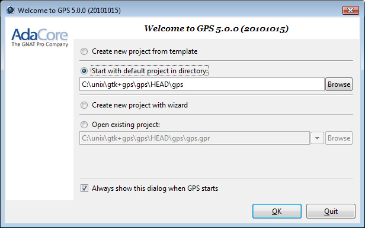
When starting GPS, a welcome dialog is displayed by default, giving the following choices:
If you select this option and click on the OK button, GPS will
first look for a project called `default.gpr' in the current directory
and load it if found. Otherwise, it will copy in
the current directory the default project found under
`<prefix>/share/gps/default.gpr' and load it.
GPS will remove this copy when exiting or loading another project, if the
copy has not been modified during the session.
If the current directory is not writable, GPS will instead load directly
<prefix>/share/gps/readonly.gpr.
Selecting this option and clicking on the OK button will start a
wizard allowing you to specify most of the properties for a new project. Once
the project is created, GPS will save it and load it automatically.
See The Project Wizard for more details on the project wizard.
Several kinds of wizard are available. Depending on the kind of project, you will get asked different type of information. In the end, GPS will create one or more project files, and automatically load them.
One of the wizard, "From existing Ada sources", will try and import a set of sources and object files, and attempt to create one or more project files so that building your application through these project files will put the objects in the same directory they are currently in. If you have not compiled your application when launching this wizard, GPS will create a single project file and all object files will be put in the same object directory. This is the prefered method when importing sources with duplicate file names, since the latter is only authorized in a single project file, not across various project files.
You can select an existing project by clicking on the Browse button,
or by using a previously loaded project listed in the combo box. When a
project is selected, clicking on the OK button will load this
project and open the main window.
If unset, the welcome dialog won't be shown in future sessions.
In this case, GPS will behave as follows: it will first look for a
-P switch on the command line, and load the corresponding project if
present.
Then, it will look for a project file in the current directory and will
load the first project file found.
If no project file can be found in the current directory, GPS will start with the default project.
To reset this property, go to the menu Edit->Preferences.
See section The Preferences Dialog.
If you click on this button, GPS will terminate immediately.
When you specify a -P switch on the command line, or if there is only one project file in the current directory, GPS will start immediately with the project file specified, instead of displaying the welcome dialog.
In addition, if you specify source files on the command line, GPS will also start immediately, using the default project if no project is specified.
By default, files specified on the command line are taken as is and can
be absolute or relative pathnames. In addition, if you prepend a filename
with the = character, then GPS will look for the file in the source
search path of the project.
| [ < ] | [ > ] | [ << ] | [ Up ] | [ >> ] | [Top] | [Contents] | [Index] | [ ? ] |
This is a standard menu bar that gives access to all the global functionalities of GPS. It is usually easier to access a given functionality using the various contextual menus provided throughout GPS: these menus give direct access to the most relevant actions given the current context (e.g. a project, a directory, a file, an entity, …). Contextual menus pop up when the right mouse button is clicked.
The menu bar gives access to the following items:
See The File Menu.
See The Edit Menu.
See section The Navigate Menu.
See section The VCS Menu.
See section The Project Menu.
See section The Build Menu.
See section The Debug Menu.
See section The Tools Menu.
See section Multiple Document Interface.
See section The Help Menu.
| [ < ] | [ > ] | [ << ] | [ Up ] | [ >> ] | [Top] | [Contents] | [Index] | [ ? ] |
The tool bar provides shortcuts via buttons to some typical actions: creating a new file, opening a file, saving the current file; undo/redo last editing; cut to clipboard, copy to clipboard, paste from clipboard; go to previous/next location; start/continue the debugging session, step/next execution, finish current procedure.
The icon on the far right of the tool bar will be animated to indicate that an action (e.g. a build or a search) is going on in the background.
| [ < ] | [ > ] | [ << ] | [ Up ] | [ >> ] | [Top] | [Contents] | [Index] | [ ? ] |
The whole work space is based on a multiple document interface, See section Multiple Document Interface.
| [ < ] | [ > ] | [ << ] | [ Up ] | [ >> ] | [Top] | [Contents] | [Index] | [ ? ] |
The project explorer provides a view of the various components of your project
hierarchy, as listed below.
It is displayed by default on the left side of the main window, and can
be selected by using the Project->Project View or
Tools->Views->Project menu items.
Under Windows, it is possible to drop files (coming e.g. from the Explorer) in the project explorer with the following behavior: a project file dropped will be loaded; any other file will be opened in a new source editor.
The project explorer, as well as the file and outline view provide an interactive search capability allowing you to quickly search in the information currently displayed. The default key to start an interactive search is Ctrl-i. This will open a small window at the bottom of the explorer where you can interactively type names. The first matching name in the tree will be selected while you type it. You can then also use the up and down keys to navigate through all the items matching the current text.
The various components that are displayed are:
All the sources you are working with are put under control of projects. These projects are a way to store the switches to use for the various tools, as well as a number of other properties.
They can be organized into a project hierarchy, where a root project can import other projects, with their own set of sources.
Initially, a default project is created, that includes all the sources in the current directory.
The Project View displays this project hierarchy: the top node
is the root project of your application (generally, this is where the
source file that contains the main subprogram will be located). Then a node
is displayed for each imported project, and recursively for their own imported
projects.
A given project might appear multiple times in the
Project View, if it is imported by several other projects.
There exists a second display for this project view, which lists all projects with no hierarchy: all projects appear only once in the explorer, at the top level. This display might be useful for deep project hierarchies, to make it easier to find projects in the explorer.
This display is activated through the contextual menu entry
Show flat view, which acts as a switch between the two displays.
A special icon with a pen mark is displayed if the project was modified, but not saved yet. You can choose to save it at any time by right-clicking on it. GPS will remind you to save it before any compilation, or save it automatically, if the corresponding preference is saved.
The files inside a project can be organized into several physical
directories on the disk. These directories are displayed under each
project node in the Project View
You can chose whether you want to see the absolute path names for the
directories or paths relative to the location of the project. This is done
through the Show absolute paths contextual menu.
Special nodes are created for object and executables directories. No files are shown for these.
The source files themselves are stored in the directories, and displayed under the corresponding nodes. Note that only the source files that actually belong to the project (i.e. are written in a language supported by that project and follow its naming scheme) are actually visible. For more information on supported languages, See section Supported Languages.
A given file might appear multiple times in the Project View,
if the project it belongs to is imported by several other projects.
If you left click on a file and keep the button pressed, you can drop it anywhere in GPS to open an editor at that location.
If you open the node for a source file, the file is parsed by one of the fast parsers integrated in GPS so that all entities declared in the project can be shown. These entities are grouped into various categories, which depend on the language. Typical categories include subprograms, packages, types, variables, tasks,…
Double-clicking on a file, or simple clicking on any entity will open a source editor and display respectively the first line in this file or the line on which the entity is defined.
If you open the search dialog through the Navigate->Find or Replace...
menu, you have the possibility to search for anything in the explorer,
either a file or an entity. Note that searching for an entity can be slow
if you have lots of files, and/or big files.
A contextual menu, named Locate in Explorer, is also provided when
inside a source editor. This will automatically search for the first entry for
this file in the explorer. This contextual menu is also available in other
modules, e.g. when selecting a file in the Dependency Browser.
| [ < ] | [ > ] | [ << ] | [ Up ] | [ >> ] | [Top] | [Contents] | [Index] | [ ? ] |
As described in the GNAT User's Guide, the project files can be configured through external variables (typically environment variables). This means that e.g. the exact list of source files, or the exact switches to use to compile the application can be changed when the value of these external variables is changed.
GPS provides a simple access to these variables, through a window
called the Scenario View. These variables are called
Configuration Variables, since they provide various scenarios for
the same set of project files.

A combo box is displayed in this area for each environment variable the project depends on. The current value of the variable can be set simply by selecting it from the pop-down window that appears when you click on the arrow on the right of the variable name
New variables can be added through the contextual menu
Project->Add Configuration Variable in the Project View.
The list of possible values for a variable can be changed by clicking on the
button on the left of the variable's name.
Whenever you change the value of one of the variables, the project is automatically recomputed, and the list of source files or directories is changed dynamically to reflect the new status of the project. Starting a new compilation at that point will use the new switches, and all the aspects of GPS are immediately affected according to the new setup.
| [ < ] | [ > ] | [ << ] | [ Up ] | [ >> ] | [Top] | [Contents] | [Index] | [ ? ] |
In addition to the Project View, GPS also provides a
File View through the Tools->Views->Files menu.
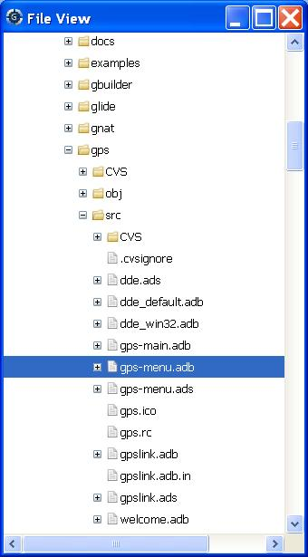
In this view, directories are displayed exactly as they are organized physically on the disk (including Windows drives).
By default, the File View will display all the files that exist
on the disk. Filters can be set through the contextual menu to only
show the files and directories that belong to the project
hierarchy by using the contextual menu Show files from project only.
Each source file can also be explored as described in The Project View. Drag and drop of files is also possible from the files view, to conveniently open a file.
| [ < ] | [ > ] | [ << ] | [ Up ] | [ >> ] | [Top] | [Contents] | [Index] | [ ? ] |
The Window View displays the currently opened windows.
It is opened through the Tools->Views->Windows menu.
It can display the opened windows in one of two ways:
The mode is selected through the contextual menu.
You can also choose, through this contextual menu, whether only the source editors should be visible, or whether all windows should be displayed.
This window allows you to quickly select and focus on a particular window, by clicking on the corresponding line with the left mouse button. If you click and leave the mouse button pressed, this starts a drag and drop operation so that you can also move the window to some other place in the desktop (see the description of the MDI earlier in this document).
Multiple windows can be selected by clicking with the mouse while pressing the control or shift keys. The Window view provides a contextual menu to easily close all selected windows at once, which is a very fast way to cleanup your desktop after you have finished working on a task.
| [ < ] | [ > ] | [ << ] | [ Up ] | [ >> ] | [Top] | [Contents] | [Index] | [ ? ] |
The Outline View, which you can choose to activate through the
Tools->Views->Outline menu, shows the contents of the current file.

The exact meaning of this depends on the language you are seeing. For Ada, C and C++ files, this is the list of entities that are declared at the global level in your current file (Ada packages, C++ classes, subprograms, Ada types, …).
Clicking on any entity in this view will automatically jump to the right line in the file, including if your file has been slightly modified since the outline view was last refreshed.
To refresh the contents of the view, select the Refresh
entry in the contextual menu (right-click anywhere in the outline view).
Alternatively, you can switch temporarily to another window and come back
to the same editor, and the outline view will be refreshed.
There are several preferences associated with the outline view, See Outline Preferences.
| [ < ] | [ > ] | [ << ] | [ Up ] | [ >> ] | [Top] | [Contents] | [Index] | [ ? ] |
GPS has an advanced mechanism for handling copy/paste operations.
When you select the menus Edit->Copy or Edit->Cut, GPS adds the
current selection to the clipboard. As opposed to what lots of applications
do, it doesn't discard the previous contents of the clipboard, but save it for
future usage. It saves a number of entries this way, up to 10 by default.
This value is configurable through the Clipboard Size preference.
When you select the menu Edit->Paste, GPS will paste the last entry
made in the clipboard at the current location in the editor.
If you immediately select Edit->Paste Previous, this newly inserted
text will be removed, and GPS will instead insert the second to last entry
added to the clipboard. You can keep selecting the same menu to get access
to older entries.
This is a very powerful mechanism, since it means you can copy several distinct lines from a place in an editor, move to an other editor and paste all these separate lines, without having to go back and forth between the two editors.
The Clipboard View provides a graphical mean of seeing what is currently
stored in the clipboard. It appears as a list of lines, each of which is
associated with one level of the clipboard. The text that shows in these lines
is the first line of the selection at that level that contains non blank
characters. Leading characters are discarded. [...] is prepended
or appended in case the selection has been truncated.
If you bring the mouse over a line in the Clipboard View, a tooltip will
pop up showing the entire selection corresponding to the line by opposition to
the possibly truncated one.
In addition, one of the lines has an arrow on its left. This indicates the
line that will be pasted when you select the menu Edit->Paste. If you
select instead the menu Edit->Paste Previous, then the line below that
one will be inserted instead.
If you double-click on any of these lines, GPS will insert the corresponding
text in the current editor, and make the line you clicked on the current line,
so that selecting Edit->Paste or the equivalent shortcut will now
insert that line.
The contextual menu in the clipboard view provides one entry, which is
Append To Previous. If you select this entry, the select line will
be append to the one below, and removed from the clipboard. This means that
selection Edit->Paste will in fact paste the two entries at the same
time. This is in particular useful when you want to copy lines from separate
places in the initial file, merge them, and then paste them together one or
more times later on, through a single operation.
| [ < ] | [ > ] | [ << ] | [ Up ] | [ >> ] | [Top] | [Contents] | [Index] | [ ? ] |
The callgraph view plays a role similar the callgraph browser. They display the same information about entities, but in two different ways: the callgraph view displays the information in a tree, easily navigable and perhaps easier to manipulate when lots of entities are involved; the callgraph browser displays the information as graphical boxes that can be manipulated on the screen, and is best suited to generate a diagram that can be later exported to your own documents.
This callgraph view is used to display the information about what subprograms are called by a given entity, and, opposite, what entities are calling a given entity.
This view is automatically displayed when you select one of the contextual
menus ... calls and
... is called by. Every time you select one of
these menus, a new view is opened to display that entity.
Whenever you expand a node from the tree by clicking on the small expander arrow on the left of the line, further callgraph information is computed for the selected entity, which makes it very easy to get information for a full callgraph tree.
Closing and expanding a node again will recompute the callgraph for the entity.
On the right side of the main tree, a list displays the locations of calls for the selected entity. Clicking on entries in this list opens editors showing the corresponding location.
The Callgraph View supports keyboard navigation: Up and Down
keys navigate between listed locations, Left collapses the current
level, Right expands the current level, and Return jumps to the
currently selected location.
All open callgraph views are automatically saved in the desktop, and restored the next time you restart GPS. However, the information displayed in these might no longer be accurate at this stage, since it shows the status of the callgraph during the last GPS session.
| [ < ] | [ > ] | [ << ] | [ Up ] | [ >> ] | [Top] | [Contents] | [Index] | [ ? ] |
Bookmarks are a convenient way to remember places in your code or in your environment so that you can go back to them at any point in the future. These bookmarks are saved automatically when GPS exits, and restored when it is reloaded, so that exist across GPS sessions.
Bookmarks will automatically remember the exact location in an editor, not in terms of line/column, but in terms of which word they point to. If you modify the file through GPS, the bookmark will be automatically updated to keep refering to the same place. Likewise if you close and reopen the file. However, when the file is modified outside of GPS, the bookmark will not be aware of that change, and will thus reference another place in the file.
The menu Edit->Create Bookmark allows you to create a bookmark
at the current location (either in the editor, or the browser for instance).
All the bookmarks you have created will be visible in the
Tools->Views->Bookmarks window. Clicking on the small icon to the left
side of each line will immediately jump to that bookmark.
You can rename a bookmark so that it is easier to remember what it refers to. To do so, open the Bookmarks window, and click twice on the line of the bookmark. This will change the way the name is displayed, so that you can edit it in place. Press enter when you are done modifying the name.
You can delete an existing bookmark by right clicking on the line, and
select Delete bookmark in the contextual menu.
| [ < ] | [ > ] | [ << ] | [ Up ] | [ >> ] | [Top] | [Contents] | [Index] | [ ? ] |
The Messages window is used by GPS to display information and feedback about operations, such as build output, information about processes launched, error messages.
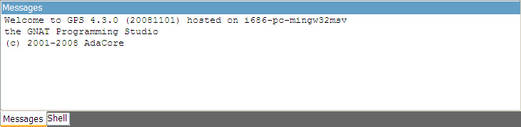
This is a read-only window, which means that only output is available, no input is possible.
For an input/output window, see The Execution Window and also The Shell and Python Windows.
| [ < ] | [ > ] | [ << ] | [ Up ] | [ >> ] | [Top] | [Contents] | [Index] | [ ? ] |
These windows give access to the various scripting languages supported by GPS, and allow you to type commands such as editing a file or compiling without using the menu items or the mouse.
Some of these windows, especially the python window, might not be visible in your version of GPS, if GPS wasn't compiled with the support for that specific scripting language.
To show the shell consoles, select the menu Tools.
See Scripting GPS for more information on using scripting languages within GPS.
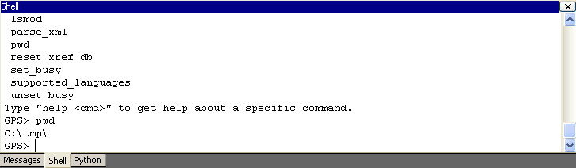
You can use the up and down keys to navigate through the history of commands.
| [ < ] | [ > ] | [ << ] | [ Up ] | [ >> ] | [Top] | [Contents] | [Index] | [ ? ] |
The Location Tree is filled whenever GPS needs to display a list of locations in the source files (typically, when performing a global search, compilation results, and so on).
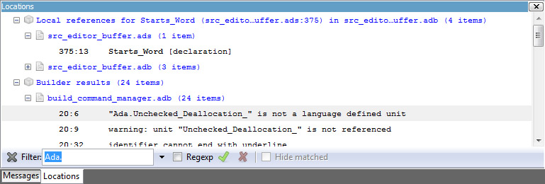
The Location Tree shows a hierarchy of categories, which contain files, which contain locations. Clicking on a location item will bring up a file editor at the requested place. Right-clicking on file or category items brings up a contextual menu allowing you to remove the corresponding node from the view.
Every time a new category is created, as a result of a compilation or a
search operation for instance, the first entry of that category is
automatically selected, and the corresponding editor opened. This behavior
can be controlled through a preference Jump To First Location.
To navigate through the next and previous location (also called Tag),
you can use the menu items Navigate->Previous Tag and
Navigate->Next Tag, or the corresponding key bindings.
Left-clicking on a line in the Location Tree brings up a contextual menu with the following entries:
Toggle the sorting of the entries by sub-categories. This is useful, for example, for separating the warnings from the errors in the build results.
Expand all the files in the current categories.
Collapse all the categories in the Locations View
Open the location contained in the message, if any.
Remove all entries from the Locations View.
In some cases, a wrench icon will be associated on the left of a compilation message. See Code Fixing for more information on how to make advantage of this icon.
| [ < ] | [ > ] | [ << ] | [ Up ] | [ >> ] | [Top] | [Contents] | [Index] | [ ? ] |
Each time a program is launched using the menu Build->Run, a new
execution window is created to provide input and output for this program.
In order to allow post mortem analysis and copy/pasting, the execution windows are not destroyed when the application terminates.
To close an execution window, click on the cross icon on the top right corner
of the window, or use the menu File->Close, or the menu
Window->Close or the key binding Ctrl-W.
If you close the execution window while the application is still running, a dialog window is displayed, asking whether you want to kill the application, or to cancel the close operation.
| [ < ] | [ > ] | [ << ] | [ Up ] | [ >> ] | [Top] | [Contents] | [Index] | [ ? ] |
The status line is composed of two areas: on the left a status bar and on the right one or several progress bars.
The status bar is used to display temporary information about GPS
operations. Note that most of the information GPS displays can be found
in the Messages window.
The progress bars are used to display information about on going operations such as builds, searches, or VCS commands. These tasks operate in the background, and can be paused/resumed via a contextual menu. This contextual menu is available by right-clicking on the progress bars themselves or on the corresponding lines in the Task Manager. See The Task Manager
| [ < ] | [ > ] | [ << ] | [ Up ] | [ >> ] | [Top] | [Contents] | [Index] | [ ? ] |
The Task Manager window lists all the currently running GPS operations that run in the background, such as builds, searches or VCS commands.
For each of these tasks, the Task Manager shows the status of the task, and the current progress. The execution of theses tasks can be suspended using a contextual menu, brought up by right-clicking on a line.
When exiting GPS, if there are tasks running in the Task Manager, a window will display those tasks. You can also bring up a contextual menu on the items in this window. You can force the exit at any time by pressing the confirmation button, which will kill all remaining tasks, or continue working in GPS by pressing the Cancel button.

| [ < ] | [ > ] | [ << ] | [ Up ] | [ >> ] | [Top] | [Contents] | [Index] | [ ? ] |
| 3.1 The Help Menu | ||
| 3.2 Adding New Help Files |
By default when you start GPS, the working area contains a welcome page giving a few starting points in the online help.
Online help for the GNAT tools is available from the Help menu item.
GPS launches an external html browser to view these pages. (See
The Preferences Dialog on how to configure this under Unix. Under
Windows systems, the default HTML browser is used.)
| [ < ] | [ > ] | [ << ] | [ Up ] | [ >> ] | [Top] | [Contents] | [Index] | [ ? ] |
The Help menu item provides the following entries:
Open the GPS Welcome page.
Open a file selection dialog to load an HTML file.
Open a special HTML file that contains links for all the documentation files currently registered in GPS, See section Adding New Help Files.
Display a dialog giving information about the versions of GPS and GNAT used:

This menu contains a number of additional entries, depending on what documentation packages were installed on your system. See the next section to see how to add new help files.
| [ < ] | [ > ] | [ << ] | [ Up ] | [ >> ] | [Top] | [Contents] | [Index] | [ ? ] |
GPS will search for the help files in the list of directories set in
the environment variable GPS_DOC_PATH (a colon-separated list
of directories on Unix systems, or semicolon-separated list of
directories on Windows systems). In addition, the
default directory <prefix>/share/doc/gps/html is also searched. If the
file cannot be found in any of these directories, the corresponding
menu item will be disabled.
The environment variable GPS_DOC_PATH can either be set by each
user in his own environment, or can be set system-wide by modifying
the small wrapper script `gps' itself on Unix systems.
It can also be set programmatically through the GPS shell or any of the scripting languages. This is done with
GPS.add_doc_directory ("/home/foo")
|
The specific list of files shown in the menus is set by reading the
index files in each of the directories in GPS_DOC_PATH. These
index files must be called `gps_index.xml'.
The format of these index files is specified in see section Adding documentation.
| [ < ] | [ > ] | [ << ] | [ Up ] | [ >> ] | [Top] | [Contents] | [Index] | [ ? ] |
| 4.1 Selecting Windows | ||
| 4.2 Closing Windows | ||
| 4.3 Splitting Windows | ||
| 4.4 Floating Windows | ||
| 4.5 Moving Windows |
All the windows that are part of the GPS environment are under control of what is commonly called a multiple document interface (MDI for short). This is a common paradigm on windowing systems, where related windows are put into a bigger window which is itself under control of the system or the windows manager.
This means that, by default, no matter how many editors, browsers, explorers,… windows you have opened, your system will still see only one window (On Windows systems, the task bar shows only one icon). However, you can organize the GPS windows exactly the way you want, all inside the GPS main window.
This section will show the various capacities that GPS provides to help you organize your workspace.
| [ < ] | [ > ] | [ << ] | [ Up ] | [ >> ] | [Top] | [Contents] | [Index] | [ ? ] |
At any time, there is only one selected window in GPS (the active
window). You can select a window either by clicking in its title bar,
which will then get a different color, or by selecting its name in the
menu Window.
Alternatively, windows can be selected with the keyboard. By default, the selection key is Alt-Tab. When you press it, a temporary dialog is popped-up on the screen, with the name of the window that will be selected when the key is released. If you press the selection key multiple times, this will iterate over all the windows currently open in GPS.
This interactive selection dialog is associated with a filter, displayed below the name of the selected window. If you maintain Alt pressed while pressing other keys than Tab, this will modify the current filter. From then on, pressing Alt-Tab will only iterate through those windows that match the filter.
The filter is matched by any window whose name contains the letter you have typed. For instance, if you are currently editing the files `unit1.adb' and `file.adb', pressing t will only leave `unit1.adb' selectable.
| [ < ] | [ > ] | [ << ] | [ Up ] | [ >> ] | [Top] | [Contents] | [Index] | [ ? ] |
Wherever the windows are displayed, they are always closed in the same manner. In the right side of the title bar of the window, one small button is displayed, looking like a cross. Clicking on this button will close the window.
When a window is closed, the focus is given to the window of the same part of the MDI (each of the docks or the middle area) that previously had the focus. Therefore, if you simply open an editor as a result of a cross-reference query, you can simply close that editor to go back to where you were before.
Alternatively, you can also select the window by clicking anywhere in
its title bar, and then select the menu Window->Close
| [ < ] | [ > ] | [ << ] | [ Up ] | [ >> ] | [Top] | [Contents] | [Index] | [ ? ] |
The window in the central area of the MDI can be split at will, through
any combination of horizontal and vertical splits.
This feature requires at least two windows (text editors, browsers,...)
to be superimposed in the central area. Selecting either the
Window->Split Horizontally or Window->Split Vertically menus
will then split the selected window in two. In the left (resp. top) pane,
the currently selected window will be left on its own. The rest of the
previously superimposed windows will be put in the right (resp. bottom)
pane. You can then in turn split these remaining windows to achieve any
layout you want.
All split windows can be resized interactively by dragging the handles that
separate them. A preference (menu
Edit->Preferences) controls whether this resizing is done in opaque
mode or border mode. In the latter case, only the new handle position will
be displayed while the mouse is dragged.
You may want to bind the key shortcuts to the menus
Window->Split Horizontally
as well as Window->Split Vertically using either the preference
Dynamic Key Binding, or the key manager. In addition, if you want to
achieve an effect similar to e.g. the standard Emacs behavior (where
control-x 2 splits a window horizontally, and control-x 3 splits
a window vertically), you can use the key manager
(see section The Key Manager Dialog).
Several editors or browsers can be put in the same area of the MDI. In such a case, they will be grouped together in a notebook widget, and you can select any of them by clicking on the corresponding tab. Note that if there are lots of windows, two small arrows will appear on the right of the tabs. Clicking on these arrows will show the remaining tabs.
In some cases GPS will change the color and size of the title (name) of a window in the notebook tab. This indicates that the window content has been updated, but the window wasn't visible. Typically, this is used to indicate that new messages have been written in the messages or console window.
| [ < ] | [ > ] | [ << ] | [ Up ] | [ >> ] | [Top] | [Contents] | [Index] | [ ? ] |
Although the MDI, as described so far, is already extremely flexible, it is possible that you prefer to have several top-level windows under direct control of your system or window manager. This would be the case for instance if you want to benefit from some extra possibilities that your system might provide (virtual desktops, different window decoration depending on the window's type, transparent windows,…).
GPS is fully compatible with this behavior, since windows can also be
floating windows. Any window that is currently embedded in the MDI
can be made floating at any time, simply by selecting the window and
then selecting the menu Window->Floating. The window will then
be detached, and can be moved anywhere on your screen, even outside of
GPS's main window.
There are two ways to put a floating window back under control of GPS.
The more general method is to select the window through its title in
the menu Window, and then unselect Window->Floating.
The second method assumes that the preference Destroy Floats in
the menu Edit->Preferences has been set to false. Then, you can
simply close the floating window by clicking in the appropriate title
bar button, and the window will be put back in GPS. If you actually
want to close it, you need to click once again on the cross button in
its title bar.
A special mode is also available in GPS, where all windows are floating. The MDI area in the main window becomes invisible. This can be useful if you rely on windows handling facilities supported by your system or window manager but not available in GPS. This might also be useful if you want to have windows on various virtual desktops, should your window manager support this.
This special mode is activated through a preference (menu
Edit->Preferences). This preference is entitled All
Floating.
| [ < ] | [ > ] | [ << ] | [ Up ] | [ >> ] | [Top] | [Contents] | [Index] | [ ? ] |
As we have seen, the organization of windows can be changed at any time
by selecting a notebook containing several editors or browsers, and selecting
one of the Split menus in the Window menu.
A more intuitive method is also provided, based on the drag-and-drop paradigm. The idea is simply to select a window, wherever it is, and then, by clicking on it and moving the mouse while keeping the left button pressed, drop it anywhere else inside GPS.
Selecting an item so that it can be dragged is done simply by clicking with the left mouse button in its title bar, and keep the button pressed while moving the mouse.
If the window is inside a notebook, you can also choose to select the notebook tab to start dragging the window around.
While you keep the mouse button pressed, and move the mouse around, the selected drop area is highlighted with a dashed border. This shows precisely where the window would be put if you were to release the mouse button at that point.
Here are the various places where a window can be dropped:
The location of the current window is indicated by a dashed rectangle, and the window you are dragging will be positioned at the same location as that rectangle: either on top of the window on which you dropped it (therefore they will both be put inside a notebook), or to one of the sides of that window, splitting as needed.
If you drop a window outside of GPS (for instance, on the background of your screen), the window will be floated.
If you maintain the shift key pressed while dropping the window, this might result in a copy operation instead of a simple move. For instance, if you are dropping an editor, a new view of the same editor will be created, resulting in two views present in GPS: the original one is left at its initial location, and a second view is created at the new location.
If you maintain the control key pressed while dropping the window, all the windows that were in the same notebook are moved, instead of the single one you selected. This is the fastest way to move a group of windows to a new location, instead of moving them one by one.
| [ < ] | [ > ] | [ << ] | [ Up ] | [ >> ] | [Top] | [Contents] | [Index] | [ ? ] |
| [ < ] | [ > ] | [ << ] | [ Up ] | [ >> ] | [Top] | [Contents] | [Index] | [ ? ] |
Source editing is one of the central parts of GPS, giving in turn access to many other functionalities, including extended source navigation and source analyzing tools.

The integrated source editor provides all the usual capabilities found in integrated environments, including:
Showing the full name of the file including path information.
This is the left area of the source editor. Line numbers can be disabled from the preferences. See section The Preferences Dialog. Note that this area can also display additional information, such as the current line of execution when debugging, or cvs annotations.
Located on the right of the editor, it allows you to scroll through the source file.
This column, when visible, is located on the left of the editor. It allows you to view all the highlighted lines in a file, at a glance. For example, all the lines containing compilation errors are displayed in the Speed Column. See The Preferences Dialog for information on how to customize the behavior of the Speed Column.
Giving information about the file. It is divided in two sections, one on the left and one on the right of the window.
The first box on the left shows the current subprogram name for languages
that support this capability. Currently Ada, C and C++
have this ability. See The Preferences Dialog to enable or
disable this feature.
If the file is maintained under version control, and version control is supported and enabled in GPS, the first box on the left will show VCS information on the file: the VCS kind (e.g. CVS), followed by the revision number, and if available, the status of the file.
The second box shows the current editing mode. This is either Insert or Overwrite and can be changed using the insert keyboard keys by default.
The third box shows the writable state of the file. You can change this state by clicking on the label directly: this will switch between Writable and Read Only. Note that this will not change the permissions of the file on disk, it will only change the writable state of the source editor within GPS.
When trying to save a file which is read only on the disk, GPS will ask for confirmation, and if possible, will force saving of the file, keeping its read only state.
The fourth box shows whether the file has been modified since the last save. The three possible states are:
The file has not been modified since the file has been loaded or saved.
The file has been modified since last load or save. Note that if you undo all the editing operations until the last save operation, this label will change to Unmodified.
The file has been saved and not modified since.
The fifth box displays the position of the cursor in the file by a line and a column number.
Displayed when you right-click on any area of the source editor. See in particular Contextual Menus for Source Navigation for more details.
Based on the programming language associated with the file, reserved words and languages constructs such as comments and strings are highlighted in different colors and fonts. See The Preferences Dialog for a list of settings that can be customized.
By default, GPS knows about many languages. You can also easily add support for other languages through XML files. Most languages supported by GPS will provide syntax highlighting in the editor.
When enabled, lines are automatically indented each time you press the Enter key, or by pressing the indentation key. The indentation key is Ctrl-Tab by default, and can be changed in the key manager dialog, See section The Key Manager Dialog.
If a set of lines is selected when you press the indentation key, this whole set of lines will be indented.
When you leave the mouse over a word in the source editor, a small window will automatically pop up if there are relevant contextual information to display about the word.
The type of information displayed depends on the current state of GPS.
In normal mode, the entity kind and the location of declaration is displayed when this information is available. That is, when the cross-reference information about the current file has been generated. If there is no relevant information, no tooltip is displayed. See Support for Cross-References for more information.
In addition, the documentation for the entity is displayed. This is the block of comments just before or just after the entity's declaration of body. There mustn't be any blank line between the two. For instance, the following are valid documentation for Ada and C:
-- A comment for A A : Integer; B : Integer; -- A comment for B C : Integer; -- Not a comment for C, there is a blank linke |
In debugging mode, the value of the variable under the mouse is displayed in the pop up window if the variable is known to the debugger. Otherwise, the normal mode information is displayed.
You can disable the automatic pop up of tool tips in the Editor section of the preferences dialog. See section The Preferences Dialog.
GPS provides two kind of code completion: a smart code completion based on semantic information (see Smart Completion), and a text completion.
It is useful when editing a file and using often the same words to get automatic word completion. This is possible by typing the Ctrl-/ key combination (customizable through the key manager dialog) after a partial word: the next possible completion will be inserted in the editor. Typing this key again will cycle through the list of possible completions.
Text completions are searched in all currently open source files, by first looking at the closest words and then looking further in the source as needed.
When the cursor is moved before an opening delimiter or after a closing delimiter, then both delimiters will be highlighted. The following characters are considered delimiters: ()[]{}. You can disable highlighting of delimiters in the preferences.
You can also jump to a corresponding delimiter by using the Ctrl-' key, that can be configured in the preferences. Typing twice on this key will move the cursor back to its original position.
You can configure the editor to highlight the current line with a certain color. See section The Preferences Dialog.
If this preference is enabled, the editor will highlight the current block
of code, e.g. the current begin...end block, or loop statement,
etc…
The block highlighting will also take into account the changes made in your source code, and will recompute automatically the current block when needed.
This capability is currently implemented for Ada, C and C++ languages.
When enabled, the editor will display - icons on the left side,
corresponding to the beginning of subprograms. If you click on one of these
icons, all the lines corresponding to this subprogram are hidden, except
the first one. As for the block highlighting, these icons are recomputed
automatically when you modify your sources and are always kept up to date.
This capability is currently implemented for Ada, C and C++ languages.
You can configure the editor to periodically save modified files. See autosave delay for a full description of this capability.
GPS also integrates with existing third party editors such as
Emacs or vi. See section Using an External Editor.
| [ < ] | [ > ] | [ << ] | [ Up ] | [ >> ] | [Top] | [Contents] | [Index] | [ ? ] |
| [ < ] | [ > ] | [ << ] | [ Up ] | [ >> ] | [Top] | [Contents] | [Index] | [ ? ] |
In addition to the standard keys used to navigate in the editor (up, down, right, left, page up, page down), the integrated editor provides a number of key bindings allowing easy navigation in the file.
In addition, there are several ways to define new key bindings, see Defining text aliases and Binding actions to keys.
Pressing these two keys allow you to enter characters using their hexadecimal value. For example, pressing Ctrl-Shift-2-0 will insert a space character (ASCII 32, which is 20 in hexadecimal).
Cut to clipboard
Copy to clipboard
Paste from clipboard
Save file to disk
Undo previous insertion/deletion
Redo previous insertion/deletion
Toggle overwrite mode
Select the whole file
Go to the beginning of the line
Go to the end of the line
Go to the beginning of the file
Go to the end of the file
Go to the beginning of the line, or to the previous line if already at the beginning of the line.
Go to the end of the line, or to the beginning of the next line if already at the end of the line.
Delete end of the current word.
Delete beginning of the current word.
| [ < ] | [ > ] | [ << ] | [ Up ] | [ >> ] | [Top] | [Contents] | [Index] | [ ? ] |
The file selector is a dialog used to select a file. Under Windows, the default is to use the standard file selection widget. Under other platforms, the file selector is a built-in dialog:

This dialog provides the following areas and capabilities:
go back in the list of directories visited
go forward
go to parent directory
refresh the contents of the directory
go to home directory (value of the HOME environment variable, or / if
not defined)
+ and - icons on the left of the directories, or
navigate using the keyboard keys: up and down to select the
previous or the next directory, + and - to expand and collapse
the current directory, and backspace to select the parent directory.
OK and Cancel buttons.
When you have selected the right file, clock on OK to confirm, or
click on Cancel at any time to cancel and close the file selection.
| [ < ] | [ > ] | [ << ] | [ Up ] | [ >> ] | [Top] | [Contents] | [Index] | [ ? ] |
The main menus that give access to extended functionalities related to source editing are described in this section.
| [ < ] | [ > ] | [ << ] | [ Up ] | [ >> ] | [Top] | [Contents] | [Index] | [ ? ] |
Open a new untitled source editor. No syntax highlighting is performed until the file is saved, since GPS needs to know the file name in order to choose the programming language associated with a file.
When you save a new file for the first time, GPS will ask you to enter the name of the file. In case you have started typing Ada code, GPS will try to guess based on the first main entity in the editor and on the current naming scheme, what should be the default name of this new file.
Create a new view of the current editor. The new view shares the same contents: if you modify one of the source views, the other view is updated at the same time. This is particularly useful when you want to display two separate parts of the same file, for example a function spec and its body.
A new view can also be created by keeping the shift key pressed while drag-and-dropping the editor (see Moving Windows). This second method is preferred, since you can then specify directly where you want to put the new view. The default when using the menu is that the new view is put on top of the editor itself.
Open a file selection dialog where you can select a file to edit. Under Windows, this is the standard file selector. Under other platforms, this is a built-in file selector described in The File Selector.
Open a dialog where you can easily and rapidly select a source file from your project.
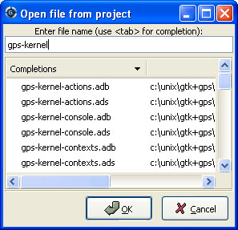
The first text area allows you to type a file name. You can start the beginning of a file name, and use the Tab key to complete the file name. If there are several possible completions, the common prefix will be displayed, and a list of all possible completions will be displayed in the second text area.
You can then either complete the name by typing it, or continue hitting the Tab key to cycle through the possible completions, or click on one of the completions in the list displayed.
If you press the down arrow key, the focus will move to the list of completions, so that you can select a file from this list without using the mouse.
Once you have made your choice, click on the OK button to validate.
Clicking on Cancel or hitting the Esc key will cancel the
operation and close the dialog.
This dialog will only show each file once. If you have extended
projects in your hierarchy, some files may be redefined in some
extending project. In this case, only the files from the extending
project are shown, and you cannot have access through this dialog to
the overridden files of the extended project. Of course, you can still
use the project explorer or the standard File->Open menu to
open these files.
Open a sub menu containing a list of the ten most recent files opened in GPS, so that you can reopen them easily.
Save the current source editor if needed.
Same current file under a different name, using the file selector dialog. See section The File Selector.
Give access to extra save capabilities.
Save all items, including projects, etc…
Save the desktop to a file. The desktop includes information about files, graphs, … and their window size and position in GPS. The desktop is saved per top level project, so that if you reload the same project you get back to the same situation you were in when you left GPS. Instead, if you load a different project another desktop will be loaded (or the default desktop).
Save the current desktop as the default desktop. The next time you start GPS, if there is no saved desktop associated with the chosen project, then this desktop will be used. If you haven't saved explicitely a default desktop, GPS will use its own default desktop from `prefix/share/gps/desktop.xml' in its installation directory.
This default desktop is never overidden automatically by GPS.
Open a directory selection dialog that lets you change the current working directory.
This sub menu gives access to functionalities related to the Messages window. See section The Messages Window.
Clear the contents of the Messages window.
Save the contents of the Messages window to a file. A file selector is displayed to choose the name and location of the file.
Open a file selector to load the contents of a file in the Messages window. Source locations are identified and loaded in the Locations Tree. See section The Locations Tree.
Close the current window. This applies to all GPS windows, not only source editors.
Print the current window contents, optionally saving it interactively if it has been modified. The Print Command specified in the preferences is used if it is defined. On Unix this command is required; on Windows it is optional.
On Windows, if no command is specified in the preferences the standard Windows print dialog box is displayed. This dialog box allows the user to specify the target printer, the properties of the printer, which pages to print (all, or a specific range of pages), the number of copies to print, and, when more than one copy is specified, whether the pages should be collated. Pressing the Cancel button on the dialog box returns to GPS without printing the window contents; otherwise the specified pages and copies are printed on the selected printer. Each page is printed with a header containing the name of the file (if the window has ever been saved). The page number is printed on the bottom of each page. See Print Command.
Exit GPS after confirmation and if needed, confirmation about saving modified windows and editors.
| [ < ] | [ > ] | [ << ] | [ Up ] | [ >> ] | [Top] | [Contents] | [Index] | [ ? ] |
Undo previous insertion/deletion in the current editor.
Redo previous insertion/deletion in the current editor.
Cut the current selection and store it in the clipboard.
Copy the current selection to the clipboard.
Paste the contents of the clipboard to the current cursor position.
GPS stores a list of all the text that was previously copied into the clipboard through the use of Copy or Cut.
By default, if you press Paste, the newest text will be copied at the current position. But if you select Paste Previous immediately after (one or more times) you can instead paste text that was copied previously in the clipboard.
For instance, if you copy through Edit->Copy the text "First", then
copy the text "Second", you can then select Edit->Paste to insert
"Second" at the current location. If you then select
Edit->Paste Previous, "Second" will be replaced by "First".
Selecting this menu several times will replace the text previously pasted by the previous one in the list saved in the clipboard. When reaching the end of this list, GPS will started from the beginning, and insert again the last text copied into the clipboard.
The size of this list is controlled by the Clipboard Size preference.
For more information, See section The Clipboard View.
Select the whole contents of the current source editor.
Open a file selection dialog and insert the contents of this file in the current source editor, at the current cursor location.
Creates a new Bookmark at cursor position. For more information, See section Bookmarks.
Comment the current selection or line based on the current programming language syntax.
Remove the comment delimiters from the current selection or line.
Complete the identifier prefix under the cursor, and list the results in a
pop-up list. This command can take advantage of the cross-reference information
database and offer entity completions from the entire project, along with
documentation extracted from comments surrounding declarations. To take full
advantage of this feature, the cross-reference information must be loaded in
memory. This can be done manually using the menu
Build->Load xref info in memory, or this can be done automatically on
GPS startup via a preference. The first time you use this feature, GPS will
ask you wether you want this enabled or not.
In order to use this feature, open any Ada file, and begin to type an identifier. It has to be an identifier declared either in the current file (and accessible from the cursor location) or in one of the packages of the project loaded. Move the cursor right after the last character of the incomplete identifier and hit the completion key (which is ctrl+space by default). GPS will open a popup displaying all the known identifiers beginning with the prefix you typed. You can then browse among the various proposals by clicking on the up and down keys, or using the left scrollbar. For each entity, a documentation box is filled. If the location of the entity is known, it's displayed as an hyperlink, and you can jump directly to its declaration by clicking on it.
Typing new letters will reduce the range of proposal, as long as there remain solutions. Once you've selected the expected completion, you can validate by pressing Enter.
GPS is also able to complete a dotted notation. For example, if you type
with Ada. |
and then hit the completion key, you will be offered all the child and nested packages of Ada. You can also write the beginning of the package, e.g.:
with Ada.Text |
will offer you Text_IO.
If you are in a code section, you will be able to complete the fields of a record, or the contents of a package, e.g.:
type R is record
Field1 : Integer;
Field2 : Integer;
end record;
V : R;
begin
V.
|
Completing V. will propose Field1 and Field2.

Limitations:
a package.
Complete the identifier prefix under the cursor. This command will cycle through all identifiers starting with the given prefix.
Close the current statement (if, case, loop) or unit (procedure, function, package). This action works only on an Ada buffer.
Refill text on the selection or current line according to the right margin as defined by the right margin preference. see section The Preferences Dialog.
Sort the selected lines in reverse alphabetical order
Sort the selected lines alphabetically. This is particularly useful when editing non source code, or for specific parts of the code, like with clauses in Ada.
Collapse all the blocks in the current file.
Uncollapse all the blocks in the current file.
Generate Ada body stub for the current source editor by calling the
external tool gnatstub.
Pretty print the current source editor by calling the external tool
gnatpp. It is possible to specify gnatpp switches in the
switch editor. See section The Switches Editor.
This sub menu gives access to dialogs that make it easy to generate AUnit stubs. AUnit is an Ada unit testing framework.
Create a new test case. See AUnit documentation for more details.
Create a new test suite. See AUnit documentation for more details.
Create a new test harness. See AUnit documentation for more details.
Display the Aliases editor. See section Defining text aliases.
Give access to the key manager dialog, to associate commands with special keys. See section The Key Manager Dialog.
Give access to the preferences dialog. See section The Preferences Dialog.
| [ < ] | [ > ] | [ << ] | [ Up ] | [ >> ] | [Top] | [Contents] | [Index] | [ ? ] |
Whenever you ask for a contextual menu (using e.g. the third button on your mouse) on a source file, you will get access to a number of entries, displayed or not depending on the current context.
Menu entries include the following categories:
See section Contextual Menus for Source Navigation.
See section Using an External Editor.
See section Dependency Browser.
See section Entity Browser.
See section The Project View.
See section The Version Control Contextual Menu.
See section Using the Source Editor when Debugging.
See section Handling of case exceptions.
See section Refactoring.
In addition, an entry Properties... is always visible in this
contextual menu. When you select it, a dialog pops up that allows you
to override the language used for the file, or the character set.
This can be used for instance if you want to open a file that does not belong to the current project, but where you want to benefit from the syntax highlighting that GPS knows how to.
It is not recommended to override the language for source files that
belong to the project. Instead, you should use the Project Properties
dialog and change the naming scheme if appropriate. This will ensure better
consistency between GPS and the compiler in the way they manipulate the
file.
| [ < ] | [ > ] | [ << ] | [ Up ] | [ >> ] | [Top] | [Contents] | [Index] | [ ? ] |
GPS keeps a set of case exceptions that is used by all case insensitive languages. When editing or reformatting a buffer for such a language the case exception dictionary will be checked first. If an exception is found for this word or a substring of the word, it will be used; otherwise the specified casing for keywords or identifiers is used. A substring is defined as a part of the word separated by underscores.
Note that this feature is not activated for entities (keywords or
identifiers) for which the casing is set to Unchanged. See
see section The Preferences Dialog.
A contextual menu named Casing has the following entries:
Set the selected entity in lower case.
Set the selected entity in upper case.
Set the selected entity in mixed case (set the first letter and letters before an underscore in upper case, all other letters are set to lower case).
Set the selected entity in smart mixed case. Idem as above except that upper case letters are kept unchanged.
Add the current entity into the case exception dictionary.
Remove the current entity from the case exception dictionary.
To add or remove a substring exception into/from the dictionary you need to first select the substring on the editor. In this case the last two contextual menu entries will be:
Add the selected substring into the case substring exception dictionary.
Remove the selected substring from the case substring exception dictionary.
| [ < ] | [ > ] | [ << ] | [ Up ] | [ >> ] | [Top] | [Contents] | [Index] | [ ? ] |
GPS includes basic facilities for refactoring your code. Refactoring is the standard term used to describe manipulation of the source code that do not affect the behavior of the application, but help reorganize the source code to make it more readable, more extendable,...
Refactoring technics are generally things that programmers are used to do by hand, but which are faster and more secure to do automatically through a tool.
One of the basic recommandations when you refactor your code is to recompile and test your application very regularly, to make sure that each of the small modifications you made to it didn't break the behavior of your application. This is particularly true with GPS, since it relies on the cross-references information that is generated by the compilar. If some of the source files have not been recompiled recently, GPS will print warning messages indicating that the renaming operation might be dangerous and/or only partial.
GPS currently provides the following refactoring capabilities:
Clicking on an entity in a source file and selecting the
Refactoring/Rename menu will open a dialog asking for the new name
of the entity. GPS will rename all instances of the entity in your application.
This includes the definition of the entity, its body, all calls to it... Of
course, no comment is updated, and you should probably check manually that the
comment for the entity still applies.
GPS will handle primitive operations by also renaming the operations it overrides or that overrides it. This means that any dispatching call to that operation will also be renamed, and the application should still work as before.
If you are editing Ada code and click on a call to a subprogram, GPS will
display a contextual menu Refactoring/Name parameters, which will
replace all unnamed parameters by named parameters, as in:
Call (1, 2) => Call (Param1 => 1, Param2 => 2); |
This refactoring is used to move some code from one place to a separate subprogram. The goal is to simplify the original subprogram, by moving part of its code elsewhere. GPS takes care of finding which parameters the new subprogram should have, whether they should be "in", "in out" or "out" parameters, and whether the new subprogram should be a procedure or a function. It also replaces the code in the original subprogram by a call to the new subprogram.
procedure Proc (Param1 : Integer) is
Local1 : Integer;
begin
Local1 := Param1; -- line 4
Local1 := Local1 + 1; -- line 5
Local1 := Local1 + 4;
end Proc;
When lines 4 and 5 are extracted, we get:
function New_Method (Param1 : Integer) return Integer is
Local1 : Integer;
begin
Local1 := Param1; -- line 4
Local1 := Local1 + 1; -- line 5
return Local1;
end New_Method;
procedure Proc (Param1 : Integer) is
Local1 : Integer;
begin
Local1 := New_Method (Param1);
Local1 := Local1 + 4;
end Proc;
|
The above example, albeit trivial, shows in particular that GPS knows how to find which parameters should be transfered to the new subprogram.
GPS will use, for the parameters, the same name that was used for the local
variable. Very often, it will make sense to recompile the new version of the
source, and then apply the Rename Entity refactoring to have more
specific names for the parameters, or the Name Parameters refactoring
so that the call to the new method uses named parameters to further clarify
the code.
This refactoring is only available if you have selected at least a full line of text, not a partial selection in a line of text.
| [ < ] | [ > ] | [ << ] | [ Up ] | [ >> ] | [Top] | [Contents] | [Index] | [ ? ] |
GPS is fully integrated with a number of external editors, in
particular Emacs and vi. The choice of the default
external editor is done in the preferences. See section The Preferences Dialog.
The following values are recognized:
gnuclientThis is the recommended client. It is based on Emacs, but needs an extra package to be installed. This is the only client that provides a full integration in GPS, since any extended lisp command can be sent to the Emacs server.
By default, gnuclient will open a new Emacs frame for every file that is opened. You might want to add the following code to your `.emacs' file (create one if needed) so that the same Emacs frame is reused every time:
(setq gnuserv-frame (car (frame-list))) |
See http://www.hpl.hp.com/people/ange/gnuserv/home.html for more information.
emacsclientThis is a program that is always available if you have installed Emacs. As opposed to starting a new Emacs every time, it will reuse an existing Emacs session. It is then extremely fast to open a file.
emacsThis client will start a new Emacs session every time a file needs to
be opened. You should use emacsclient instead, since it is much
faster, and makes it easier to copy and paste between multiple
files. Basically, the only reason to use this external editor is if
your system doesn't support emacsclient.
vimVim is a vi-like editor that provides a number of enhancements,
for instance syntax highlighting for all the languages supported by
GPS. Selecting this external editor will start an xterm (or command
window, depending on your system) with a running vim process editing
the file.
Note that one limitation of this editor is that if GPS needs to open the same file a second time, it will open a new editor, instead of reusing the existing one.
To enable this capability, the xterm executable must be found in the PATH,
and thus is not supported on Windows systems. Under Windows systems,
you can use the custom editor instead.
viThis editor works exactly like vim, but uses the standard vi
command instead of vim.
customYou can specify any external editor by choosing this item. The full command line used to call the editor can be specified in the preferences (see custom editor command).
noneNo external editor is used, and the contextual menus simply won't appear.
In the cases that require an Emacs server, GPS will try several solutions if no already running server was found. It will first try to spawn the glide environment distributed with GNAT. If not found in the PATH, it will then start a standard Emacs. The project file currently used in GPS will be set appropriately the first time Emacs is spawned. This means that if you load a new project in GPS, or modify the paths of the current project, you should kill any running Emacs, so that a new one is spawned by GPS with the appropriate project.
Alternatively, you can reload explicitly the project from
Emacs itself by using the menu Project->Load
In the preferences, there are three settings that allow you to select the external editor (if left to an empty string, GPS will automatically select the first editor available on your system), to specify the custom editor command, in case you've selector this item, and whether this editor should always be used every time you double-click on a file, or whether you need to explicitly select the contextual menu to open the external editor.
| [ < ] | [ > ] | [ << ] | [ Up ] | [ >> ] | [Top] | [Contents] | [Index] | [ ? ] |
This section concerns X-Window users who are used to cutting and pasting with the middle mouse button. In the GPS text editor, as in many recent X applications, the GPS clipboard is set by explicit cut/copy/paste actions, either through menu items or keyboard shortcuts, and the primary clipboard (i.e. the "middle button" clipboard) is set by the current selection.
Therefore, copy/paste between GPS and other X applications using the primary clipboard will still work, provided that there is some text currently selected. The GPS clipboard, when set, will override the primary clipboard.
See http://www.freedesktop.org/standards/clipboards.txt for more information.
| [ < ] | [ > ] | [ << ] | [ Up ] | [ >> ] | [Top] | [Contents] | [Index] | [ ? ] |
After you have finished modifying your files, you need to save them. The basic
method to do that is to select the menu File->Save, which saves the
currently selected file.
You can also use the menu File->Save As... if you want to save the
file with another name, or in another directory.
If you have multiple files to save, another possibility is to use the menu
File->Save More->All. This will open a dialog listing all the currently
modified editors that need saving. You can then select individually which
one should be saved, and click on Save to do the actual saving.
When calling external commands, such as compiling a file, if the
Auto save preference is disabled, this same dialog is also used,
to make sure that e.g. the compiler will take into account your local changes.
If the preference is enabled, the saving is performed automatically.

You can conveniently select or unselect all the files at once by clicking on the title of the first column (labeled Select). This will toggle the selection status of the first line, and have the same status for all other editors.
If you press Cancel instead of Save, no saving will take place,
and the action that displayed this dialog is also canceled. Such actions can
be for instance starting a compilation command, a VCS operation, or quitting
GPS with unsaved files.
| [ < ] | [ > ] | [ << ] | [ Up ] | [ >> ] | [Top] | [Contents] | [Index] | [ ? ] |
GPS has a basic support for working with files on remote hosts. This includes a number of protocols, described below, which allow you to read a file from a remote host, edit it locally, and then save it transparently to the remote machine.
For now, the support for remote files is only available through the GPS shell window. You start editing a remote file by typing a line similar to
Editor.edit protocol://user@machine/full/path |
where "protocol" should be replaced by the name of the protocol you want to use, "user" is the login name you wish to use on the remote "machine", and "/full/path" is the full path on the remote machine to access the file.
The user name is optional. If it is the same as on the local machine, you can omit the user name as well as the "@" sign.
Likewise, the machine name is optional, if you want to get a file from the local host. This can be used to access files belonging to another user. In this case, you need to specify the "@" sign, but do not insert a machine name right after it.
Remote files can also be used if you want to work with GPS, but the machine on which the files are found isn't supported by GPS.
The following protocols are supported:
This protocol is based on the ssh command line tool, which must therefore be available in the path. It provides encrypted and secure connections to the remote host. Files are transfered in-line, that is the connection is established the first time you access the remote host, and kept open for all further access.
Although ssh can be setup not to require a password, GPS will automatically detect if a password is asked and open a dialog to query it.
The remote system must be a Unix-like system with support for standard Unix
commands like test, echo, rm and ls.
In the sample shell command above, you would replace the word "protocol" with "ssh" to use this protocol.
This protocol behaves like ssh, except that the connections are not encrypted. However, this protocol is generally available on all Unix machines by default.
It has the same requirements that the ssh protocol. To use it, substitute the word "rsh" to "protocol" in the example above.
This protocol is based on the standard telnet protocol. It behaves much like the two protocols above, with an unencrypted connection.
To use it, substitute the word "telnet" to "protocol" in the example above.
This protocol is also based on one of the tools of the ssh suite. It provides encrypted connections, and uses a mixture of ssh and scp connections. Various commands like querying the time stamp of a file are executed through a permanent ssh connection, whereas files are downloaded and uploaded through a one-time scp command.
It basically has the same behavior as the ssh protocol, although it might be slightly slower since a new connection has to be established every time a file is fetched from, or written to the remote host. However, it might work better than ssh if the file contains 8 bit characters.
To use it, substitute the word "scp" to "protocol" in the example above.
Just like scp is based on ssh, this protocol is based on rsh. It depends on the external tool rsync, and uses a mixture of a rsh connection for commands like querying the time stamp of a file, and one-time connections with rsync to transfer the files.
Rsync is specially optimized to transfer only the parts of a file that are different from the one already on the remote host. Therefore, it will generally provide the best performance when writing the file back to the remote host.
If you set up the environment variable RSYNC_RSH to ssh before starting gps, the connection will then be encrypted when transferring the files.
To use this protocol, substitute the word "rsync" to "protocol" in the example above.
This protocol provides only limited capabilities, but can be used to retrieve or write a file back through an ftp connection, possibly even through an anonymous ftp connection.
To use this protocol, substitute the word "ftp" to "protocol" in the example above.
This is the usual http protocol to download documents from the web. It is in particular useful for documentation
| [ < ] | [ > ] | [ << ] | [ Up ] | [ >> ] | [Top] | [Contents] | [Index] | [ ? ] |
| 6.1 Support for Cross-References | ||
| 6.2 The Navigate Menu | ||
| 6.3 Contextual Menus for Source Navigation |
| [ < ] | [ > ] | [ << ] | [ Up ] | [ >> ] | [Top] | [Contents] | [Index] | [ ? ] |
GPS provides cross-reference navigation for program entities, such as types, procedures, functions, variables, …, defined in your application. The cross-reference support in GPS relies on language-specific tools as explained below.
The GNAT compiler is used to generate the cross-references information needed by GPS. This means that you must compile your application before you browse through the cross-references or view various graphs in GPS. If sources have been modified, you should recompile the modified files.
If you need to navigate through sources that do not compile (e.g after
modifications, or while porting an application), GNAT can still generate
partial cross-reference information if you specify the -gnatQ
compilation option. Along with the -k option of gnatmake, it is
then possible to generate as much relevant information as possible for
your non compilable sources.
There are a few special cases where GPS cannot find the external file (called `ALI file') that contains the cross-reference information. Most likely, this is either because you haven't compiled your sources yet, or because the source code has changed since the `ALI file' was generated.
It could also be that you haven't included in the project the object directories that contain the `ALI files'.
In addition, one special case cannot be handled automatically. This
is for separate units, whose file names have been crunched through the
gnatkr command. To handle this, you should force GPS to parse
all the `ALI files' in the appropriate object directory. This is
done by right-clicking on the object directory in the explorer
(left-side panel on the main window), and selecting the menu "Parse
all xref information".
To enable the navigation features for C and C++ source files, you need to first generate a database of symbol references, by going through the menu Build->Recompute C/C++ Xref info. Messages in the console window will indicate the state of the processing. Due to the nature of these languages, in order to provide accurate cross-references, GPS needs to generate the database in two phases: a first pass parses all the files that have been modified since the previous parsing, and a second pass generates global cross-references by analyzing the complete database. It is thus expected that for large projects, this phase can take a significant amount of CPU to proceed.
In some cases, GPS won't be able to determine the exact function involved
in a cross-reference. This will typically occur for overloaded functions,
or if multiple functions with the same name, but under different
#ifdef sections, are defined. In this case, GPS will display a
dialog listing the possible choices to resolve the ambiguity.
In addition, the C/C++ parser has the following limitations: namespaces are currently ignored (no specific processing is done for namespaces); minimal support for templates; no attempt is made to process the macros and other preprocessor defines. Macros are considered as special entities, so it is possible to navigate from a macro use to its definition, but the macro content is ignored, which means for example that function calls made through macros won't be detected.
| [ < ] | [ > ] | [ << ] | [ Up ] | [ >> ] | [Top] | [Contents] | [Index] | [ ? ] |
The cross-reference information, as mentioned above, is generated either
by the compiler when you recompile your sources, or explicitly when you
select the menu Build->Recompute C/C++ Xref info.
This information will be loaded in memory automatically by GPS when it needs it, and as little as possible, to limit the memory footprint. However, this means that some operations, for instance searching for all the references to a global entity, will need to parse most, if not all, of the cross-reference information. This will slow done the search the first time (and then the information is in memory and the search is fast, unless the cross-reference information has been regenerated on the disk).
You can select the menu Build->Load xref info in memory to force GPS to
load all the available information immediately in memory. This will speed up
future queries.
This menu can also be used in some cases for C and C++. Since these languages
have no notion of package, the declaration of a subprogram and its actual
implementation can be in two different files with vastly different names.
GPS in such case will not be able to display a Goto body contextual
menu unless it has already parsed both files. A way to get fully accurate
cross-reference information is thus to load all information into memory
before attempting any navigation operation.
A special case has been put in place so that both `file.h' and `file.cpp' are loaded together in memory. This means that in the general case where an entity is defined in `foo.h' and implemented in `foo.cpp', nothing special needs to be done. The specific file extensions depend on the naming scheme specified in your project.
A preference can be set to have GPS load the cross-information automatically on startup, See section The Preferences Dialog.
| [ < ] | [ > ] | [ << ] | [ Up ] | [ >> ] | [Top] | [Contents] | [Index] | [ ? ] |
Open the find and replace dialog. See section Searching and Replacing.
Find next occurrence of the current search. See section Searching and Replacing.
Find previous occurrence of the current search. See section Searching and Replacing.
Find all the references to the current entity in the project. The search is based on the semantic information extracted from the sources, this is not a simple text search. The result of the search is displayed in the location window, see The Locations Tree.
Go to the declaration/spec of the current entity. The current entity is determined by the word located around the cursor. This item is also accessible through the editor's contextual menu directly. This capability requires the availability of cross-reference information. See section Support for Cross-References.
Go to the body/implementation of the current entity. This item is also accessible through the editor's contextual menu directly. This capability requires the availability of cross-reference information. See section Support for Cross-References.
Go to the delimiter matching the one right before (for a closing delimiter) or right after (for an opening delimiter) the cursor if any.
Open a dialog where you can type a line number, in order to jump to a specific location in the current source editor.
Open the corresponding spec file if the current edited file is a body file, or body file otherwise. This option is only available for the Ada language. This item is also accessible through the editor's contextual menu
This capability requires support for cross-references. This item is also accessible through the editor's contextual menu
Move the cursor position to the start of the current statement, does nothing if the current position is not inside a statement.
Move the current cursor position to the end of the statement, does nothing if the current position is not inside a statement.
Move the current cursor position to the start of the previous procedure, function, task, protected record or entry.
Move the current cursor position to the start of the next procedure, function, task, protected record or entry.
Go to previous tag/location. See section The Locations Tree.
Go to next tag/location. See section The Locations Tree.
Go to previous location.
Go to next location.
| [ < ] | [ > ] | [ << ] | [ Up ] | [ >> ] | [Top] | [Contents] | [Index] | [ ? ] |
This contextual menu is available from any source editor. If you right click over an entity, or first select text, the contextual menu will apply to this selection or entity.
Go to the declaration/spec of entity. The current entity is determined by the word located around the cursor or by the current selection if any. This capability requires support for cross-references.
Go to the body/implementation of entity. This capability requires support for cross-references.
Open the corresponding spec file if the current edited file is a body file, or body file otherwise. This option is only available for the Ada language.
Display a list of all subprograms called by entity in a tree view. This is generally more convenient than using the corresponding Browsers/ submenu if you expect lots of references, See section The Callgraph View.
Display a list of all subprograms calling entity in a tree view. This is generally more convenient than using the correponding Browsers/ submenu if you expect lots of references, See section The Callgraph View.
This item gives access to different capabilities related to listing or displaying references to the current entity or selection.
Find all references to entityFind all references to entity in all the files in the project, See Find All References.
Find all references ...This menu is similar to the one above, except it is possible to select more precisely what kind of reference should be selected. It is also possible to indicate the scope of the search, and whether the context (or caller) at each reference should be displayed. Computing the caller information will take slightly longer though.
This dialog has an option Include overriding and overriden operations,
which, when activated, will include references to overriden or overriding
entities of the one you selected.
This is particularly useful when you are wondering whether you can easily
modify the profile of a primitive operation, since you can then see what
other entities will also be impacted. If you select only the declaration
check box, you will see the list of all related primitive operations.
This dialog also allows you to find out which entities are imported from
a given file/unit. Click on any entity from that file (for instance on the
with line for Ada code), then select the All entities imported
from same file toggle button. This will display in the location window the
list of all entities imported from the same file as the entity selected.
In addition, if you have selected the Show context option, you will
get a list of all the exact references to these entities within the file.
Otherwise, you just get a pointer to the declaration of the imported
entities.
Find all local references to entityFind all references to entity in the current file (or in the current top level unit for Ada sources). See Find All References for more details.
This item gives access to graph representations of callers and callees for subprograms.
Entity callsOpen or raise the call graph browser on the specified entity and display all the subprograms called by entity. See section Call Graph.
Entity is called byOpen or raise the call graph browser on the specified entity and display all the subprograms calling entity. See section Call Graph.
Note that this capability requires a global look up in the project cross-references, which may take a significant amount of time the first time. After a global look up, information is cached in memory, so that further global queries will be faster.
| [ < ] | [ > ] | [ << ] | [ Up ] | [ >> ] | [Top] | [Contents] | [Index] | [ ? ] |
The section on the project view (The Project View) has already given a brief overview of what the projects are, and the information they contain.
This chapter provides more in-depth information, and describes how such projects can be created and maintained.
| [ < ] | [ > ] | [ << ] | [ Up ] | [ >> ] | [Top] | [Contents] | [Index] | [ ? ] |
| [ < ] | [ > ] | [ << ] | [ Up ] | [ >> ] | [Top] | [Contents] | [Index] | [ ? ] |
This section describes what the projects are, and what information they contain.
The most important thing to note is that the projects used by GPS are the same as the ones used by GNAT. These are text files (using the extension `.gpr') which can be edited either manually, with any text editor, or through the more advanced GPS interface.
The exact syntax of the project files is fully described in the GNAT User's Guide (gnat_ug.html) and GNAT Reference Manual (gnat_rm.html). This is recommended reading if you want to use some of the more advanced capabilities of project files which are not yet supported by the graphical interface.
GPS can load any project file, even those that you have been edited manually. Furthermore, you can manually edit project files created by GPS.
Typically you will not need to edit project files manually, since several graphical tools such as the project wizard (The Project Wizard) and the properties editor(The Project Properties Editor) are provided.
GPS doesn't preserve the layout nor comments of manually created projects after you have edited them in GPS. For instance, multiple case statements in the project will be coalesced into a single case statement. This normalization is required for GPS to be able to preserve the previous semantic of the project in addition to the new settings.
All command-line GNAT tools are project aware, meaning that the notion of project goes well beyond GPS' user interface. Most capabilities of project files can be accessed without using GPS itself, making project files very attractive.
GPS uses the same mechanisms to locate project files as GNAT itself:
| [ < ] | [ > ] | [ << ] | [ Up ] | [ >> ] | [Top] | [Contents] | [Index] | [ ? ] |
Project files contain all the information that describe the organization of your source files, object files and executables.
A project file can contain comments, which have the same format as in Ada, that is they start by "-" and extend to the end of the line. You can add comments when you edit the project file manually. GPS will attempt to preserve them when you save the project through the menu, but this will not always be possible. It helps if the comments are put at the end of the line, as in
project Default is
for Source_Dirs use (); -- No source in this project
end Default;
|
Generally, one project file will not be enough to describe a complex organization. In this case, you will create and use a project hierarchy, with a root project importing other sub projects. Each of the projects and sub projects is responsible for its own set of sources (compiling them with the appropriate switches, put the resulting files in the right directories, …).
Each project contains the following information (see the GNAT user's guide for the full list)
If one of the source files of project A depends on some source files from project B, then B must be imported by A. If this isn't the case, the compiler will complain that some of the source files cannot be found.
One important rule is that each source file name must be unique in the project hierarchy (i.e. a file cannot be under control of two different projects). This ensures that the same file will be found no matter what project is managing the source file that uses
When sources from imported sub-projects are recompiled, the resulting object files are put in the sub project's own object directory, and will never pollute the parent's object directory.
The default to find this set of source files is to take all the files in the source directories that follow the naming scheme (see below) for each language. In addition if you edit the project file manually, it is possible to provide an explicit list of source files.
This attribute cannot be modified graphically yet.
The name of the file is generally related to the name of the executable.
A given project file hierarchy can be used to compile and link several executables. GPS will automatically update the Compile, Run and Debug menu with the list of executables, based on this list.
GPS also supports embedded targets (VxWorks, …) by specifying alternate names for the build and debug tools.
The project file contains the information required to log on the remote host.
| [ < ] | [ > ] | [ << ] | [ Up ] | [ >> ] | [Top] | [Contents] | [Index] | [ ? ] |
Another information stored in the project is the list of languages that this project knows about. GPS support any number of language, with any name you choose. However, advanced support is only provided by default for some languages (Ada, C and C++), and you can specify other properties of the languages through customization files (see section Adding support for new languages).
By default, the graphical interface will only give you a choice of languages among the ones that are known to GPS at that point, either through the default GPS support or your customization files. But you can also edit the project files by hand to add support for any language.
Languages are a very important part of the project definition. For each language, you should specify a naming scheme that allows GPS to associate files with that language. You would for instance specify that all `.adb' files are Ada, all `.txt' files are standard text files, and so on.
Only the files that have a known language associated with them are displayed
in the Project View, or available for easy selection through the
File->Open From Project menu. Similarly, only these files are shown
in the Version Control System interface.
It is therefore important to properly setup your project to make these files
available conveniently in GPS, although of course you can still open any file
through the File->Open menu.
If your project includes some README files, or other text files, you should
add "txt" as a language (or any other name you want), and make sure that
these files are associated with that language in the Project properties
editor.
By default, GPS provides support for a number of languages. In most cases, this support takes the form of syntax highlighting in the editor, and possibly the Outline View. Other languages have advanced cross-references available.
All the supported languages can be added to the project, but you can also add your own languages as you need (either by editing the project files by hand, or by creating XML files to add GPS support for these languages, which will then show in the project properties editor graphically).
| [ < ] | [ > ] | [ << ] | [ Up ] | [ >> ] | [Top] | [Contents] | [Index] | [ ? ] |
The behavior of projects can be further tailored by the use of scenarios.
All the attributes of a project, except its list of imported projects,
can be chosen based on the value of external variables, whose value is
generally coming from the host computer environment, or directly set in
GPS. The interface to manipulate these scenarios is the scenario view, which
can be displayed by selecting the menu Tools->Views->Scenario.
It can be convenient to drag this window with your mouse, and drop it above
the project view, so that you can see both at the same time.
This area allows you to select new values for the scenario variables defined in your project, and thus change dynamically the view GPS has of your project and your source files.
This facility can for instance be used to compile all the sources either in debug mode (so that the executables can be run in the debugger), or in optimized mode (to reduce the space and increase the speed when delivering the software). In this configuration scenario, all the attributes (source directories, tools, …) remain the same, except for the compilation switches. It would be more difficult to maintain a completely separate hierarchy of project, and it is much more efficient to create a new configuration variable and edit the switches for the appropriate scenario (The Project Properties Editor).
| [ < ] | [ > ] | [ << ] | [ Up ] | [ >> ] | [Top] | [Contents] | [Index] | [ ? ] |
Creating a new scenario variable is done through the contextual menu
(right-click) in the Project Explorer or the Scenario View itself. Select the
menu Project->Add Configuration Variable. This opens the following
dialog:
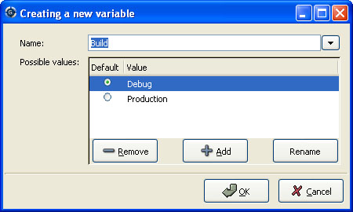
There are two main areas in this dialog: in the top line, you specify the name of the variable. This name is used for two purposes:
If you click on the arrow on the right of this name area, GPS will display the list of all the environment variables that are currently defined. However, you don't need to pick the name of an existing variable, neither must the variable exist when GPS is started.
The second part of this dialog is the list of authorized value for this variable. Any other value will generate an error reported by GPS, and the project won't be loaded as a result.
One of these values is the default value (the one whose button in the Default column is selected). This means that if the environment variable doesn't exist when GPS is started, GPS will behave as if it did exist with this default value.
The list of possible values can be edited through the Remove,
Add and Rename buttons, although you can also simply
click on the value itself to change it.
| [ < ] | [ > ] | [ << ] | [ Up ] | [ >> ] | [Top] | [Contents] | [Index] | [ ? ] |
If at least one configuration variable is defined in your project, the scenario view will contain something similar to:
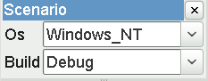
This screen shot shows two configuration variables, named Build
and OS, with their current value (resp. Debug and
Unix).
You can easily change the current value of any of these variables by clicking on the arrow on the right of the value. This will display a pop-up window with the list of possible values, from which you select the one you wish to use.
As soon as a new value is selected, GPS will recompute the project
explorer (in case source directories, object directories or list
of source files have changed). A number of things will also be updated
(like the list of executables in the Compile, Run and
Debug menus).
Currently, GPS will not recompute the contents of the various browsers (call graph, dependencies, …) for this updated project. This would be too expensive to do every time the value changes, and therefore you need to explicitly request an update.
You can change the list of possible values for a configuration variable at any time by clicking on the button to the far left of the variable's name. This will pop up the same dialog that is used to create new variables
Removing a variable is done by clicking on the button immediately to the left of the variable's name. GPS will then display a confirmation dialog.
If you confirm that you want to delete the variable, GPS will simply remove the variable, and from now on act as if the variable always had the value it had when it was deleted.
| [ < ] | [ > ] | [ << ] | [ Up ] | [ >> ] | [Top] | [Contents] | [Index] | [ ? ] |
| [ < ] | [ > ] | [ << ] | [ Up ] | [ >> ] | [Top] | [Contents] | [Index] | [ ? ] |
The project files were designed to support big projects, with several hundreds or thousands of source files. In such contexts, one developer will generally work on a subset of the sources. It is also not rare for such a project to take several hours to fully compile. Most developers therefore do not need to have the full copy of the project compiled on their own machine or personal disk space.
However, it is still useful to be able to access other source files of the application, for instance to find out whether a subprogram can be changed and where it is currently called.
Such a setup can be achieved through extending projects. These are special types of projects that inherit most of their attributes and source files from another project, and can have, in their source directories, some source files that hide/replace those inherited from the original project.
When compiling such projects, the compiler will put the newly created project files in the extending project's directory, and will leave the original untouched. As a result, the original project can be shared read-only among several developers (for instance, it is usual for this original project to be the result of a nightly build of the application).
| [ < ] | [ > ] | [ << ] | [ Up ] | [ >> ] | [Top] | [Contents] | [Index] | [ ? ] |
This project wizard allows you to easily create extending projects. You should select an empty directory (which will be created automatically if needed), as well as a list of source files you want to work on initially. New files can also be added later.
As a result, GPS will copy the selected source files to the new directory (if you so decided), and create a number of project files there. It will then load a new project, which has the same properties as the previous one, except that some files are found transparently in the new directory, and object files resulting from the compilation are create into that directory as opposed to the object directory of the original project.
| [ < ] | [ > ] | [ << ] | [ Up ] | [ >> ] | [Top] | [Contents] | [Index] | [ ? ] |
Once you have loaded an extending project in GPS, things work mostly
transparently. If you open a file through the File->Open From Project
dialog, the files found in the local directory of your extending project
will be picked up first.
The build actions will create object files in the extending project's directory, leaving the original project untouched.
It might happen that you want to start working on a source file that you had not added in the extending project when it was created. You can of course edit the file found in the original project, provided you have write access to it. However, it is generally better to edit it in the context of the extending project, so that the original project can be shared among developers.
This can be done by clicking on the file in the Project View, then
selecting the menu Add To Extending Project. This will popup a
dialog asking whether you want GPS to copy the file to the extending
project's directory for you. GPS might also create some new project files
in that directory if necessary, and automatically reload the project as
needed. From then on, if you use the menu File->Open From Project,
GPS will first see the file from the extending project.
Note that open editors will still be editing the same file they were before, so you should open the new file if needed.
| [ < ] | [ > ] | [ << ] | [ Up ] | [ >> ] | [Top] | [Contents] | [Index] | [ ? ] |
The project explorer, as mentioned in the general description of the GPS window, is one of the explorers found by default on the left of the window. It shows in a tree structure the project hierarchy, along with all the source files belonging to the project, and the entities declared in the source files.
It is worth noting that the explorer provides a tree representation of the project hierarchy. If a project is imported by multiple other projects in the hierarchy, then this project will appear multiple times in the explorer.
Likewise, if you have edited the project manually and have used the
limited with construct to have cycles in the project
dependencies, the cycle will expand infinitely. For instance, if
project `a' imports project `b', which in turns imports
project `a' through a limited with clause, then expanding
the node for `a' will show `b'. In turn, expanding the node
for `b' will show a node for `a', and so on.
The contextual menu in this explorer provides a number of items to modify the project hierarchy (what each project imports), as well as to visualize and modify the attributes for each projects (compilation switches, naming scheme, …)
The following entries are available in the contextual menu:
Show Projects Imported by...This item will open a new window in GPS, the project browser, which displays graphically the relationships between each project in the hierarchy.
Save The Project...This item can be selected to save a single project in the hierarchy
after it was modified. Modified but unsaved projects in the hierarchy
have a special icon (a pen mark is drawn on top of the
standard icon). If you would rather save all the modified projects in
a single step, use the menu bar item Project->Save All.
Project/PropertiesThis item will open a new dialog, and give access to all the attributes of the project: tool switches, naming schemes, source directories, … See section The Project Properties Editor.
Project/Edit source fileThis menu will load the project file into an editor, so that you can manually edit it. This should be used if you need to access some features of the project files that are not accessible graphically (renames statements, variables, …)
Project/Dependencies...This opens the dependencies editor (see section The Project Dependencies Editor).
Add Configuration VariableThis menu item should be used to add new configuration variables, as described in Scenarios and Configuration Variables.
BuildThis menu offers the submenu "Clean" which remove all object files and other compilation artifacts associated to the current project.
Any time one or several projects are modified, the contents of the explorer is automatically refreshed. No project is automatically saved. This provides a simple way to temporarily test new values for the project attributes. Unsaved modified projects are shown with a special icon in the project explorer, displaying a pen mark on top of the standard icon:

| [ < ] | [ > ] | [ << ] | [ Up ] | [ >> ] | [Top] | [Contents] | [Index] | [ ? ] |
The project files should generally be considered as part of the sources, and thus be put under control of a version control system. As such, you might want to prevent accidental editing of the project files, either by you or some other person using the same GPS installation.
The main thing to do to prevent such accidental edition is to change the write permissions on the project files themselves. On Unix systems, you could also change the owner of the file. When GPS cannot write a project file, it will report an error to the user.
However, the above doesn't prevent a user from trying to do some modifications at the GUI level, since the error message only occurs when trying to save the project (this is by design, so that temporary modification can be done in memory).
You can disable all the project editing related menus in GPS by adding special startup switches. The recommended way is to create a small batch script that spawns GPS with these switches. You should use the following command line:
gps --traceoff=MODULE.PROJECT_VIEWER --traceoff=MODULE.PROJECT_PROPERTIES |
What these do it prevent the loading of the two GPS modules that are responsible for project edition.
| [ < ] | [ > ] | [ << ] | [ Up ] | [ >> ] | [Top] | [Contents] | [Index] | [ ? ] |
The menu bar item Project contains several commands that
generally act on the whole project hierarchy. If you only want to act
on a single project, use the contextual menu in the project explorer.
Some of these menus apply to the currently selected project. This notion depends on what window is currently active in GPS: if it is the project explorer, the selected project is either the selected node (if it is a project), or its parent project (for a file, directory, …). If the currently active window is an editor, the selected project is the one that contains the file.
In all cases, if there is no currently selected project, the menu will apply to the root project of the hierarchy.
These commands are:
NewThis menu will open the project wizard (The Project Wizard), so
that you can create new project. On exit, the wizard asks whether the
newly created project should be loaded. If you select Yes, the new
project will replace the currently loaded project hierarchy.
You will get asked what information you would like to create the project from. In particular, you can create a set of project files from existing Ada sources.
OpenThis menu opens a file selection dialog, so that any existing project can be loaded into GPS. The newly loaded project replaces the currently loaded project hierarchy. GPS works on a single project hierarchy at a time.
RecentThis menu can be used to easily switch between the last projects that were loaded in GPS.
Edit Project PropertiesThis menu applies to the currently selected project, and will open the project properties dialog for this project.
Save AllThis will save all the modified projects in the hierarchy.
Edit File SwitchesThis menu applies to the currently selected project. This will open a new window in GPS, listing all the source files for this project, along with the switches that will be used to compile them, See section The Switches Editor.
Reload ProjectReload the project from the disk, to take into account modifications done outside of GPS. In particular, it will take into account new files added externally to the source directories. This isn't needed for modifications made through GPS.
Project ViewOpen (or raise if it is already open) the project explorer on the left side of the GPS window.
| [ < ] | [ > ] | [ << ] | [ Up ] | [ >> ] | [Top] | [Contents] | [Index] | [ ? ] |
The project wizard allows you to create in a few steps a new project file. It has a number of pages, each dedicated to editing a specific set of attributes for the project.
The typical way to access this wizard is through the
Project->New... menu.
The project wizard is also launched when a new dependency is created between two projects, through the contextual menu in the project explorer.
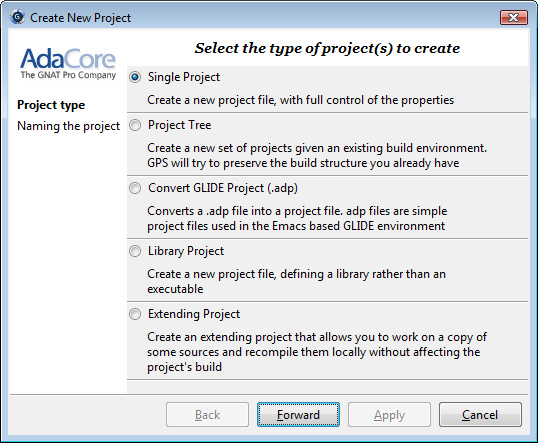
The wizard gives access to the following list of pages:
| [ < ] | [ > ] | [ << ] | [ Up ] | [ >> ] | [Top] | [Contents] | [Index] | [ ? ] |
Several types of project wizards are provided in GPS. Depending on the information you have or your current setup, you will choose one or the other.
This is likely the wizard you will use most often. It creates a project file from scratch, and asks you for the location of source directories, the object directory,... The rest of this chapter describes this wizard in more details
This wizard will attempt to create a set of one or more project files to represent your current build environment. It will analyze what your sources are, where the corresponding object files are, and will try and find some possible setup for the project files (remember that a given `.gpr' project file can be associated with a single object directory.
This wizard might not work in all cases, but is worth a try to get you started if you already have an existing set of sources
This wizard will help you convert a `.adp' project file that is used by the GLIDE environment. The same restrictions apply as above, except that the list of source directories, object directories and tool switches are read directly from that file.
This specialized wizard is similar to the Single Project wizard, except it
adds one extra page, the Library page. The output of the compilation of this
project is a library (shared or static), as opposed to an executable in the
case of Single Project.
This specialized wizard allows you to easily create extending projects (see section Extending Projects).
| [ < ] | [ > ] | [ << ] | [ Up ] | [ >> ] | [Top] | [Contents] | [Index] | [ ? ] |
This is the first page displayed by any of the wizard.
You must enter the name and location of the project to create. This
name must be a valid Ada identifier (i.e. start with a letter,
optionally followed by a series of digits, letters or
underscores). Spaces are not allowed. Likewise, reserved Ada keywords
must be avoided. If the name is invalid, GPS will display an error
message when you press the Forward button.
Child projects can be created from this dialog. These are project whose
name is of the form Parent.Child. GPS will automatically generate
the dependency to the parent project so as to make the child project
valid.
In this page, you should also select what languages the source files
in this project are written in. Currently supported languages are Ada,
C and C++. Multiple languages can be used for a single
project.
The last part of this page is used to indicate how the path should be stored in the generated project file. Most of the time, this setting will have no impact on your work. However, if you wish to edit the project files by hand, or be able to duplicate a project hierarchy to another location on your disk, it might be useful to indicate that paths should be stored as relative paths (they will be relative to the location of the project file).
| [ < ] | [ > ] | [ << ] | [ Up ] | [ >> ] | [Top] | [Contents] | [Index] | [ ? ] |
This page is used to select the programming languages used for the
sources of this project. By default, only Ada is selected.
New languages can be added to this list by using XML files, see the
section on customizing GPS (see section Adding support for new languages).
| [ < ] | [ > ] | [ << ] | [ Up ] | [ >> ] | [Top] | [Contents] | [Index] | [ ? ] |
The second page in the project wizard allows you to select which Version Control system is to be used for the source files of this project.
GPS doesn't attempt to automatically guess what it should use, so you must specify it if you want the VCS operations to be available to you.
The two actions Log checker and File checker are the
name and location of programs to be run just prior an actual commit of
the files in the Version Control System. These should be used for
instance if you wish to enforce style checks before a file is actually
made available to other developers in your team.
If left blank, no program will be run.
| [ < ] | [ > ] | [ << ] | [ Up ] | [ >> ] | [Top] | [Contents] | [Index] | [ ? ] |
This page lists and edits the list of source directories for the project. Any number of source directory can be used (the default is to use the directory which contains the project file, as specified in the first page of the wizard).
If you do not specify any source directory, no source file will be associated with the project, since GPS wouldn't know where to look for them.
To add source directories to the project, select a directory in the top frame, and click on the down arrow. This will add the directory to the bottom frame, which contains the current list of source directories.
You can also add a directory and all its subdirectories recursively by using the contextual menu in the top frame. This contextual menu also provides an entry to create new directories, if needed.
To remove source directories from the project, select the directory in the bottom frame, and click on the up arrow, or use the contextual menu.
All the files in these directories that match one of the language supported by the project are automatically associated with that project.
The relative sizes of the top and bottom frame can be changed by clicking on the separation line between the two frames and dragging the line up or down.
| [ < ] | [ > ] | [ << ] | [ Up ] | [ >> ] | [Top] | [Contents] | [Index] | [ ? ] |
The object directory is the location where the files resulting from the compilation of sources (e.g. `.o' files) are placed. One object directory is associated for each project.
The exec directory is the location where the executables are put. By default, this is the same directory as the object directory.
| [ < ] | [ > ] | [ << ] | [ Up ] | [ >> ] | [Top] | [Contents] | [Index] | [ ? ] |
The main units of a project are the files that should be compiled and linked to obtain executables.
Typically, for C applications, these are the files that contain the
main() function. For Ada applications, these are the files that
contain the main subprogram each partition in the project.
These files are treated specially by GPS. Some sub-menus of
Build and Debug will have predefined entries for the
main units, which makes it more convenient to compile and link your
executables.
To add main units click on the Add button. This opens a file
selection dialog. No check is currently done that the selected file
belongs to the project, but GPS will complain later if it doesn't.
When compiled, each main unit will generate an executable, whose name is visible in the second column in this page. If you are using a recent enough version of GNAT (3.16 or more recent), you can change the name of this executable by clicking in the second column and changing the name interactively.
| [ < ] | [ > ] | [ << ] | [ Up ] | [ >> ] | [Top] | [Contents] | [Index] | [ ? ] |
This page allows you to configure your project so that the output of its compilation is a library (shared or static), as opposed to an executable or a simple set of objet files. This library can then be linked with other executables (and will be automatically if the project is imported by another one.
You need to define the attributes in the top box to transform your project into a library project. See the tooltips that appear when you leave your mouse on top of the label to the left of each field.
If you define any of the attributes in the Standalone Library box, you will compile a standalone library. This is a library that takes care of its elaboration by itself, instead of relying on its caller to elaborate it as is standard in Ada. You also have more control over what files make up the public interface to the library, and what files are private to the library and invisible from the outside.
| [ < ] | [ > ] | [ << ] | [ Up ] | [ >> ] | [Top] | [Contents] | [Index] | [ ? ] |
A naming scheme indicates the file naming conventions used in the different languages supported by a given project. For example, all `.adb' files are Ada files, all `.c' files are C files.
GPS is very flexible in this respect, and allows you to specify the
default extension for the files in a given programming language. GPS makes a
distinction between spec (or header) files, which generally contain
no executable code, only declarations, and body files which contain
the actual code. For languages other than Ada, this header file is
used rather than the body file when you select Go To
Declaration in the contextual menu of editors.
In a language like Ada, the distinction between spec and body is part of the definition of the language itself, and you should be sure to specify the appropriate extensions.
The default naming scheme for Ada is GNAT's naming scheme (`.ads' for specs and `.adb' for bodies). In addition, a number of predefined naming schemes for other compilers are available in the first combo box on the page. You can also create your own customized scheme by entering a free text in the text entries.
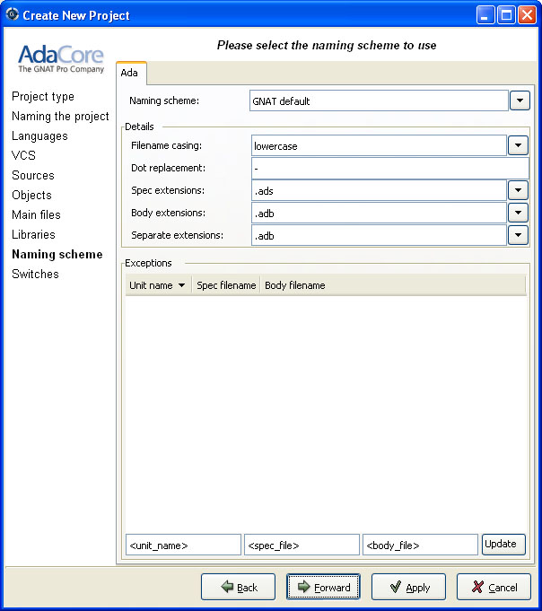
For all languages, GPS accepts exceptions to this standard naming scheme. For instance, this let you specify that in addition to using `.adb' for Ada body files, the file `foo.ada' should also be considered as an Ada file.
The list of exceptions is displayed in the bottom list of the naming scheme editor. To remove entries from this list, select the line you want to remove, and then press the Del key. The contents of the lines can be edited interactively, by double-clicking on the line and column you want to edit.
To add new entries to this list, use the fields at the bottom of the window, and press the update button.
| [ < ] | [ > ] | [ << ] | [ Up ] | [ >> ] | [Top] | [Contents] | [Index] | [ ? ] |
The last page of the project wizard is used to select the default switches to be used by the various tools that GPS calls (compiler, linker, binder, pretty printer, …).

This page appears as a notebook, where each page is associated with a specific tool. All these pages have the same structure:
The top part of each page contains a set of buttons, combo boxes, entry fields, … which give fast and intuitive access to the most commonly used switches for that tool.
The bottom part is an editable entry field, where you can directly type the switches. This makes it easier to move from an older setup (e.g. Makefile, script) to GPS, by copy-pasting switches.
The two parts of the pages are kept synchronized at any time: clicking on a button will edit the entry field to show the new switch; adding a new switch by hand in the entry field will activate the corresponding button if there is one.
Any switch can be added to the entry field, even if there is no corresponding button. In this case, GPS will simply forward it to the tool when it is called, without trying to represent it graphically.
| [ < ] | [ > ] | [ << ] | [ Up ] | [ >> ] | [Top] | [Contents] | [Index] | [ ? ] |
You can edit the dependencies between projects through the contextual
menu Project->Dependencies... in the Project Explorer.
This view makes it easy to indicate that your project depends on external libraries, or other modules in your source code. For instance, you can give access to the GtkAda graphical library in your project by adding a project dependency to gtkada.gpr, assuming GtkAda has been installed in your system.
The dependencies also determine in what order your application is built. When you compile a project, the builder will first make sure that the projects it depends on are up-to-date, and otherwise recompile them.
When you select that contextual menu, GPS will open a dialog that allows you to add or remove dependencies to your project. New dependencies are added by selecting a project file name from one of several sources:
These are the projects that are found in one of the directories referenced
in the ADA_PROJECT_PATH environment variable. Typically, these
include third party libraries, such as GtkAda, win32ada, …
In all these cases, you will generally be able to choose whether this should be a simple dependency, or a limited dependency. The latter allows you to have mutually dependent projects (A depends on B, which in turns depends on A even indirectly), although you cannot reference the attribute of such a project in the current project (for instance to indicate that the compiler switches to use for A are the same as for B - you need to duplicate that information).
In some cases, GPS will force a limited dependency on you to avoid loops in the dependencies that would make the project tree illegal.
| [ < ] | [ > ] | [ << ] | [ Up ] | [ >> ] | [Top] | [Contents] | [Index] | [ ? ] |
The project properties editor gives you access at any time to the properties
of your project. It is accessible through the menu
Project->Edit Project Properties, and through the contextual menu
Edit project properties on any project item, e.g. from the Project
View or the Project Browser.
If there was an error loading the project (invalid syntax, non-existing directories, …), a warning dialog is displayed when you select the menu. This reminds you that the project might be only partially loaded, and editing it might result in the loss of data. In such cases, it is recommended that you edit the project file manually, which you can do directly from the pop-up dialog.
Fix the project file as you would for any text file, and then reload
it manually (through the Project->Open... or
Project->Recent menus.

The project properties editor is divided in three parts:
The contents of this editor are very similar to that of the project
wizard (see section The Project Wizard). In fact, all pages but the
General page are exactly the same, and you should therefore
read the description for these in the project wizard chapter.
The general page gives access to more attributes than the general page of the project wizard does. In addition, you can select the name of the external tools that GPS uses (such as compilers, debugger, …).
See also Working in a Cross Environment for more info on the
Cross environment attributes.
This area, in the top-right corner of the properties editor, contains a list of all the projects in the hierarchy. The value in the attributes editor is applied to all the selected projects in this selector. You cannot unselect the project for which you activated the contextual menu.
Clicking on the right title bar (Project) of this selector will sort the
projects in ascending or descending order.
Clicking on the left title bar (untitled) will select or unselect all the projects.
This selector has two different possible presentations, chosen by the toggle button on top: you can either get a sorted list of all the projects, each one appearing only once. Or you can have the same project hierarchy as displayed in the project explorer.
This area, in the bottom-right corner of the properties editor, lists all the scenario variables declared for the project hierarchy. By selecting some or all of their values, you can chose to which scenario the modifications in the attributes editor apply.
Clicking on the left title bar (untitled, on the left of the Scenario
label) will select or unselect all values of all variables.
To select all values of a given variable, click on the corresponding check button.
| [ < ] | [ > ] | [ << ] | [ Up ] | [ >> ] | [Top] | [Contents] | [Index] | [ ? ] |
The switches editor, available through the menu Project->Edit
Switches, lists all the source files associated with the selected
project.
For each file, the compiler switches are listed. These switches are displayed in gray if they are the default switches defined at the project level (see section The Project Properties Editor). They are defined in black if they are specific to a given file.
Double-clicking in the switches column allows you to edit the switches
for a specific file. It is possible to edit the switches for multiple
files at the same time by selecting them before displaying the contextual
menu (Edit switches for all selected files).
When you double-click in one of the columns that contain the switches, a new dialog is opened that allows you to edit the switches specific to the selected files.
This dialog has a button titled Revert. Clicking on this button
will cancel any file-specific switch, and revert to the default
switches defined at the project level.

| [ < ] | [ > ] | [ << ] | [ Up ] | [ >> ] | [Top] | [Contents] | [Index] | [ ? ] |
The project graph is a special kind of browser (see section Source Browsing). It shows the dependencies between all the project in the project hierarchy. Two items in this browser will be linked if one of them imports the other.
It is accessed through the contextual menu in the project explorer, by
selecting the Show projects imported by... item, when
right-clicking on a project node.
Clicking on the left arrow in the title bar of the items will display all the projects that import that project. Similarly, clicking on the right arrow will display all the projects that are imported by that project.
The contextual menu obtained by right-clicking on a project item contains several items. Most of them are added by the project editor, and gives direct access to editing the properties of the project, adding dependencies… See section The Project Explorer.

Some new items are added to the menu:
Locate in explorerSelecting this item will switch the focus to the project explorer, and highlight the first project node found that matches the project in the browser item. This is a convenient way to get information like the list of directories or source files for that project.
Show dependenciesThis item plays the same role as the right arrow in the title bar, and display all the projects in the hierarchy that are imported directly by the selected project
Show recursive dependenciesThis item will display all the dependencies recursively for the project (i.e. the projects it imports directly, the projects that are imported by them, and so on).
Show projects depending onThis item plays the same role as the left arrow in the title bar, and displays all the projects that directly import the selected project.
| [ < ] | [ > ] | [ << ] | [ Up ] | [ >> ] | [Top] | [Contents] | [Index] | [ ? ] |
GPS provides extensive search capabilities among its different elements. For instance, it is possible to search in the currently edited source file, or in all the source files belonging to the project, even those that are not currently open. It is also possible to search in the project explorer (on the left side of the main GPS window),…
All these search contexts are grouped into a single graphical window,
that you can open either through the menu Navigate->Find/Replace..., or
the shortcut Ctrl-F.
By default, the search window is floating, ie appears as a dialog on top of
GPS. You can choose to put it inside the multiple document interface
permanently for easier access. This can be done by selecting the menu
Window->Floating, and then drag-and-dropping the search window in a
new location if you wish (for instance above the Project View).
Selecting either of these two options will pop up a dialog on the screen, similar to the following:

On this screen shot, you can see three entry fields:
Search forThis is the location where you type the string or pattern you are
looking for. The search widget supports two modes, either fixed strings
or regular expressions. You can commute between the two modes by
either clicking on the Options button and selecting the
appropriate check box, or by opening the combo box (click on the arrow
on the right of the entry field).
In this combo box, a number of predefined patterns are provided. The top two ones are empty patterns, that automatically set up the appropriate fixed strings/regular expression mode. The other regular expressions are language-specific, and will match patterns like Ada type definition, C++ method declaration,…
Replace withThis field should contain the string that will replace the occurrences of the pattern defined above. The combo box provides a history of previously used replacement strings.
Look inThis field defines the context in which the search should occur. GPS will automatically select the most appropriate context when you open the search dialog, depending on which component currently has the focus. You can of course change the context to another one if needed.
Clicking on the arrow on the right will display the list of all possible contexts. This list includes:
Project ExplorerSearch in the project explorer. An extra Scope box will be displayed
where you can specify the scope of your search, which can be a set of:
Projects, Directories, Files, Entities. The search in entities
may take a long time, search each file is parsed during the search.
Open FilesSearch in all the files that are currently open in the source editor. The
Scope entry is described in the Files... section below.
Files...Search in a given set of files. An extra Files box will be displayed
where you can specify the files by using standard shell (Unix or Windows)
regular expression, e.g. *.ad? for all files ending with .ad and any
trailing character. The directory specified where the search starts, and
the Recursive search button whether sub directories will be searched
as well.
The Scope entry is used to restrict the search to a set of language constructs, e.g. to avoid matching on comments when you are only interested in actual code, or to only search strings and comments, and ignore the code.
Files From ProjectSearch in all the files from the project, including files from project
dependencies. The Scope entry is described in the Files...
section above.
Current FileSearch in the current source editor.
The Scope entry is described in the Files... section above.
Project BrowserSearch in the project browser (see section The Project Browser).
The second part of the window is a row of buttons, to start the search (or continue to the next occurrence), and to display the options.

There are five check boxes in this options box.
"Regexp"This button commutes between fixed string patterns and regular
expressions. You can also commute between these two modes
by selecting the arrow on the right of the Search for: field.
The grammar followed by the regular expressions is similar to the Perl and
Python regular expressions grammar, and is documented in the GNAT run time file
`g-regpat.ads'. To open it from GPS, you can use the open from project
dialog (File->Open From Project...) and type g-regpat.ads. See
Open From Project for more information on this dialog.
"Case Sensitive"By default, patterns are case insensitive (upper-case letters and lower-case letters are considered as equivalent). You can change this behavior by clicking on this check box.
"Whole Word"If activated, this check box will force the search engine to ignore substrings. "sensitive" will no longer match "insensitive".
Select on MatchWhen this button is selected, the focus is given to the editor that contains the match, so that you can start editing the text immediatly. If the button is not selected, the focus is left on the search window, so that you can press Enter to search for the next occurrence.
Close on MatchThis button only appears if the search window is floating. If this button is enabled, the search window will be automatically closed when an occurrence of the search string is found.
Pressing the Find / Previous buttons performs an interactive
search.
It stops as soon as one occurrence of the pattern is found.
search. Once a first occurrence has been found, the Find button is
renamed to Next.
You then have to press the Next button (or the equivalent shortcut
Ctrl-N) to go to the next occurrence.
If you use the Find all button, the search widget will start
searching for all occurrences right away, and put the results in a new
window called Locations, See section The Locations Tree.
The Replace and Replace & Find buttons are grayed out as long as
no occurence of the pattern is found. In order to enable them, you have to
start a search, e.g. by pressing the Find button. Pressing Replace
will replace the current occurence (and therefore the two buttons will be
grayed out), and Replace & Find will replace the occurence and then
jump to the next one, if any. If you don't want to replace the current
occurence, you can jump directly to the next one by pressing Next.
The Repl all button will replace all the occurences found.
As most GPS components, the search window is under control of the multiple document interface, and can thus be integrated into the main GPS window instead of being an external window.
To force this behavior, open the menu Window, select
Search in the list at the bottom of the menu, and then select
either Floating or Docked.
If you save the desktop (File->Save More->Desktop, GPS will
automatically reopen the search dialog in its new place when it is
started next time.
| [ < ] | [ > ] | [ << ] | [ Up ] | [ >> ] | [Top] | [Contents] | [Index] | [ ? ] |
This chapter describes how to compile files, build executables and run
them. Most capabilities can be accessed through the Build menu item,
or through the Build and Run contextual menu items, as
described in the following section.
When compiler messages are detected by GPS, an entry is added in the Locations tree, allowing you to easily navigate through the compiler messages (see The Locations Tree), or even to automatically correct some errors or warnings (see Code Fixing).
| 9.1 The Build Menu |
| [ < ] | [ > ] | [ << ] | [ Up ] | [ >> ] | [Top] | [Contents] | [Index] | [ ? ] |
The build menu gives access to capabilities related to checking, parsing and compiling files, as well as creating and running executables.
Check the syntax of the current source file. Display an error message in the Messages window if no file is currently selected.
Compile the current file. Display an error message in the Messages window if no file is selected.
If errors or warnings occur during the compilation, the corresponding locations will appear in the Locations Tree. If the corresponding Preference is set, the source lines will be highlighted in the editors (see The Preferences Dialog). To remove the highlighting on these lines, remove the files from the Locations Tree.
Compile all source files defined in the currently selected project, or by default the top level project.
Build and link all main units defined in your project. If no main unit is specified in your project, build all files defined in your project and subprojects recursively. For a library project file, compile sources and recreate the library when needed.
Consider the currently selected file as a main file, and build it.
Display a text entry where you can enter any external command. This menu is very useful when you already have existing build scripts, make files, … and want to invoke them from GPS.
Remove all object files and other compilation artifacts associated to the root project. It does not clean objects from other related projects.
Remove all object files and other compilation artifacts associated to all projects related to the current one. It allows to restart a complete build from scratch.
Recompute the cross-reference information for C and C++ source files. See section Support for Cross-References.
Load all the cross-reference information in memory. This menu is generally not needed, See section Support for Cross-References.
For each main source file defined in your top level project, an entry is listed to run the executable associated with this main file. Running an application will first open a dialog where you can specify command line arguments to your application, if needed. You can also specify whether the application should be run within GPS (the default), or using an external terminal.
When running an application from GPS, a new execution window is added in the bottom area where input and output of the application is handled. This window is never closed automatically, even when the application terminates, so that you can still have access to the application's output. If you explicitly close an execution window while an application is still running, a dialog window will be displayed to confirm whether the application should be terminated.
When using an external terminal, GPS launches an external terminal utility that will take care of the execution and input/output of your application. This external utility can be configured in the preferences dialog (External Commands->Execute command).
Similarly, the Run contextual menu accessible from a project
entity contains the same entries.
Similar to the entry above, except that you can run any arbitrary executable.
The Tools->Interrupt menu can be used to interrupt the last compilation
or run command. Once you have interrupted that last operation, you can
interrupt the previous one by selecting the same menu again.
However, the easiest way to interrupt a specific operation, no matter if it was
started last or not, is to use the Task Manager, through the
Tools->Views->Tasks menu. It will show one line per running process,
and right-clicking on any of these lines gives the possibility to interrupt
that process.
| [ < ] | [ > ] | [ << ] | [ Up ] | [ >> ] | [Top] | [Contents] | [Index] | [ ? ] |
| 10.1 General Issues | ||
| 10.2 Call Graph | ||
| 10.3 Dependency Browser | ||
| 10.4 Entity Browser |
| [ < ] | [ > ] | [ << ] | [ Up ] | [ >> ] | [Top] | [Contents] | [Index] | [ ? ] |
GPS contains several kinds of browsers, that have a common set of basic functionalities. There are currently four such browsers: the project browser (see section The Project Browser), the call graph (see section Call Graph), the dependency browser (see section Dependency Browser) and the entity browser (see section Entity Browser).
All these browsers are interactive viewers. They contain a number of items, whose visual representation depends on the type of information displayed in the browser (they can be projects, files, entities, …).
In addition, the following capabilities are provided in all browsers:
When a lot of items are displayed in the canvas, the currently visible area might be too small to display all of them. In this case, scrollbars will be added on the sides, so that you can make other items visible. Scrolling can also be done with the arrow keys.
A basic layout algorithm is used to organize the items. This algorithm is layer oriented: items with no parents are put in the first layer, then their direct children are put in the second layer, and so on. Depending on the type of browser, these layers are organized either vertically or horizontally. This algorithm tries to preserve as much as possible the positions of the items that were moved interactively.
The refresh layout menu item in the background contextual menu
can be used to recompute the layout of items at any time, even for
items that were previously moved interactively.
Items can be moved interactively with the mouse. Click and drag the item by clicking on its title bar. The links will still be displayed during the move, so that you can check whether it overlaps any other item. If you are trying to move the item outside of the visible part of the browser, the latter will be scrolled.
Items can be linked together, and will remain connected when items are moved. Different types of links exist, see the description of the various browsers.
By default, links are displayed as straight lines. You can choose to
use orthogonal links instead, which are displayed only with vertical
or horizontal lines. Select the entry orthogonal links in the
background contextual menu.
The entire contents of a browser can be exported as a PNG image
using the entry Export to PNG... in the background contextual menu.
It can also be exported in SVG format using the Export to SVG...
entry.
Several different zoom levels are available. The contextual menu in
the background of the browser contains three entries: zoom in,
zoom out and zoom. The latter is used to select directly
the zoom level you want.
This zooming capability is generally useful when lots of items are displayed in the browser, to get a more general view of the layout and the relationships between the items.
Items can be selected by clicking inside them. Multiple items can be selected by holding the control key while clicking in the item. Alternatively, you can click and drag the mouse inside the background of the browser. All the items found in the selection rectangle when the mouse is released will be selected.
Selected items are drawn with a different title bar color. All items linked to them also use a different title bar color, as well as the links. This is the most convenient way to understand the relationships between items when lots of them are present in the browser.
Some of the items will contain hyper links, displayed in blue by default, and underlined. Clicking on these will generally display new items.
Two types of contextual menus are available in the browsers: the background contextual menu is available by right-clicking in the background area (i.e. outside of any item). As described above, it contains entries for the zooming, selecting of orthogonal links, and refresh; the second kind of contextual menu is available by right-clicking in items.
The latter menu contains various entries. Most of the entries are added by various modules in GPS (VCS module, source editor, …). In addition, each kind of browser also has some specific entries, which is described in the corresponding browser's section.
There are two common items in all item contextual menus:
Hide LinksBrowsers can become confusing if there are many items and many links. You can lighten them by selecting this menu entry. As a result, the item will remain in the canvas, but none of the links to or from it will be visible. Selecting the item will still highlight linked items, so that this information remains available.
Remove all other itemsSelecting this menu item will remove all items but the selected one.
| [ < ] | [ > ] | [ << ] | [ Up ] | [ >> ] | [Top] | [Contents] | [Index] | [ ? ] |
The call graph shows graphically the relationship between subprogram callers and callees. A link between two items indicate that one of them is calling the other.
A special handling is provided for renaming entities (in Ada): if a subprogram is a renaming of another one, both items will be displayed in the browser, with a special hashed link between the two. Since the renaming subprogram doesn't have a proper body, you will then need to ask for the subprograms called by the renamed to get the list.
In this browser, clicking on the right arrow in the title bar will display all the entities that are called by the selected item.
Clicking on the left arrow will display all the entities that call the selected item (i.e. its callers).
This browser is accessible through the contextual menu in the project explorer and source editor, by selecting one of the items:
All boxes in this browser list several information: the location of their declaration, and the list of all their references in the other entities currently displayed in the browser. If you close the box for an entity that calls them, the matching references are also hidden, to keep the contents of the browser simpler.
Browsers->Entity callsDisplay all the entities called by the selected entity. This has the same effect as clicking on the right title bar arrow if the item is already present in the call graph.
Browsers->Entity is called byDisplay all the entities called by the selected entity. This has the same effect as clicking on the left title bar arrow if the item is already present in the call graph.
The contextual menu available by right-clicking on the entities in the browser has the following new entries, in addition to the ones added by other modules of GPS.
Entity callsSame as described above.
Entity is called bySame as described above.
Go To SpecSelecting this item will open a source editor that displays the declaration of the entity.
Go To BodySelecting this item will open a source editor that displays the body of the entity.
Locate in explorerSelecting this menu entry will move the focus to the project explorer, and select the first node representing the file in which the entity is declared. This makes it easier to see which other entities are declared in the same file.
| [ < ] | [ > ] | [ << ] | [ Up ] | [ >> ] | [Top] | [Contents] | [Index] | [ ? ] |
The dependency browser shows the dependencies between source files. Each item in the browser represents one source file.

In this browser, clicking on the right arrow in the title bar will
display the list of files that the selected file depends on. A file
depend on another one if it explicitly imports it (with
statement in Ada, or #include in C/C++). Implicit dependencies
are currently not displayed in this browser, since the information is
accessible by opening the other direct dependencies.
Clicking on the left arrow in the title bar will display the list of files that depend on the selected file.
This browser is accessible through the contextual menu in the explorer and the source editor, by selecting one of the following items:
Show dependencies for fileThis has the same effect as clicking on the right arrow for a file already in the browser, and will display the direct dependencies for that file.
Show files depending on fileThis has the same effect as clicking on the left arrow for a file already in the browser, and will display the list of files that directly depend on that file.
The background contextual menu in the browser adds a few entries to the standard menu:
Open file...This menu entry will display an external dialog in which you can select the name of a file to analyze.
RefreshThis menu entry will check that all links displays in the dependency browser are still valid. If not, they are removed. The arrows in the title bar are also reset if necessary, in case new dependencies were added for the files.
The browser is not refreshed automatically, since there are lots of cases where the dependencies might change (editing source files, changing the project hierarchy or the value of the scenario variables,...)
It also recomputes the layout of the graph, and will change the current position of the boxes.
Show system filesThis menu entry indicates whether standard system files (runtime files
for instance in the case of Ada) are displayed in the browser. By
default, these files will only be displayed if you explicitly select
them through the Open file menu, or the contextual menu in the
project explorer.
Show implicit dependenciesThis menu entry indicates whether implicit dependencies should also be
displayed for the files. Implicit dependencies are files that are
required to compile the selected file, but that are not explicitly
imported through a with or #include statement. For
instance, the body of generics in Ada is an implicit dependency.
Any time one of the implicit dependencies is modified, the selected
file should be recompiled as well.
The contextual menu available by right clicking on an item also adds a number of entries:
Analyze other fileThis will open a new item in the browser, displaying the complement file for the selected one. In Ada, this would be the body if you clicked on a spec file, or the opposite. In C, it depends on the naming conventions you specified in the project properties, but you would generally go from a `.h' file to a `.c' file and back.
Show dependencies for fileThese play the same role as in the project explorer contextual menu
| [ < ] | [ > ] | [ << ] | [ Up ] | [ >> ] | [Top] | [Contents] | [Index] | [ ? ] |
The entity browser displays static information about any source entity.
The exact content of the items depend on the type of the item. For instance:
Ada record / C structThe list of fields, each as an hyper link, is displayed. Clicking on one of the fields will open a new item for the type.
Ada tagged type / C++ classThe list of attributes and methods is displayed. They are also click-able hyper-links.
SubprogramsThe list of parameters is displayed
PackagesThe list of all the entities declared in that package is displayed
and more ...
This browser is accessible through the contextual menu in the explorer and source editor, when clicking on an entity:
Browsers/Examine entity entityOpen a new item in the entity browser that displays information for the selected entity.
Most information in the items are click-able (by default, they appear as underlined blue text). Clicking on one of these hyper links will open a new item in the entity browser for the selected entity.
This browser can display the parent entities for an item. For instance, for a C++ class or Ada tagged type, this would be the types it derives from. This is accessible by clicking on the up arrow in the title bar of the item.
Likewise, children entities (for instance types that derive from the item) can be displayed by clicking on the down arrow in the title bar.
An extra button appear in the title bar for the C++ class or Ada tagged types, which toggles whether the inherited methods (or primitive operations in Ada) should be displayed. By default, only the new methods, or the ones that override an inherited one, are displayed. The parent's methods are not shown, unless you click on this title bar button.
| [ < ] | [ > ] | [ << ] | [ Up ] | [ >> ] | [Top] | [Contents] | [Index] | [ ? ] |
GPS is also a graphical front-end for text-based debuggers such as GDB. A knowledge of the basics of the underlying debugger used by GPS will help understanding how GPS works and what kind of functionalities it provides.
Please refer to the debugger-specific documentation - e.g. the GDB documentation (gdb.html) - for more details.
The integrated debugger provided by GPS is using an improved version of the GVD engine, so the functionalities between GVD and GPS are very similar. If you are familiar with GVD, you may be interested in reading Upgrading from GVD to GPS which explains the differences between the two environments.
Debugging is tightly integrated with the other components of GPS. For example, it is possible to edit files and navigate through your sources while debugging.
To start a debug session, go to the menu Debug->Initialize, and choose
either the name of your executable, if you have specified the name of
your main program(s) in the project properties, or start an empty debug
session using the <no main file> item. It is then possible to load
any file to debug, by using the menu Debug->Debug->Load File...
Note that you can create multiple debuggers by using the Initialize
menu several times: this will create a new debugger each time.
All the debugger-related actions (e.g. stepping, running) are performed on
the current debugger, which is represented by the current debugger console.
To switch between debuggers, simply select its corresponding console.
After the debugger has been initialized, you have access to two new windows:
the data window (in the top of the working area), and the debugger console
(in a new page, after the Messages and Shell windows).
All the menus under Debugger
are now also accessible, and you also have access to additional contextual
menus, in particular in the source editor where it is possible to easily
display variables, set breakpoints, and get automatic display
(via tool tips) of object values.
When you want to quit the debugger without quitting GPS, go to the menu
Debug->Terminate Current, that will terminate your current debug
session, or the menu Debug->Terminate that will terminate all your
debug sessions at once.
| [ < ] | [ > ] | [ << ] | [ Up ] | [ >> ] | [Top] | [Contents] | [Index] | [ ? ] |
The Debug entry in the menu bar provides operations that act at a
global level. Key shortcuts are available for the most common operations, and
are displayed in the menus themselves.
Here is a detailed list of the menu items that can be found in the menu bar:
Opens a dialog window allowing you to specify the arguments to pass to the program to be debugged, and whether this program should be stopped at the beginning of the main subprogram. If you confirm by clicking on the OK button, the program will be launched according to the arguments entered.
Execute the program until it reaches a different source line.
Execute the program for one machine instruction only.
Execute the program until it reaches the next source line, stepping over subroutine calls.
Execute the program until it reaches the next machine instruction, stepping over subroutine calls.
Continue execution until selected stack frame returns.
Continue execution of the program being debugged.
Asynchronously interrupt the program being debugged. Note that depending on the state of the program, you may stop it in low-level system code that does not have debug information, or in some cases, not even a coherent state. Use of breakpoints is preferable to interrupting programs. Interrupting programs is nevertheless indispensable in some situations, for example when the program appears to be in an infinite (or at least very time-consuming) loop.
Terminate the current debug session, by closing the data window and the debugger
console, as well as terminating the underlying debugger (e.g gdb) used
to handle the low level debugging.
Terminate all your debug sessions. Same as Terminate Current if there
is only one debugger open.
| [ < ] | [ > ] | [ << ] | [ Up ] | [ >> ] | [Top] | [Contents] | [Index] | [ ? ] |
Opens a simple dialog to connect to a remote board. This option is only relevant to cross debuggers.
Opens a file selection dialog that allows you to choose a program to debug. The program to debug is either an executable for native debugging, or a partially linked module for cross environments (e.g VxWorks).
Add the symbols from a given file/module. This corresponds to the gdb command add-symbol-file. This menu is particularly useful under VxWorks targets, where the modules can be loaded independently of the debugger. For instance, if a module is independently loaded on the target (e.g. using windshell), it is absolutely required to use this functionality, otherwise the debugger won't work properly.
Instead of starting a program to debug, you can instead attach to an already running process. To do so, you need to specify the process id of the process you want to debug. The process might be busy in an infinite loop, or waiting for event processing. Note that as for core files, you need to specify an executable before attaching to a process.
Detaches the currently debugged process from the underlying debugger. This means that the executable will continue to run independently. You can use the Attach To Process menu later to re-attach to this process.
This will open a file selection dialog that allows you to debug a core file instead of debugging a running process. Note that you must first specify an executable to debug before loading a core file.
Kills the process being debugged.
| [ < ] | [ > ] | [ << ] | [ Up ] | [ >> ] | [Top] | [Contents] | [Index] | [ ? ] |
Note that most items in this menu need to access the underlying debugger when the process is stopped, not when it is running. This means that you first need to stop the process on a breakpoint or interrupt it, before using the following commands. Failing to do so will result in blank windows.
Displays the Data window. If this window already exists, it is raised so that it becomes visible
Displays the Call Stack window. See The Call Stack Window for more details.
Opens a new window containing the list of threads currently present in the executable as reported by the underlying debugger. For each thread, it will give information such as internal identifier, name and status. This information is language- and debugger-dependent. You should refer to the underlying debugger's documentation for more details. As indicated above, the process being debugged needs to be stopped before using this command, otherwise a blank list will be displayed.
When supported by the underlying debugger, clicking on a thread will change the context (variables, call stack, source file) displayed, allowing you to inspect the stack of the selected thread.
For GDB only, this will open a new window containing the list of Ada tasks currently present in the executable. Similarly to the thread window, you can switch to a selected task context by clicking on it, if supported by GDB. See the GDB documentation for the list of items displayed for each task.
As for the thread window, the process being debugged needs to be stopped before using this window.

For VxWorks AE only, this will open a new window containing the list of available protection domains in the target. To change to a different protection domain, simply click on it. A indicates the current protection domain.
Opens a new window displaying an assembly dump of the current code being executed. See The Assembly Window for more details.
Opens an advanced window to create and modify any kind of breakpoint, including watchpoints (see The Breakpoint Editor). For simple breakpoint creation, see the description of the source window.
Opens a memory viewer/editor. See The Memory Window for more details.
Opens a dialog with the list of commands executed in the current session. You can select any number of items in this list and replay the selection automatically.
Opens an item in the Data Window containing all the local variables for the current frame.
Opens an item in the Data Window containing the arguments for the current frame.
Opens an item in the Data Window containing the machine registers for the current frame.
Opens a small dialog letting you specify an arbitrary expression
in the Data Window. This expression can be a variable name, or a
more complex expression, following the syntax of the underlying debugger.
See the documentation of e.g gdb for more details on the syntax.
The check button Expression is a subprogram call should be enabled
if the expression is actually a debugger
command (e.g p/x var) or a procedure call in the program being
debugged (e.g call my_proc).
Refreshes all the items displayed in the Data Window.
| [ < ] | [ > ] | [ << ] | [ Up ] | [ >> ] | [Top] | [Contents] | [Index] | [ ? ] |
The call stack window gives a list of frames corresponding to the current execution stack for the current thread/task.
The bottom frame corresponds to the outermost frame where the thread is currently stopped. This frame corresponds to the first function executed by the current thread (e.g main if the main thread is in C). You can click on any frame to switch to the caller's context, this will update the display in the source window. See also the up and down buttons in the tool bar to go up and down one frame in the call stack.
The contextual menu (right mouse button) allows you to choose which information you want to display in the call stack window (via check buttons):
By default, only the subprogram name is displayed.
You can hide the call stack window by closing it, as for other windows, and
show it again using the menu Data->Call Stack.
| [ < ] | [ > ] | [ << ] | [ Up ] | [ >> ] | [Top] | [Contents] | [Index] | [ ? ] |
| [ < ] | [ > ] | [ << ] | [ Up ] | [ >> ] | [Top] | [Contents] | [Index] | [ ? ] |
The Data Window is the area in which various information about the debugged process can be displayed. This includes the value of selected variables, the current contents of the registeres, the local variables,…
This window is not open by default when you start the debugger. It will be
created automatically when needed (e.g. when using the Debug constextual menu
to display a variable). You can also force its display through the menu
Debug->Data->Data Window.
However, if you save the desktop through the menu
File->Save More->Desktop while the data window is open, it will be
automatically reopen the next time the desktop is loaded, for instance when
restarting GPS.
The contents of the data window is preserved by default whenever you close it.
Thus, if you reopen the data window either during the same debugger session,
or automatically when you start a debugger on the same executable, it will
display the same items again. This behavior is controlled by the
Preserve State on Exit preference.
The data window contains all the graphic boxes that can be accessed using the Data->Display menu items, or the data window Display Expression... contextual menu, or the source window Display contextual menu items, or finally the graph command in the debugger console.
For each of these commands, a box is displayed in the data window with the following information:
C, Ada, C++) and will
organize them accordingly.
For example, each field of a record/struct/class, or each item of an
array will be displayed separately. For each subcomponent, a thin box
is displayed to distinguish it from the other components.
A contextual menu, that takes into account the current component selected by the mouse, gives access to the following capabilities:
Closes the selected item.
Hides all subcomponents of the selected item. To select a particular field or item in a record/array, move your mouse over the name of this component, not over the box containing the values for this item.
Shows all subcomponents of the selected item.
Clones the selected component into a new, independent item.
Brings up the memory view dialog and explore memory at the address of the component.
Sets the value of a selected component. This will open an entry box where you can enter the new value of a variable/component. Note that GDB does not perform any type or range checking on the value entered.
Refreshes the value displayed in the selected item.
Shows only the value of the item.
Shows only the type of each field for the item.
Shows both the value and the type of the item.
Enables or disables the automatic refreshing of the item upon program execution (e.g step, next).
A contextual menu can be accessed in the canvas itself (point the mouse to an empty area in the canvas, and click on the right mouse button) with the following entries:
Open a small dialog letting you specify an arbitrary expression
in the Data Window. This expression can be a variable name, or a
more complex expression, following the syntax of the current language and
underlying debugger.
See the documentation of e.g gdb for more details on the syntax.
The check button Expression is a subprogram call should be enabled
if the expression is actually not an expression but rather a debugger
command (e.g p/x var) or a procedure call in the program being
debugged (e.g call my_proc).
Enables or disables alignment of items on the grid.
Enables or disables the automatic detection of shared data structures. Each time you display an item or dereference a pointer, all the items already displayed on the canvas are considered and their addresses are compared with the address of the new item to display. If they match, (for example if you tried to dereference a pointer to an object already displayed) instead of creating a new item a link will be displayed.
Redisplays the items in the data window with a bigger font
Displays the items in the data window with smaller fonts and pixmaps. This can be used when you have several items in the window and you can't see all of them at the same time (for instance if you are displaying a tree and want to clearly see its structure).
Allows you to choose the zoom level directly from a menu.
When this item is selected, all the boxes currently displayed are removed.
| [ < ] | [ > ] | [ << ] | [ Up ] | [ >> ] | [Top] | [Contents] | [Index] | [ ? ] |
| [ < ] | [ > ] | [ << ] | [ Up ] | [ >> ] | [Top] | [Contents] | [Index] | [ ? ] |
All the items on the canvas have some common behavior and can be fully manipulated with the mouse. They can be moved freely anywhere on the canvas, simply by clicking on them and then dragging the mouse. Note that if you are trying to move an item outside of the visible area of the data window, the latter will be scrolled so as to make the new position visible.
Automatic scrolling is also provided if you move the mouse while dragging an item near the borders of the data window. As long as the mouse remains close to the border and the button is pressed on the item, the data window is scrolled and the item is moved. This provides an easy way to move an item a long distance from its initial position.
| [ < ] | [ > ] | [ << ] | [ Up ] | [ >> ] | [Top] | [Contents] | [Index] | [ ? ] |
Most of the items are displayed using several colors, each conveying a special meaning. Here is the meaning assigned to all colors (note that the exact color can be changed through the preferences dialog; these are the default colors):
This is the default color used to print the value of variables or expressions.
This color is used for C pointers (or Ada access values), i.e. all the variables and fields that are memory addresses that denote some other value in memory.
You can easily dereference these (that is to say see the value pointed to) by double-clicking on the blue text itself.
This color is used for variables and fields whose value has changed since the data window was last displayed. For instance, if you display an array in the data window and then select the Next button in the tool bar, then the elements of the array whose value has just changed will appear in red.
As another example, if you choose to display the value of local variables in the data window (Display->Display Local Variables), then only the variables whose value has changed are highlighted, the others are left in black.
| [ < ] | [ > ] | [ << ] | [ Up ] | [ >> ] | [Top] | [Contents] | [Index] | [ ? ] |
Several different icons can be used in the display of items. They also convey special meanings.
This icon indicates that the debugger could not get the value of the variable or expression. There might be several reasons, for instance the variable is currently not in scope (and thus does not exist), or it might have been optimized away by the compiler. In all cases, the display will be updated as soon as the variable becomes visible again.
This icon indicates that part of a complex structure is currently hidden. Manipulating huge items in the data window (for instance if the variable is an array of hundreds of complex elements) might not be very helpful. As a result, you can shrink part of the value to save some screen space and make it easier to visualize the interesting parts of these variables.
Double-clicking on this icon will expand the hidden part, and clicking on any sub-rectangle in the display of the variable will hide that part and replace it with that icon.
See also the description of the contextual menu to automatically show or hide all the contents of an item. Note also that one alternative to hiding subcomponents is to clone them in a separate item (see the contextual menu again).
| [ < ] | [ > ] | [ << ] | [ Up ] | [ >> ] | [Top] | [Contents] | [Index] | [ ? ] |
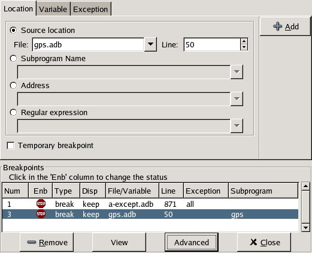
The breakpoint editor can be accessed from the menu Data->Edit Breakpoints. It allows manipulation of different kinds of breakpoints: at a source location, on a subprogram, at an executable address, on memory access (watchpoints), and on Ada exceptions.
The top area provides an interface to create the different kinds of breakpoints, while the bottom area lists existing breakpoints and their characteristics.
It is possible to access advanced breakpoint characteristics for a given breakpoint. First, select a breakpoint in the list. Then, click on the Advanced button, which will display a new dialog window. You can specify commands to run automatically after a breakpoint is hit, or specify how many times a selected breakpoint will be ignored. If running VxWorks AE, you can also change the Scope and Action settings for breakpoints.

| [ < ] | [ > ] | [ << ] | [ Up ] | [ >> ] | [Top] | [Contents] | [Index] | [ ? ] |
In VxWorks AE breakpoints have two extra properties:
These two properties can be set/changed through the advanced breakpoints characteristics by clicking on the Advanced button. There are two ways of setting these properties:
If you have enabled the preference Preserve state on exit, GPS will
automatically save the currently set breakpoints, and restore them the next
time you debug the same executable. This allows you to immediately start
debugging your application again, without reseting the breakpoints every time.
| [ < ] | [ > ] | [ << ] | [ Up ] | [ >> ] | [Top] | [Contents] | [Index] | [ ? ] |

The memory window allows you to display the contents of memory by specifying either an address, or a variable name.
To display memory contents, enter the address using the C hexadecimal notation: 0xabcd, or the name of a variable, e.g foo, in the Location text entry. In the latter case, its address is computed automatically. Then either press Enter or click on the View button. This will display the memory with the corresponding addresses in the bottom text area.
You can also specify the unit size (Byte, Halfword or Word), the format (Hexadecimal, Decimal, Octal or ASCII), and you can display the corresponding ASCII value at the same time.
The up and down arrows as well as the Page up and Page down keys in the memory text area allows you to walk through the memory in order of ascending/descending addresses respectively.
Finally, you can modify a memory area by simply clicking on the location you want to modify, and by entering the new values. Modified values will appear in a different color (red by default) and will only be taken into account (i.e written to the target) when you click on the Submit changes button. Clicking on the Undo changes or going up/down in the memory will undo your editing.
Clicking on Close will close the memory window, canceling your last pending changes, if any.
| [ < ] | [ > ] | [ << ] | [ Up ] | [ >> ] | [Top] | [Contents] | [Index] | [ ? ] |
When debugging, the left area of each source editor provides the following information:
In this area, blue dots are present next to lines for which the debugger has debug information, in other words, lines that have been compiled with debug information and for which the compiler has generated some code. Currently, there is no check when you try to set a breakpoint on a non dotted line: this will simply send the breakpoint command to the underlying debugger, and usually (e.g in the case of gdb) result in setting a breakpoint at the closest location that matches the file and line that you specified.
This is a green arrow showing the line about to be executed.
For lines where breakpoints have been set, a red mark is displayed on top of the blue dot for the line. You can add and delete breakpoints by clicking on this area (the first click will set a breakpoint, the second click will remove it).

The second area in the source window is a text window on the right that displays the source files, with syntax highlighting. If you leave the cursor over a variable, a tooltip will appear showing the value of this variable. Automatic tooltips can be disabled in the preferences menu. See preferences dialog.
When the debugger is active, the contextual menu of the source window
contains a sub menu called Debug providing the following entries.
Note that these entries are dynamic: they will apply to the entity found under the cursor when the menu is displayed (depending on the current language). In addition, if a selection has been made in the source window the text of the selection will be used instead. This allows you to display more complex expressions easily (for example by adding some comments to your code with the complex expressions you want to be able to display in the debugger).
Prints the selection (or by default the name under the cursor) in the debugger console.
Displays the selection (or by default the name under the cursor) in the data window. The value will be automatically refreshed each time the process state changes (e.g after a step or a next command). To freeze the display in the canvas, you can either click on the corresponding icon in the data window, or use the contextual menu for the specific item (see The Data Window for more information).
Dereferences the selection (or by default the name under the cursor) and prints the value in the debugger console.
Dereferences the selection (or by default the name under the cursor) and displays the value in the data window.
Brings up the memory view dialog and explores memory at the address of the selection.
Sets a breakpoint on the line under the cursor, in the current file.
Sets a breakpoint at the beginning of the subprogram named selection
Continues execution (the program must have been started previously) until it reaches the specified line.
Jumps to the current line of execution. This is particularly useful after navigating through your source code.
| [ < ] | [ > ] | [ << ] | [ Up ] | [ >> ] | [Top] | [Contents] | [Index] | [ ? ] |
It is sometimes convenient to look at the assembly code for the subprogram or source line you are currently debugging.
You can open the assembly window by using the menu
Debug->Data->Assembly.
The current assembly instruction is highlighted with a green arrow on its left. The instructions corresponding to the current source line are highlighted in red by default. This allows you to easily see where the program counter will point to, once you have pressed the "Next" button on the tool bar.
Moving to the next assembly instruction is done through the "Nexti" (next instruction) button in the tool bar. If you choose "Stepi" instead (step instruction), this will also jump to the subprogram being called.
For efficiency reasons, only a small part of the assembly code around the current instruction is displayed. You can specify in the preferences dialog how many instructions are displayed by default. Also, you can easily display the instructions immediately preceding or following the currently displayed instructions by pressing one of the Page up or Page down keys, or by using the contextual menu in the assembly window.
A convenient complement when debugging at the assembly level is the
ability of displaying the contents of machine registers.
When the debugger supports it (as gdb does), you can select the
Data->Display Registers menu to get an item in the canvas that will
show the current contents of each machine register, and that will be updated
every time one of them changes.
You might also choose to look at a single register.
With gdb, select the Data->Display Any Expression, entering
something like
output /x $eax |
in the field, and selecting the toggle button "Expression is a subprogram call". This will create a new canvas item that will be refreshed every time the value of the register (in this case eax) changes.
| [ < ] | [ > ] | [ << ] | [ Up ] | [ >> ] | [Top] | [Contents] | [Index] | [ ? ] |
This is the text window located at the bottom of the main window. In this console, you have direct access to the underlying debugger, and can send commands (you need to refer to the underlying debugger's documentation, but usually typing help will give you an overview of the commands available).
If the underlying debugger allows it, pressing Tab in this window will provide completion for the command that is being typed (or for its arguments).
There are also additional commands defined to provide a simple text interface to some graphical features.
Here is the complete list of such commands. The arguments between square brackets are optional and can be omitted.
graph (print|display) expression [dependent on display_num] [link_name name] [at x, y] [num num]This command creates a new item in the canvas, that shows the value of Expression. Expression should be the name of a variable, or one of its fields, that is in the current scope for the debugger.
The command graph print will create a frozen item, that is not
automatically refreshed when the debugger stops, whereas graph display
displays an automatically refreshed item.
The new item is associated with a number, that is visible in its title bar.
This number can be specified through the num keyword, and will be taken
into account if no such item already exists.
These numbers can be used to create links between the items, using the
second argument to the command, dependent on. The link itself (i.e. the
line) can be given a name that is automatically displayed, using the third
argument.
graph (print|display) `command`This command is similar to the one above, except it should be used to display the result of a debugger command in the canvas.
For instance, if you want to display the value of a variable in hexadecimal rather than the default decimal with gdb, you should use a command like:
graph display `print /x my_variable` |
This will evaluate the command between back-quotes every time the debugger stops, and display this in the canvas. The lines that have changed will be automatically highlighted (in red by default).
This command is the one used by default to display the value of registers for instance.
graph (enable|disable) display display_num [display_num ...]This command will change the refresh status of items in the canvas. As explained above, items are associated with a number visible in their title bar.
Using the graph enable command will force the item to be automatically
refreshed every time the debugger stops, whereas the graph disable
command will freeze the item.
graph undisplay display_numThis command will remove an item from the canvas
view (source|asm|source_asm)This command indicates what should be displayed in the source window. The first option indicates that only the source code should be visible, the second one specifies that only the assembly code should be visible, and the last one indicates that both should be displayed.
| [ < ] | [ > ] | [ << ] | [ Up ] | [ >> ] | [Top] | [Contents] | [Index] | [ ? ] |
This section is intended for users already familiar with GVD, in order to help them transitioning to GPS. If you have not used GVD, you may want to skip this section.
This section outlines the differences between GVD and GPS, and also lists some of the advantages of GPS compared to GVD.
| [ < ] | [ > ] | [ << ] | [ Up ] | [ >> ] | [Top] | [Contents] | [Index] | [ ? ] |
The following command line switches related to debugging are available in GPS:
--debugAutomatically start a debug session, as done by GVD.
You can also specify a program name and its arguments, so this
option replaces the --pargs and executable-file arguments in GVD.
--debuggerEquivalent to the same GVD option, with the difference that
arguments can be specified as well, replacing the --dargs option.
--targetSame as in GVD.
For example, the equivalent of the following command line using a sh-like shell would be:
$ gvd --debugger=gdb-5 executable --pargs 1 2 3 |
would be
$ gps --debug="executable 1 2 3" --debugger=gdb-5 |
--traceon=GVD.OUTThis switch replaces the -log-level=4 option that was used to get the full log of the communications between GVD and the underlying debugger.
| [ < ] | [ > ] | [ << ] | [ Up ] | [ >> ] | [Top] | [Contents] | [Index] | [ ? ] |
All the debugger-related menus in GVD can be found under the 'Debug' menu in GPS, with the following mapping:
File->xxxavailable under Debug->Debug->xxx
Program->xxxavailable under Debug->xxx
Data->xxxavailable under Debug->Data->xxx
The menu File->New Debugger... is replaced by the combination of
the menu Debug->Initialize and the project properties, available
under Project->Edit Project Properties where you can similarly
specify your Debugger Host (called Tools Host), your
Program Host, the Protocol used by the underlying debugger
to communicate with the target, and the name of the debugger.
To conveniently switch between multiple debugger configurations, we
recommend to use a scenario variable and set different properties based
on the value of this variable. See
Scenarios and Configuration Variables and
Working in a Cross Environment for more details.
| [ < ] | [ > ] | [ << ] | [ Up ] | [ >> ] | [Top] | [Contents] | [Index] | [ ? ] |
GPS provides by default fewer debugger buttons than GVD, because some buttons are actually not used very often, and others have been merged. In addition, it will be possible in the future to completely configure the GPS tool bar.
RunMenu Debug->Run... (F2)
StartStart/Continue button
StepStep button
StepiMenu Debug->Step Instruction (Shift-F5)
NextNext button
NextiMenu Debug->Next Instruction (Shift-F6)
FinishFinish button
ContStart/Continue button
UpUp button
DownDown button
InterruptMenu Debug->Interrupt (Control-Backslash)
| [ < ] | [ > ] | [ << ] | [ Up ] | [ >> ] | [Top] | [Contents] | [Index] | [ ? ] |
The same key shortcuts have been kept by default between GVD and GPS except for the Interrupt menu, which is now Control-Backslash instead of Esc.
| [ < ] | [ > ] | [ << ] | [ Up ] | [ >> ] | [Top] | [Contents] | [Index] | [ ? ] |
All the debugger-related contextual menus can now be found under the
Debug sub-menu.
The only difference is the contextual menu Show used to display
the assembly dump of the current code. It is replaced by the menu
Debug->Data->Assembly, see The Assembly Window for more
details.
| [ < ] | [ > ] | [ << ] | [ Up ] | [ >> ] | [Top] | [Contents] | [Index] | [ ? ] |
The file explorer provided in GVD is replaced by the Project View
and the File View in GPS.
When using the --debug command line switch and no explicit project
file, GPS will automatically create a project file in a way very
similar to what GVD does to display its file explorer, and available under
the Project View.
In addition, the File View gives access to any file in your file
system, even if it is not available as part of the debug information.
| [ < ] | [ > ] | [ << ] | [ Up ] | [ >> ] | [Top] | [Contents] | [Index] | [ ? ] |
The advantages when using GPS instead of GVD can be classified in two main categories: when not using project files, and when using them.
When not using project files, you get access to the following advantages in GPS:
When using project files, you will get, in addition to the advantages listed above:
| [ < ] | [ > ] | [ << ] | [ Up ] | [ >> ] | [Top] | [Contents] | [Index] | [ ? ] |
GPS is a high-level interface to several debugger backends, in particular gdb. Each back end has its own strengths, but you can enhance the command line interface to these backends through GPS, using Python.
This section will provide a small such example. The idea is to provide the notion of "alias" in the debugger console. For example, this can be used so that you type "foo", and this really executes a longer command, like displaying the value of a variable with a long name.
gdb already provides this feature through the define keywords,
but we will in fact rewrite that feature in terms of python.
GPS provides an extensive Python API to interface with each of the running debugger. In particular, it provides the function "send", which can be used to send a command to the debugger, and get its output, and the function "set_output", which can be used when you implement your own functions.
It also provides, through hook, the capability to monitor the state of
the debugger back-end. In particular, one such hook,
debugger_command_action_hook is called when the user has typed a
command in the debugger console, and before the command is executed. This can
be used to add your own commands. The example below uses this hook.
Here is the code:
import GPS
aliases={}
def set_alias (name, command):
"""Set a new debugger alias. Typing this alias in a debugger window
will then execute command"""
global aliases
aliases[name] = command
def execute_alias (debugger, name):
return debugger.send (aliases[name], output=False)
def debugger_commands (hook, debugger, command):
global aliases
words = command.split()
if words[0] == "alias":
set_alias (words[1], " ".join (words [2:]))
return True
elif aliases.has_key (words [0]):
debugger.set_output (execute_alias (debugger, words[0]))
return True
else:
return False
GPS.Hook ("debugger_command_action_hook").add (debugger_commands)
|
The list of aliases is stored in the global variable aliases, which
is modified by set_alias. Whenever the user executes an alias, the
real command send to the debugger is sent through execute_alias.
The real part of the work is done by debugger_commands. If the user
is executing the alias command, it defines a new alias. Otherwise, if
he typed the name of an alias, we really want to execute that alias. Else,
we let the debugger back-end handle that command.
After you have copied this example in the `$HOME/.gps/plug-ins' directory, you can start a debugger as usual in GPS, and type the following in its console:
(gdb) alias foo print a_long_long_name (gdb) foo |
The first command defines the alias, the second line executes it.
This alias can also be used within the graph display command, so that
the value of the variable is in fact displayed in the data window automatically,
for instance:
(gdb) graph display `foo` |
Other examples can be programmed. You could write complex python functions,
which would for instance query the value of several variables, and pretty
print the result. This complex python function can then be called from the
debugger console, or automatically every time the debugger stops through the
graph display command.
| [ < ] | [ > ] | [ << ] | [ Up ] | [ >> ] | [Top] | [Contents] | [Index] | [ ? ] |
| 12.1 The VCS Explorer | ||
| 12.2 The VCS Activities | ||
| 12.3 The VCS Menu | ||
| 12.4 The Version Control Contextual Menu | ||
| 12.5 Working with global ChangeLog file | ||
| 12.6 The Revision View |
GPS offers the possibility for multiple developers to work on the same project,
through the integration of version control systems (VCS). Each project can be
associated to a VCS, through the VCS tab in the Project property
editor. See section The Project Properties Editor.
GPS does not come with any version control system: it uses underlying command-line systems such as CVS, Subversion or ClearCase to perform the low level operations, and provides a high level user interface on top of them. Be sure to have a properly installed version control system before enabling it under GPS.
The systems that are supported out of the box in GPS are CVS, Subversion and ClearCase. There are two interfaces to ClearCase: the standard ClearCase interface, which is built-in and uses a generic GPS terminology for VCS operations, and the Native ClearCase interface, which is fully customizable and uses by default the terminology specific to ClearCase.
Note that, at the moment, only Snapshot Views are supported in the ClearCase integration; Dynamic Views are not supported.
It is also possible to add your own support for other version control systems, or modify the existing CVS, Subversion and ClearCase interfaces, see Adding support for new Version Control Systems for more information.
When using CVS or Subversion, GPS will also need a corresponding
patch command that usually comes with it. If you are under
Windows, be sure to install a set of CVS and patch executables that
are compatible. Additionally a diff command is required to
use Subversion.
It is recommended that you first get familiar with the version control system that you intend to use in GPS first, since many concepts used in GPS assume basic knowledge of the underlying system.
Associating a VCS to a project enables the use of basic VCS features on the source files contained in the project. Those basic features typically include the checking in and out of files, the querying of file status, file revision history, comparison between various revisions, and so on.
Administration of VCS systems is not handled by GPS at this stage. Therefore, before working on a project using version control system, make sure that the system is properly set-up before launching GPS.
Note: the set-up must make sure that the VCS commands can be launched without entering a password.
| [ < ] | [ > ] | [ << ] | [ Up ] | [ >> ] | [Top] | [Contents] | [Index] | [ ? ] |
The VCS Explorer provides an overview of source files and their status. A file edited in GPS will be automatically added on the VCS Explorer with a Modified status (see below).

The easiest way to bring up the VCS Explorer is through the menu
VCS->Explorer. The Explorer can also be brought up using the
contextual menu Version Control->Query status on files,
directories and projects in the file and project views, and on file
editors. See section The Version Control Contextual Menu.
The VCS Explorer contains the following columns:
This is a two levels tree, the first level contains the name of the project and the second the name of files inside the project. Next to the project name the VCS name, if any, is displayed. This is the only information available for a project. The columns described below are for the files only. This column can be sorted by clicking on the header.
Shows the status of the file. This column can be sorted by clicking on the header. The different possible status for files are the following:
UnknownThe status is not yet determined or the VCS repository is not able to give this information (for example if it is unavailable, or locked).
Not registeredThe file is not known to the VCS repository.
Up-to-dateThe file corresponds to the latest version in the corresponding branch on the repository.
AddedThe file has been added remotely but is not yet updated in the local view.
Removed The file still exists locally but is known to have been removed from
the VCS repository.
The file still exists locally but is known to have been removed from
the VCS repository.
Modified The file has been modified by the user or has been explicitly opened
for editing.
The file has been modified by the user or has been explicitly opened
for editing.
Needs mergeThe file has been modified locally and on the repository.
Needs updateThe file has been modified in the repository but not locally.
Contains merge conflicts The file contains conflicts from a previous update operation.
The file contains conflicts from a previous update operation.
This column indicates whether a revision log exists for this file.
The name of the activity the file belongs to. See The VCS Activities for more details.
Indicates the version of the local file.
Indicates the most recent version of the file in the repository.
The VCS Explorer supports multiple selections. To select a single
line, simply left-click on it. To select a range of lines, select the
first line in the range, then hold down the Shift key and select the
last line in the range. To add or remove single columns from the
selection, hold down the Control key and left-click on the
columns that you want to select/unselect. It is also possible to
select files having the same status using the Select files same status
menu entry. See The Version Control Contextual Menu.
The explorer also provides an interactive search capability allowing you to quickly look for a given file name. The default key to start an interactive search is Ctrl-i. See Interactive Search for more details.
The VCS contextual menu can be brought up from the VCS explorer by left-clicking on a selection or on a single line. See section The Version Control Contextual Menu.
| [ < ] | [ > ] | [ << ] | [ Up ] | [ >> ] | [Top] | [Contents] | [Index] | [ ? ] |
The VCS Activities give the ability to group files to be committed together. The set of files can be committed atomically if supported by the version control system used.

The way to bring up the VCS Activities view is through the
VCS->Activities menu.
The VCS Activities view contains the following columns:
The name of the activity or files belonging to an activity. This column can be sorted by clicking on the header.
Shows the status of the file. This column can be sorted by clicking on the header. See The VCS Explorer for a full description.
This column indicates whether a revision log exists for this file.
Indicates the version of the local file.
Indicates the most recent version of the file in the repository.
The VCS Explorer supports multiple selections. To select a single line, simply left-click on it. To select a range of lines, select the first line in the range, then hold down the Shift key and select the last line in the range. To add or remove single columns from the selection, hold down the Control key and left-click on the columns that you want to select/unselect.
There are different contextual menu entries depending on the position on the screen. On an empty area we have a simple contextual menu:
Create a new activity. The name can be edited by double clicking on it.
On an activity line the contextual menu is:
This is a selectable menu entry. It is activated only if the VCS supports atomic commit and absolute filenames. See The VCS node for full details.
Create a new activity. The name can be edited by double clicking on it.
If the activity is closed it is possible to re-open it and if it is opened it is possible to close it manually.
Remove the activity.
Commit the activity. If group commit is activated then the shared log content is the catenation of the activity file's log plus the activity log. If group commit is not activated then the log content for each activity file is the file log catenated with the activity log. After this operation the file's log are removed but the activity log is kept as documentation.
Query the status for all the source files contained in the activity.
Update all the source files contained in the activity.
Show a visual comparison between the local activity files and the most recent version of those files in the repository.
Create a path file (in text format) for the activity. The patch file contains the activity log, file's logs and the diff of each file.
Edit the current revision log for activity. This log is shared with all the activity files.
On a file line the contextual menu contains:
Create a new activity. The name can be edited by double clicking on it.
Remove the selected file from the activity and delete the activity log.
Edit the current revision log for the selected file.
| [ < ] | [ > ] | [ << ] | [ Up ] | [ >> ] | [Top] | [Contents] | [Index] | [ ? ] |
Basic VCS operations can be accessed through the VCS menu. Most of
these functions act on the current selection, i.e. on the selected items
in the VCS Explorer if it is present, or on the currently selected
file editor, or on the currently selected item in the
Tools->Views->Files.
In most cases, the VCS contextual menu offers more control on
VCS operations. See section The Version Control Contextual Menu.
Open or raise the VCS Explorer. See section The VCS Explorer.
Update the source files in the current project, and all imported sub-projects, recursively.
Query the status of all files in the project and all imported sub-projects.
Create a tag or branch tag starting from a specific root directory. The name of the tag is a simple name.
Switch the local copy to a specific tag. The name of the tag depends
on the external VCS used. For CVS this this the simple tag name, for
Subversion the tag must conform to the default repository layout. For
a branch tag this is /branches/<tag_name>/<root_dir>.
For a description of the other entries in the VCS menu, see The Version Control Contextual Menu
| [ < ] | [ > ] | [ << ] | [ Up ] | [ >> ] | [Top] | [Contents] | [Index] | [ ? ] |
This section describes the version control contextual menu displayed when you right-click on an entity (e.g. a file, a directory, a project) from various parts of GPS, including the project explorer, the source editor and the VCS Explorer.
Depending on the context, some of the items described in this section won't be shown, which means that they are not relevant to the current context.
Only displayed on a project line. This will remove the selected project from the VCS Explorer.
Expand all VCS Explorer project nodes.
Collapse all VCS Explorer project nodes.
Clear the VCS Explorer.
Query the status of the selected item. Brings up the VCS Explorer.
Update the currently selected item (file, directory or project).
Submits the changes made to the file to the repository, and queries the status for the file once the change is made.
It is possible to tell GPS to check the file before the actual commit
happens. This is done by specifying a File checker in the
VCS tab of the project properties dialog. This File
checker is in fact a script or executable that takes an absolute file
name as argument, and displays any error message on the standard
output. The VCS commit operation will actually occur only if nothing
was written on the standard output.
It is also possible to check the change-log of a file before commit, by
specifying a Log checker in the project properties dialog. This
works on change-log files in the same way as the File checker works on
source files.
Open the currently selected file for writing. On some VCS systems, this is a necessary operation, and on other systems it is not.
Show the revision logs for all previous revisions of this file.
Show the revision logs for one previous revision of this file.
Show a visual comparison between the local file and the most recent version of that file in the repository.
Show a visual comparison between the local file and one specific version of that file in the repository.
Show a visual comparison between two specific revisions of the file in the repository.
Show a visual comparison between the corresponding version of the file in the repository and the most recent version of that file.
Only available on a Revision View and over a tag/branch. Show a visual comparison between the corresponding version of the file in the repository and the version of that file in the tag/branch.
Display the annotations for the file, i.e. the information for each line of the file showing the revision corresponding to that file, and additional information depending on the VCS system.
When using CVS or Subversion, the annotations are clickable. Left-clicking on an annotation line will query and display the changelog associated to the specific revision for this line.
Remove the annotations from the selected file.
Edit the current revision log for the selected file.
Edit the global ChangeLog entry for the selected file. see section Working with global ChangeLog file.
Clear the current revision associated to the selected file.
Add a file to the repository, using the current revision log for this file. If no revision log exists, activating this menu will create one. The file is committed in the repository.
Add a file to the repository, using the current revision log for this file. If no revision log exists, activating this menu will create one. The file is not committed in the repository.
Remove a file from the repository, using the current revision log for this file. If no revision log exists, activating this menu will create one. The modification is committed in the repository.
Remove a file from the repository, using the current revision log for this file. If no revision log exists, activating this menu will create one. The modification is not committed in the repository.
Revert a locale file to the repository revision, discarding all local changes.
Mark files' merge conflics as resolved. Some version control systems (like Subversion) will block any commit until this action is called.
Only available on a Revision View and over a tag/branch name. Will switch the tree starting from a selected root to this specific tag or branch.
Only available on a Revision View and over a tag/branch name. Merge file changes made on this specific tag/branch.
Only available on a Revision View and over a revision. ???
A menu containing all the current activities. Selecting one will add the current file to this activity.
Only available when the current context contains directory information
Add the selected directory into the VCS.
Remove the selected directory from the VCS.
Commit the selected directory into the VCS. This action is available only if the VCS supports commit on directories, see section The VCS node.
Add the selected directory into the VCS. This action is available only if the VCS supports commit on directories, see section The VCS node.
Query status for the files contained in the selected directory.
Update the files in the selected directory.
Query status for the files in the selected directory and all subdirectories recursively, links not included.
Update the files in the selected directory and all subdirectories recursively, links not included..
Only available when the current context contains project information
Bring up the VCS Explorer with all the source files contained in the project.
Query the status for all the source files contained in the project.
Update all the source files in the project.
Bring up the VCS Explorer with all the source files contained in the project and all imported sub-projects.
Query the status for all the source files contained in the project and all imported sub-projects.
Update all the source files in the project and all imported sub-projects.
Select the files having the same status as the current selected file.
Only available from the VCS Explorer. This menu controls filtering of the items displayed in the list.
Do not filter out any file from the list in the VCS Explorer.
Filter out all the files from the list in the VCS Explorer.
When disabled, filter out the files with the given status from the VCS Explorer.
| [ < ] | [ > ] | [ << ] | [ Up ] | [ >> ] | [Top] | [Contents] | [Index] | [ ? ] |
A global ChangeLog file contains revision logs for all files in a directory and is named `ChangeLog'. The format for such a file is:
ISO-DATE name <e-mail> <HT>* filename[, filename]: <HT>revision history |
where:
A date with the ISO format YYYY-MM-DD
A name, generally the developer name
The e-mail address of the developer surrounded with '<' and '>' characters.
Horizontal tabulation (or 8 spaces)
The name and <e-mail> items can be entered automatically by setting the GPS_CHANGELOG_USER environment variable. Note that there is two spaces between the name and the <e-mail>.
On sh shell: export GPS_CHANGELOG_USER="John Doe <john.doe@home.com>" On Windows shell: set GPS_CHANGELOG_USER="John Doe <john.doe@home.com>" |
Using the menu entry Edit global ChangeLog will open the file `ChangeLog' in the directory where the current selected file is and create the corresponding `ChangeLog' entry. This means that the ISO date and filename headers will be created if not yet present. You will have to enter your name and e-mail address.
This `ChangeLog' file serve as a repository for revision logs, when ready to check-in a file use the standard Edit revision log menu command. This will open the standard revision log buffer with the content filled from the global `ChangeLog' file.
| [ < ] | [ > ] | [ << ] | [ Up ] | [ >> ] | [Top] | [Contents] | [Index] | [ ? ] |
The revision view is used to display a revision tree for a given file. Each node contains information for a specific revision of the file.
This corresponds to the external VCS revision number.
The author of this revision.
For root nodes this column contains the check-in date and eventually the list of tags and branches associated with this revision. For children nodes this contains the log for the corresponding revision.
| [ < ] | [ > ] | [ << ] | [ Up ] | [ >> ] | [Top] | [Contents] | [Index] | [ ? ] |
| 13.1 The Tools Menu | ||
| 13.2 Visual Comparison | ||
| 13.3 Code Fixing | ||
| 13.4 Documentation Generation | ||
| 13.5 Metrics |
| [ < ] | [ > ] | [ << ] | [ Up ] | [ >> ] | [Top] | [Contents] | [Index] | [ ? ] |
The Tools menu gives access to additional tools. Some items are
currently disabled, meaning that these are planned tools not yet available.
The list of active items includes:
See section Bookmarks.
Open a tree view of function callers and callees. See also Call Graph.
See section The Clipboard View.
Open a file system explorer on the left area. See section The File View.
See File Switches.
Open a view of the current source editor. See section The Outline View.
See section The Project View.
See section Setup a remote project.
See section Scenarios and Configuration Variables.
See section The Task Manager.
See section The VCS Explorer.
See section The VCS Activities.
Open a view containing all currently opened files. See section The Window View.
See section Call Graph.
See section Dependency Browser.
See section Entity Browser.
Open a shell console at the bottom area of GPS. Note that this not an OS
shell console, but a GPS shell console, where you can type GPS specific
commands such as help.
See section The Shell and Python Windows.
Open a python console to access the python interpreter. See section The Shell and Python Windows.
See section Visual Comparison.
See section Documentation Generation.
See section Metrics.
Interrupt the last task launched (e.g. compilation, vcs query, …).
| [ < ] | [ > ] | [ << ] | [ Up ] | [ >> ] | [Top] | [Contents] | [Index] | [ ? ] |
The visual comparison, available either from the VCS menus or from the Tools menu, provide a way to display graphically differences between two or three files, or two different versions of the same file.
The 2-file comparison tool is based on the standard text command
diff, available on all Unix systems. Under Windows, a default
implementation is provided with GPS, called gnudiff.exe.
You may want to provide an alternate implementation by e.g. installing a
set of Unix tools such as cygwin (http://www.cygwin.com).
The 3-file comparison tool is based on the text command diff3,
available on all Unix systems. Under Windows, this tool is not shipped
with GPS. It is available as part of cygwin, for example.
When querying a visual comparison in GPS, the user area will show, side by side, editors for the files involved in the comparison. The reference file is placed by default on the left side.
Color highlighting will be added to the file editors:
This color is used for all the chunks on the reference (left) file. Only the modified (right) file is displayed with different colors.
This color is used to display lines that have been modified compared to the reference file. When there are fine differences within one line, they are shown in a brighter yellow.
Used to display lines added compared to the reference file; in other words, lines that are not present in the reference file.
Used to display lines removed from the reference file; in other words, lines that are present only in the reference file.
These colors can be configured, see section The Preferences Dialog.
As with all highlighted lines in GPS, the visual differences highlights are visible in the Speed Column at the left of the editors.
Blank lines are also added in the editors, in places that correspond to existing lines in the other editors. The vertical and horizontal scrolling are synchronized between all editors involved in a visual comparison.
When a visual comparison is created, the Locations View is populated with the entries for each chunk of differences, and can be used to navigate between those.
Closing one of the editors involved in a visual comparison removes the highlighting, blank lines, and scrolling in the other editors.
Editors involved in a visual comparison have a contextual menu
Visual diff that contains the following entries:
RecomputeRegenerates the visual comparison. This is useful, for example, when one of the editors has been modified by hand while it was involved in a visual comparison
HideRemoves the highlighting corresponding to the visual comparison from all editors involved
Close editorsCloses all editors involved in this visual comparison
Use this editor as referenceChange the reference to this editor. (This is only visible when displaying a visual comparison involving 3 files).
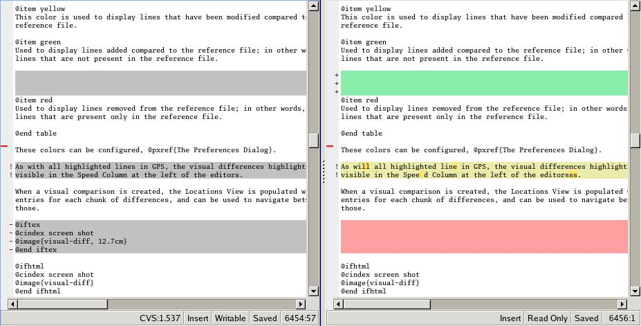
| [ < ] | [ > ] | [ << ] | [ Up ] | [ >> ] | [Top] | [Contents] | [Index] | [ ? ] |
GPS provides an interactive way to fix or improve your source code, based on messages (errors and warnings) generated by the GNAT compiler.
This capability is integrated with the Locations tree (see The Locations Tree): when GPS can take advantage of a compiler message, an icon is added on the left side of the line.
For a simple fix, a wrench icon is displayed. If you click with the left button on this icon, the code will be fixed automatically, and you will see the change in the corresponding source editor. An example of a simple fix, is the addition of a missing semicolon.
You can also check what action will be performed by clicking on the right button which will display a contextual menu with a text explaining the action that will be performed. Similarly, if you display the contextual menu anywhere else on the message line, a sub menu called Code Fixing gives you access to the same information. In the previous example of a missing semicolon, the menu will contain an entry labeled Add expected string ";".
Once the code change has been performed, the tool icon is no longer displayed.
For more complex fixes, where more than one change is possible, the icon will display in additional of the tool, a red question mark. In this case, clicking on the icon will display the contextual menu directly, giving you access to the possible choices. For example, this will be the case when an ambiguity is reported by the compiler for resolving an entity.
| [ < ] | [ > ] | [ << ] | [ Up ] | [ >> ] | [Top] | [Contents] | [Index] | [ ? ] |
GPS provides a documentation generator which processes source files and generates annotated HTML files.
It is based on the source cross-reference information (e.g. generated by GNAT for Ada files). This means that you should ensure that cross-reference information has been generated before generating the documentation. It also relies on standard comments that it extracts from the source code. Note that unlike other similar tools, no macro needs to be put in your comments. The engine in charge of extracting them coupled with the cross-reference engine gives GPS all the flexibility needed to generate accurate documentation.
Currently, documentation can only be generated for Ada files.
The documentation is put into a directory called `html', created under the object directory of the root project loaded in GPS.
Once the documentation is generated, the main documentation file is loaded in your default browser.
The documentation generator uses a set of templates files to control the final rendering. This means that you can control precisely the rendering of the generated documentation. The default set of templates is defined in the file `docgen.xml' and can be found under `<install_dir>/share/gps/docgen/html'. For a description of the documentation generator renderer see section Defining a Documentation format.
The documentation generator can be invoked from two places inside GPS:
Generate projectGenerate documentation for all files from the loaded project.
Generate projects & subprojectsGenerate documentation for all files from the loaded project as well all its subprojects.
Generate current fileGenerate documentation for the file you are currently editing.
Generate for...This will open a File Selector Dialog (see section The File Selector) and documentation will be generated for the file you select.
When relevant (depending on the context), right-clicking with your mouse
will show a Documentation contextual menu.
From a source file contextual menu, you have one option called
Generate for <filename>, that will generate documentation
for this file and if needed its corresponding body
(see section The Preferences Dialog).
From a project contextual menu (see section The Project View), you will have the choice between generating documentation for all files from the selected project or from the selected project recursively.
You will find the list of all documentation options in The Preferences Dialog.
There are some restrictions in the generated documentation:
Furthermore, the documentation generator relies on the ALI files created by GNAT. Depending on the version of GNAT used, the following restrictions may or may not apply:
| [ < ] | [ > ] | [ << ] | [ Up ] | [ >> ] | [Top] | [Contents] | [Index] | [ ? ] |
GPS provides an interface with the GNAT software metrics generation tool
gnatmetric.
The metrics can be computed for the entire project, one source file belonging to the project, or (when applicable) a specific entity in the source file, e.g. a subprogram.
The metrics generator can be invoked from two places inside GPS:
Metrics->Compute metrics for root projectGenerate metrics for all files from the root project.
Metrics->Compute metrics for current fileGenerate metrics for the current source file.
When relevant (depending on the context), right-clicking with your mouse will show metrics-related contextual menu entries.
From a source file contextual menu, you have an option called
Metrics for file that will generate the metrics for
the current file.
From a project contextual menu (see section The Project View), you have an
option Metrics for project that will generate the metrics for
all files in the project.
Each of these commands produces a new window in the left-side area, which shows the computed metrics as a hierarchical tree view. The metrics are arranged by files, and then by scopes inside the files in a nested fashion. Double-clicking on any of the files or scopes displayed will open the appropriate source location in the editor. Any errors encountered during metrics computation will be displayed in the Locations Window.
| [ < ] | [ > ] | [ << ] | [ Up ] | [ >> ] | [Top] | [Contents] | [Index] | [ ? ] |
| 14.1 Customizing your Projects | ||
| 14.2 Debugger Issues |
This chapter explains how to adapt your project and configure GPS when working in a cross environment.
| [ < ] | [ > ] | [ << ] | [ Up ] | [ >> ] | [Top] | [Contents] | [Index] | [ ? ] |
This section describes some possible ways to customize your projects when working in a cross environment. For more details on the project capabilities, see Project Handling.
When using the project editor to modify the project's properties, two
areas are particularly relevant to cross environments:
Cross environment part of the General page and
Tools, part of the Languages page.
In the Tools section, you will typically need to change the name of
the compiler(s) and the debugger, as well as gnatls' name if you are
using Ada.
For example, assuming you have an Ada project, and using a powerpc VxWorks
configuration. You will set the Ada compiler to
powerpc-wrs-vxworks-gnatmake; Gnatls to
powerpc-wrs-vxworks-gnatls and Debugger to
powerpc-wrs-vxworks-gdb.
If you are using an alternative run time, e.g. a soft float run time,
you need to add the option --RTS=soft-float to the Gnatls
property, e.g: powerpc-wrs-vxworks-gnatls --RTS=soft-float, and
add this same option to the Make switches in the switch editor.
See Switches for more details on the switch editor.
To modify your project to support configurations such as multiple targets, or multiple hosts, you can create scenario variables, and modify the setting of the Tools parameters based on the value of these variables. See Scenarios and Configuration Variables for more information on these variables.
For example, you may want to create a variable called Target to handle
the different kind of targets handled in your project:
Native, Embedded
Native, PowerPC, M68K
Similarly, you may define a Board variable listing the different
boards used in your environment and change the Program host and Protocol
settings accordingly.
In some cases, it is useful to provide a different body file for a given
package (e.g. to handle target specific differences). A possible approach
in this case is to use a configuration variable (e.g. called TARGET),
and specify a different naming scheme for this body file (in the project
properties, Naming tab), based on the value of TARGET.
| [ < ] | [ > ] | [ << ] | [ Up ] | [ >> ] | [Top] | [Contents] | [Index] | [ ? ] |
This section describes some debugger issues that are specific to cross environments. You will find more information on debugging by reading Debugging.
To connect automatically to the right remote debug agent when
starting a debugging session (using the menu Debug->Initialize),
be sure to specify the Program host and Protocol project
properties, as described in the previous section.
For example, if you are using the Tornado environment, with a target
server called target_ppc, set the Protocol to wtx and
the Program host to target_ppc.
Once the debugger is initialized, you can also connect to a remote agent
by using the menu Debug->Debug->Connect to Board.... This will open
a dialog where you can specify the target name (e.g. the name of your
board or debug agent) and the communication protocol.
In order to load a new module on the target, you can select the menu
Debug->Debug->Load File....
If a module has been loaded on the target and is not known
to the current debug session, use the menu
Debug->Debug->Add Symbols... to load the symbol tables in the current
debugger.
Similarly, if you are running the underlying debugger (gdb) on a remote
machine, you can specify the name of this machine by setting the
Tools host field of the project properties.
| [ < ] | [ > ] | [ << ] | [ Up ] | [ >> ] | [Top] | [Contents] | [Index] | [ ? ] |
| 15.1 Requirements | ||
| 15.2 Setup the remote servers | ||
| 15.3 Setup a remote project | ||
| 15.4 Limitations |
In a network environment, it is common for programmers to use as a desktop a computer that is not directly suitable for their development tasks. For instance, each developers may have a PC running Windows or GNU/Linux as their main entrypoint to the company network and do all their development activities on servers potentially running a different operating system and on which the various project resources are shared. A typical way of operating in such an environment is to access the server through X-Window. GPS does naturally work in such a context but it is not necessarily the most efficient organization. Running GPS remotely on a shared remote server will increase the workload of the server as well as the traffic on the network. When the network is slow or saturated, the user interactions can become uncomfortably sluggish. This is a pity when the desktop used to access the network is often a powerful PC which remains idle most of the time. GPS offers the possibility to run natively on the desktop while compilation, run and/or debug activities are performed transparently on one or several remote server.
| [ < ] | [ > ] | [ << ] | [ Up ] | [ >> ] | [Top] | [Contents] | [Index] | [ ? ] |
In order to compile, run or debug on a remote host from GPS, three conditions need to be met:
The full remote development setup is performed in several steps:
| [ < ] | [ > ] | [ << ] | [ Up ] | [ >> ] | [Top] | [Contents] | [Index] | [ ? ] |
| 15.2.1 The remote configuration dialog | ||
| 15.2.2 Connection settings | ||
| 15.2.3 Paths settings |
| [ < ] | [ > ] | [ << ] | [ Up ] | [ >> ] | [Top] | [Contents] | [Index] | [ ? ] |
In order to configure remote servers, you need to open the remote configuration dialog. A predefined configuration can also be set when installing GPS, using xml files. See section Defining a remote server, and See section Defining a remote path translation, for more information.
The remote configuration dialog is opened via the remote view. You can
open it using the menu Tools->Views->Remote.

Once the Remote View is opened, click on Settings to open
the servers configuration dialog.

This dialog is composed of two parts:
You need first to create a new server. For this, click on the button
Add Server on the bottom left part of the dialog. Enter a nickname
identifying the server you want to connect to (this is not necessarily the
network name of this server). Note that this nickname identifies the server and
thus needs to be unique. This new server is then automatically selected,
and the right part of the dialog shows its configuration, which is empty for
the most part.
| [ < ] | [ > ] | [ << ] | [ Up ] | [ >> ] | [Top] | [Contents] | [Index] | [ ? ] |
The first configuration part that needs to be filled concerns the way we will connect to this server:
You have to enter first all mandatory fields, identified by an asterisk:
Other fields might need to be taken into consideration, but they are not mandatory. They are for the most part accessible through the advanced configuration pane.
| [ < ] | [ > ] | [ << ] | [ Up ] | [ >> ] | [Top] | [Contents] | [Index] | [ ? ] |
The last configuration part is to define the path translations between your local host and the remote server.
The remote paths definition will allow GPS to translate your locally loaded project (e.g. the project that resides in your local filesystem) to paths used on the remote server. This part also tells GPS how to keep those paths synchronized between the local machine and the remote server.
All your project's dependencies must then reside in a path that is defined
here. Note that you can retrieve those paths by using gnat list
-v -Pyour_project.
To add a new path, click on the + button, and enter the corresponding
local and remote paths.
You can easily select the desired paths by clicking on the icon next
to the path's entry. Remote browsing is allowed only when the
connection configuration is set (See section Connection settings.) Clicking
on Apply will apply your connection configuration and allow you
to browse the remote host to select the remote paths.
Four kind of paths synchronisation can be set for each defined path:
None: no synchronisation is required from GPS, the paths
are shared using an OS mechanism like NFS.
Always: source path of your project. They are kept
synchronised by GPS before and after every remote action.
Once to local/Once to remote: project's
dependencies. They are synchronized once when a remote project is
loaded or when a local project is set remote. They can be still
manually synchronized using the Remote View (See section The remote view.)
The way those paths need to be configured depend on your network architecture.
| [ < ] | [ > ] | [ << ] | [ Up ] | [ >> ] | [Top] | [Contents] | [Index] | [ ? ] |
| 15.3.1 Remote operations | ||
| 15.3.2 The remote view | ||
| 15.3.3 Loading a remote project |
| [ < ] | [ > ] | [ << ] | [ Up ] | [ >> ] | [Top] | [Contents] | [Index] | [ ? ] |
GPS defines three different remote operation categories: Build operations, Debug operations and Execution operations. All compiler related operations are performed on the Build_Server. The debugger is run on the Debug_Server, and the project's resulting programs are run on the Execution_Server. The GPS_Server (the local machine) is used for all other operations.
| [ < ] | [ > ] | [ << ] | [ Up ] | [ >> ] | [Top] | [Contents] | [Index] | [ ? ] |
The Remote view (Tools->Views->Remote) allows you to assign to
each operation category a configured server (when the Servers
assignment tab is fully expanded) or assign at once all categories to
a unique server (when the Servers assignment tab is collapsed) for the
currently loaded project.

When a server is selected for a particular category, the change is not
immediately performed. Thus, the server's name will appear in red. You can
check the configuration before applying it by pressing the
Check button. This will test for correct remote hosts
connection, and will check that the project path exists on the build server and
has an equivalence on the local machine.
Clicking on the Apply button will perform the following actions:
Always or Once to
local.
If one of the above operations fail, then errors are reported in the
Messages view, and the previous project is kept.
Once a remote server is assigned, this remote configuration will be automatically loaded each time the project is loaded.
| [ < ] | [ > ] | [ << ] | [ Up ] | [ >> ] | [Top] | [Contents] | [Index] | [ ? ] |
If the project you want to work with is already on a distant server, you can directly load it on your local GPS.
To do this, you need to use the Project->Open From Host menu.
Then you select the server's nickname. This will show you its file tree.
Navigate to your project, select it. The project will be loaded as described
above, with all remote operations categories assigned to the selected server by
default.
You can reload your project using the local files on your machine, the remote configuration will then be automatically reapplied.
| [ < ] | [ > ] | [ << ] | [ Up ] | [ >> ] | [Top] | [Contents] | [Index] | [ ? ] |
The GPS remote mode involves a few limitations:
Use external terminal checkbox of the run dialog will
then have no effect if the program is run remotely.
Use separate execution window option is ignored for remote
debugging sessions.
Note that even if you use cygwin's sshd on such a server, you can still access it using cmd.exe (See section Connection settings.)
| [ < ] | [ > ] | [ << ] | [ Up ] | [ >> ] | [Top] | [Contents] | [Index] | [ ? ] |
GPS provides several levels of customization, from simple preferences dialog
to powerful scripting capability through the python language.
This chapters describes each of these capabilities.
| [ < ] | [ > ] | [ << ] | [ Up ] | [ >> ] | [Top] | [Contents] | [Index] | [ ? ] |
This dialog, available through the menu Edit->Preferences, allows you to
modify the global preferences of GPS.
To enable the new preferences, you simply need to confirm by pressing
the OK button. To test your changes, you can use the Apply
button. Pressing the Cancel button will undo all your changes.

Each preference is composed of a label displaying the name of the preference, and an editing area to modify its value. If you leave to mouse over the label, a tool tip will be displayed giving an on-line help on the preference.
The preferences dialog is composed of several areas, accessible through the tabs at the left of the dialog. Each page corresponds to a set of preferences.
This page allows you to quickly change the current settings for GPS, including preferences, key bindings, menus…. See GPS Themes for more information on themes. It is only displayed when there are themes registered.
The default font used in GPS
The fixed (monospace) font used in views like the outline view, the bookmark view,…. As much as possible, this font should use a fixed width for characters, for a better rendering
Name of character set to use when reading or writting text files. GPS uses UTF-8 and Unicode internally, which can handle any character in any language. However, your system will generally not support Unicode natively, and thus the contents of the files should be translated from the file system encoding to unicode.
This preference indicates the file system encoding in use. It defaults to ISO-8859-1, which corresponds to western european characters.
Whether the menu key bindings can be changed interactively.
When this preference is enabled, you can navigate through the menus, and type the key binding you want to associate to a particular item. To remove a key binding, use the Backspace key.
Whether a splash screen should be displayed when starting GPS.
Whether GPS should display the welcome window for the selection of the project to use.
How the tool bar should be displayed: not at all, with small icons or with large icons
Whether the status bar at the bottom of the GPS window should be displayed. This status bar contains one or more progress bars while GPS is executing long actions like a build or a search. These progress bars can be used to monitor the progress of those actions.
If you wish to save vertical screen space, you can hide this status
bar. The progress bars will no longer be visible. Instead, you can
display the Task Manager through the Tools->Views->Tasks menu,
to get similar information. This manager can then be put on the right
or left side of the GPS window, for instance just below the Project
View.
Whether the tool bar should show both text and icons, or only icons.
Whether unsaved files and projects should be saved automatically before calling external tools (e.g. before a build).
Whether the desktop (size and positions of all windows) should be saved when exiting. The default desktop is never saved automatically, i.e. GPS will only save a desktop associated with the current project. If you are working with a project created automatically by GPS, the desktop will not be saved.
Determines when source editors should be saved in the desktop: Never,
Always, or when a source file is associated with the current project
(From_Project).
This controls the size of the list where all the entries copied into the
clipboard through Edit->Copy and Edit->Cut are saved. This list
is navigated through the menu Edit->Paste and
Edit->Paste Previous, as described earlier in this guide.
Whether GPS should build (using gprmake) more than just Ada sources for projects containing Ada and other (e.g. C) languages.
By default, GPS will call gnatmake to build projects containing Ada sources,
meaning that non Ada sources won't be built. By enabling this preference,
a multi-language build tool, called gprmake will be called.
Note that this tool is still under development, so this option should
only be activated with caution.
Whether the first entry of the location window should be selected automatically, and thus whether the corresponding editor should be immediately open.
This section specifies preferences that apply to the Multiple Document Interface described in Multiple Document Interface.
If True, items will be resized or moved opaquely when not maximized.
If False, closing the window associated with a floating item will put the item back in the main GPS window, but will not destroy it. If True, the item is destroyed.
If True, then all the windows will be floating by default, i.e. be under the control of your system (Windows) or your window manager (Unix machines). This replaces the MDI.
Color to use for the background of the MDI.
Color to use for the title bar of unselected items.
Color to use for the title bar of selected items.
If True, each window in GPS will have its own title bars, showing some particular information (like the name of the file edited for editors), and some buttons to iconify, maximize or close the window. This title bar is highlighted when the window is the one currently selected.
If False, the title bar is not displayed, to save space on the screen. The tabs of the notebooks will then be highlighted.
Indicates when the notebook tabs should be displayed. If set to "Never", you will have to select the window in the Window menu, or through the keyboard. If set to "Automatic", then the tabs will be shown when two or more windows are stacked.
Indicates where the notebook tabs should be displayed
Whether the editor should remove trailing blanks when saving a file.
Choose between Unix, Windows and Unchanged line terminators when saving files. Choosing Unchanged will use the original line terminator when saving the file; Unix will use LF line terminators; Windows will use CRLF line terminators.
Whether the line numbers should be displayed in file editors.
Whether the subprogram name should be displayed in the editor's status bar.
Whether tool tips should be displayed automatically.
Time (in milliseconds) before displaying tooltips.
Determine whether the delimiter matching the character following the
cursor should be highlighted. The list of delimiters includes: {}[]()
The period (in seconds) after which an editor is automatically saved, 0 if none.
Each modified file is saved under a file called .#filename#, which is
removed on the next explicit save operation.
The right margin to highlight. 0 if none.
This value is also used to implement the Edit->Refill command.
Whether the editor should highlight the current block. The current block depends on the programming language, and will include e.g. procedures, loops, if statements, …
Whether the editor should provide the ability to fold/unfold blocks.
When the Speed Column should be shown on the side of the editors:
NeverThe Speed Column is never displayed.
AutomaticThe Speed Column is shown whenever lines are highlighted in the editor, for example to show the current execution point, or lines containing compilation errors, … It disappears when no lines are highlighted.
AlwaysThe Speed Column is always displayed.
The default external editor to use.
Specify the command line for launching a custom editor. It is assumed that the command will create a new window/terminal as needed. If the editor itself does not provide this capability (such as vi or pico under Unix systems), you can use an external terminal command, e.g:
xterm -geo 80x50 -exe vi +%l %f |
The following substitutions are provided:
%lline to display
%ccolumn to display
%ffull pathname of file to edit
%eextended lisp inline command
%ptop level project file name
%%percent sign ('%')
True if all editions should be done with the external editor. This will deactivate completely the internal editor. False if the external editor needs to be explicitly called by the user.
The default font, default foreground and default background colors used in the source editor.
Font and colors used to highlight keywords.
Font and colors used to highlight comments. Setting the color to white will set a transparent color.
Font and colors used to highlight strings. Setting the color to white will set a transparent color.
Color for highlighting the current line. Leave it to blank for no highlighting. Setting the color to white will set a transparent color.
Color for highlighting the current source block.
Color for highlighting delimiters.
Color for highlighting the search results in the text of source editors.
Color used for the cursor in editors and interactive consoles
Defines the size of the cursor, relatively to characters. 100 means the cursor will occupy the same size as a character, 10 means it will only occupy 10% of the size occupies by a character.
How the editor should indent Ada sources. None means no indentation; Simple means that indentation from the previous line is used for the next line; Extended means that a language specific parser is used for indenting sources.
Whether the editor should use tabulations when indenting.
The number of spaces for the default Ada indentation.
The number of extra spaces for continuation lines.
The number of extra spaces for multiple line declarations. For example, using a value of 4, here is how the following code would be indented:
variable1,
variable2,
variable3 : Integer;
|
The number of extra spaces used to indent multiple lines conditionals within parentheses.
For example, when this preference is set to 1 (the default), continuation lines are indented based on the previous parenthesis plus one space:
if (Condition1
and then Condition2)
then
|
When this preference is set to 3, this gives:
if (Condition1
and then Condition2)
then
|
The number of extra spaces for record definitions, when the record
keyword is on its own line.
For example, when this preference is set to 3 (the default), the following sample will be indented as:
type T is
record
F : Integer;
end record;
|
When this preference is set to 1, this gives:
type T is
record
F : Integer;
end record;
|
Whether GPS should indent case statements with an extra level, as used in the Ada Reference Manual, e.g:
case Value is
when others =>
null;
end case;
|
If this preference is set to Non_Rm_Style, this would be indented as:
case Value is when others => null; end case; |
By default (Automatic), GPS will choose to indent with an extra
level or not based on the first when construct: if the first
when is indented by an extra level, the whole case statement will
be indented following the RM style.
The way the editor will handle the case settings below.
Disabled no auto-casing will be done;
End_Of_Line auto-casing will be done when hitting Enter key;
On_The_Fly auto-casing will be done word-by-word while typing.
For the End_Of_Line and On_The_Fly policies it is always
possible to force the casing of the current line by pressing the indentation
key (Ctrl-Tab by default).
How the editor should handle reserved words casing.
Unchanged will keep the casing as-is;
Upper will change the casing of all reserved words to upper case;
Lower will change the casing to lower case;
Mixed will change the casing to mixed case (all characters to
lower case except first character and characters after an underscore
which are set to upper case);
Smart_Mixed As above but do not force upper case characters to
lower case.
How the editor should handle identifiers casing. The values are the same as for the Reserved word casing preference.
Whether the editor should add extra spaces around operators and delimiters
if needed.
If enabled, an extra space will be added when needed in the following cases:
before an opening parenthesis;
after a closing parenthesis, comma, semicolon;
around all Ada operators (e.g. <=, :=, =>, …)
Whether the editor should automatically align colons in declarations and parameter lists. Note that the alignment is computed by taking into account the current buffer up to the current line (or end of the current selection), so if declarations continue after the current line, you can select the declarations lines and hit the reformat key.
Whether the editor should automatically align arrows in associations (e.g. aggregates or function calls). See also previous preference.
Whether the editor should align continuation lines in variable declarations based on the colon character.
Consider the following code:
Variable : constant String := "a string"; |
If this preference is enabled, it will be indented as follows:
Variable : constant String :=
"a string";
|
Whether to indent lines containing only comments and blanks, or to keep these lines unchanged.
Whether to align comment lines following record and
is keywords immediately with no extra space.
When enabled, the following code will be indented as:
package P is -- Comment [...] end P; |
When disabled, the indentation will be:
package P is -- Comment [...] end P; |
How the editor should indent C/C++ sources. None means no indentation; Simple means that indentation from the previous line is used for the next line; Extended means that a language specific parser is used for indenting sources.
Whether the editor should use tabulations when indenting. If True, the editor will replace each occurrence of eight characters by a tabulation character.
The number of spaces for the default indentation.
If this preference is enabled, the debugger will automatically save breakpoints when it exists, and restore them the next time the same executable is debugged. This is a convenient way to work on an executable, where the typical usage looks like compile, debug, compile, debug,…
When the preference is enabled, the debugger will also preserve the contents of the data window whenever it is closed. Reopening the window either during the same debugger session, or automatically when a new debugger is started on the same executable, will recreate the same boxes within the data window.
Specifies whether a breakpoint on all exceptions should be set by default when loading a program. This setup is only taken into account when a new debugger is initialized, and will not modify a running debugger (use the breakpoint editor for running debuggers).
Specifies whether the debugger should create a separate execution window for the program being debugged. If true, a separate console will be created. Under Unix systems, this console is another window in the bottom part of the main window; under Windows, this is a separate window created by the underlying gdb, since Windows does not have the notion of separate terminals (aka ttys).
Note that in this mode under Windows, the Debug->Interrupt menu
will not interrupt the debugged program. Instead, you need to hit
Ctrl-C in the separate execution window to interrupt it while it is
running. On Windows this separate execution window uses the default
system-wide console properties (the size of the window, the
colors...). It is possible to change those properties using the
default console menu (top-left of the console) on Windows XP or using
the control panel on Windows NT.
If false, no execution window will be created. The debugger assumes that the program being debugged does not require input, or that if it does, input is handled outside GPS. For example, when you attach to a running process, this process already has a separate associated terminal.
Specifies whether the source editor should display blue dots for lines that contain code. If set to False, gray dots will be displayed instead on each line, allowing breakpoint on any line. Disabling this option provides a faster feedback, since GPS does not need to query the debugger about which lines contain code.
If enabled, do not create new items when an item with the same address is already present on the canvas.
Number of assembly lines to display in the initial display of the assembly window. If the size is 0, then the whole subprogram is displayed, but this can take a very long time on slow machines.
Color used to highlight the assembly code for the current line.
Color used for highlighting in the debugger console.
Indicates color to be used for the items that are click-able (e.g pointers).
Indicates color to be used to highlight fields in the data window that have changed since the last update.
Color used by default in the memory view window.
Color used for highlighted items in the memory view.
Color used for selected items in the memory view.
Indicates the font to be used for the name of the item in the data window.
Indicates font to be used to display the type of the item in the data window.
Command used to list processes running on the machine.
Program used to run a process on a remote machine. You can specify arguments,
e.g. rsh -l user
Program used to copy a file from a remote machine. You can specify arguments,
e.g. rcp -l user
Program used to execute commands externally.
Only used under Unix, not relevant under Windows where the default HTML browser is used. Program used to execute view HTML files, for instance the documentation. Empty by default, which means that GPS will try to find a suitable HTML browser automatically. Only change the value if GPS cannot find a HTML browser, or if the browser found is not your preferred one.
External program used to print files.
This program is required under Unix systems in order to print, and is set to
a2ps by default.
If a2ps is not installed on your system, you can download it
from ftp://ftp.enst.fr/pub/unix/a2ps/, although other printing programs
such as lp can be specified instead.
Under Windows systems, this program is optional and is empty by default, since a built-in printing is provided. An external tool will be used if specified, such as the PrintFile freeware utility available from http://www.lerup.com/printfile/descr.html
Color to use to draw the selected item.
Color used to draw the background of the browsers.
Color used to draw the hyper links in the items.
Color to use for links between selected items.
Color used to draw the links between unselected items.
Color to use for the background of the items linked to the selected item.
Color to use for the background of the items linked from the selected item.
Whether the layout of the graph should be vertical (True) or horizontal (False).
Note that in order to perform visual comparison between files, GPS
needs to call external tool (not distributed with GPS) such as diff
or patch. These tools are usually found on most unix systems, and
may not be available by default on other OSes. Under Windows, you can
download them from one of the unix toolsets
available, such as msys (http://www.mingw.org/msys.shtml) or
cygwin (http://www.cygwin.com).
Command used to compute differences between two files.
Arguments can also be specified. The visual diff expects a standard diff
output with no context (that is, no -c nor -u switch).
Arguments of interest may include (this will depend on the version of diff
used):
Ignore changes in amount of white space.
Ignore changes that just insert or delete blank lines.
Ignore changes in case; consider upper and lower case letters equivalent.
Ignore white space when comparing lines.
Command used to apply a patch. Arguments can also be specified. This command is used internally by GPS to perform the visual comparison on versioned files (e.g. when performing a comparison with a version control system).
This command should be compatible with the GNU patch utility.
Use the old version of the visual comparison.
This item is only displayed if the preference Use old diff is disabled. Command used to query a 3-way diff. See Diff command for a description of the parameters.
This item is only displayed if the preference Use old diff is disabled. The color used to indicate lines on which there is a difference, in the "reference" editor.
This item is only displayed if the preference Use old diff is disabled. The color used to indicate spaces used by lines not present in one of the editors in a 3-way diff and present in the other editors.
This item is only displayed if the preference Use old diff is disabled. The color used to display the lines that are present in an editor but not in the reference editor.
This item is only displayed if the preference Use old diff is disabled. The color used to display the lines that are present in the reference editor but not in other editors.
This item is only displayed if the preference Use old diff is disabled. The color used to display the lines that have changed between the reference editor and the other editors.
This item is only displayed if the preference Use old diff is disabled. The color used to highlight fine differences within a modified line.
This item is only displayed if the preference Use old diff is enabled. The number of lines displayed before and after each chunk of differences. Specifying -1 will display the whole file.
Color used to highlight text in the messages window.
Color used to highlight lines causing compilation errors/warnings in the source editors. When this color is set to white, the errors/warnings are not highlighted. (Compilation/Build)
Pattern used to detect file locations and the type of the output from the messages window. This is particularly useful when using an external tool such as a compiler or a search tool, so that GPS will highlight and allow navigation through source locations. This is a standard system V regular expression containing from two to five parenthesized subexpressions corresponding to the file, line, column, warnings or style error patterns.
Index of filename in the file pattern.
Index of the line number in the file pattern.
Index of the column number in the file pattern.
Index of the warning identifier in the file pattern.
Index of the style error identifier in the file pattern.
Whether paths should be absolute or relative when the projects are modified.
If the project respects a number of restrictions, activating the preference will provide major speed up when GPS parses the project. This is especially noticeable if the source files are on a network drive.
GPS assumes that the following restricitions are true when the preference is activated. If this isn't the case, no error is reported, and only minor drawacks will be visible in GPS (no detection that two files are the same if one of them is a symbolic link for instance, although GPS will still warn you if you are trying to overwrite a file modified on the disk).
The restrictions are the following:
Whether the Xref information should be automatically loaded into memory when a new project is loaded. See section Support for Cross-References.
You can choose a specific font for the outline view. Typically, this will be used to use a slightly smaller font than in the editor, so that you can see more entities at once on the screen.
For some of the languages, in particular Ada, GPS can display the profile (list of parameters) for the subprograms. This can be used to differentiate between overloaded entities (ie entities with the same name). Disabling this preference will only show the entity name.
If this preference is activated, the entities will be sorted alphabetically in the outline view. If disabled, they will be displayed in the order they are found in the source file.
If this option is set, the current subprogram will be selected in the outline view every time the cursor position changes in the current editor. This option requires some computation for GPS, and you might want to avoid the slow down by disabling it.
If this option is set, the outline view will show the name of the file on its first line, and indent slightly all following lines. If this option is unset, this will save some screen real estate, but you will have to look at the current editor to see what file is descrived in the Outline View.
This section specifies preferences that apply to the Documentation Generator. Documentation Generation for more information.
If this preference is enabled, implementation files will be processed. Otherwise, only the specification files will.
By default, no documentation is generated for private entities. Enabling this preference will change this behavior.
Choosing this option will activate the creation of links to files that are not processed.
If enabled, an index will be created that lists all tagged types as well as their parents and childs. Links are created in order to ease the navigation.
| [ < ] | [ > ] | [ << ] | [ Up ] | [ >> ] | [Top] | [Contents] | [Index] | [ ? ] |
| 16.2.1 The Emacs Theme |
GPS provides an extensive support for themes. Themes are predefined set of value for the preferences, for the key bindings, or any other configurable aspect of GPS.
For instance, color themes are a convenient way to change all colors in GPS at once, according to predefined choices (strongly contrasted colors, monochrome,...). It is also possible to have key themes, defining a set of key bindings to emulate e.g. other editors.
Any number of themes can be activated at the same time through the
preferences dialog (Edit->Preferences). This dialog contains a list
of all themes that GPS knows about, organized into categories for convenient
handling. Just click on the buttons on the left of each theme name to activate
that theme.
Note that this will immediately change the current preferences settings. For
instance, if the theme you just selected changes the colors in the editor,
these are changed immediately in the Editor->Fonts & Colors. You can
of course still press Cancel to keep your previous settings
If multiple themes are active at the same time and try to override the same preferences, the last theme which is loaded by GPS will override all previously loaded themes. However, there is no predefined order in which the themes are loaded.
| [ < ] | [ > ] | [ << ] | [ Up ] | [ >> ] | [Top] | [Contents] | [Index] | [ ? ] |
The Emacs Theme, which is provided by default with GPS, defines a number of key bindings similar to Emacs.
control-c nCreate a title box above the current Ada subprogram
control-kRemove text from the cursor to the end of line
control-dRemove the character after the cursor
control-tTranspose the characters before and after the cursor
control-x control-sSave the current editor
control-aGo to the beginning of the line
control-eGo to the end of the line
alt-lessGo to the beginning of the buffer
control-c control-dNavigate to the declaration or the body of the current entity
control-c oGoto from the specification to the body, and vice-versa
control-yPaste the current clipboard
alt-wCopy the current selection to the clipboard
control-wCut the current selection to the clipboard
shift-control-underscoreUndo the previous edition
control-x kClose the current window
control-x control-cExit GPS
control-sBring up the "Find/Replace" dialog
control-x 3Split the window horizontally
control-x 2Split the window vertically
control-x oSelect the other window
control-lCenter the cursor on the screen
alt-backspaceDelete the previous word
alt-rightGo to the next word
alt-leftGo to the previous word
| [ < ] | [ > ] | [ << ] | [ Up ] | [ >> ] | [Top] | [Contents] | [Index] | [ ? ] |
The key manager is accessible through the menu Edit->Key Shortcuts.
This dialog provides an easy way to associate key shortcuts with actions.
These actions are either predefined in GPS, or defined in your own
customization files, as documented in Customizing through XML files.
It also provides an easy way to redefine the menu shortcuts.

Actions are referenced by their name, and are grouped into categories. These categories indicate when the action applies. For instance, the indentation command only applies in source editors, whereas the command to change the current window applies anywhere in GPS. The categories can be explicitly specified when you created your own actions through XML files (see section Defining Actions).
Through the key manager, you can define key bindings similar to what Emacs
uses (control-x followed by control-k for instance). To register
such key bindings, you need to press the Grab button as usual, and then
type the shortcut. The recording of the key binding will stop a short while
after the last key stroke.
If you define complex shortcuts for menus, they will not appear next to the menu name when you select it with the mouse. This is expected, and is due to technical limitations in the graphical toolkit that GPS uses.
When you assign a new shortcut to an action, the following happens:
| [ < ] | [ > ] | [ << ] | [ Up ] | [ >> ] | [Top] | [Contents] | [Index] | [ ? ] |
You can customize lots of capabilities in GPS using XML files that are loaded by GPS at start up.
For example, you can add items in the menu and tool bars, as well as defining new key bindings, new languages, new tools, …
XML files are found through three mechanisms, described here in the order in
which they are searched. Files with the `.xml' extension found through
GPS_CUSTOM_PATH or the user's directory can override any setup found in
the system directory. Likewise, files found in the user's directory can
override any file found in the GPS_CUSTOM_PATH directories.
Note that only files with the `.xml' or `.py' extensions are considered, other files are ignored.
The `INSTALL/share/gps/plug-ins' directory, where `INSTALL' is the name of the GPS installation directory, should contain the xml and python files that will always be loaded whenever GPS is started, by any user on the system.
GPS_CUSTOM_PATH
This environment variable can be set before launching GPS. It should contain a list of directories, separated by semicolons (';') on Windows systems and colons (':') on Unix systems. All the files found in these directories will be searched for customization files.
This is a convenient way to have project-specific customization files. You can for instance create scripts, or icons, that set the appropriate value for the variable and then start GPS. Depending on your project, this allows you to load specific aliases which do not make sense for other projects.
The directory `$HOME/.gps/plug-ins' on Unix
systems, and `%HOME%\.gps\plug-ins' on Windows systems, can also contain
customization files which are loaded at startup. This is a convenient way for
users to define their own plug-ins, that they want to load no matter which
project they are working on. Note that you can use the environment variable
GPS_HOME to override the value of the HOME variable.
Alternatively, if none of HOME and GPS_HOME are defined,
USERPROFILE is also considered.
XML files must be utf8-encoded by default. In addition, you can specify any
specific encoding through the standard <?xml encoding="..." ?>
declaration, as in the following example:
<?xml version="1.0" encoding="iso-8859-1"?> <submenu> <title>encoded text/title> </submenu> |
Any given XML file can contain customization for various aspects of GPS, mixing aliases, new languages or menus,… in a single file. This is a convenient way to distribute your plug-ins to other users.
These files must be valid XML files, i.e. must start with the
<?xml?> tag, and contain a single root XML node, the name of which is
left to your consideration. The general format is therefore
<?xml version="1.0" ?> <root_node> ... </root_node> |
The list of valid XML child nodes that can be specified under <root> is described in later sections. It includes:
<action>(see section Defining Actions)
<key>(see section Binding actions to keys)
<submenu>(see section Adding new menus)
<pref>(see section Preferences support in custom files)
<preference>(see section Preferences support in custom files)
<alias>(see section Defining text aliases)
<language>(see section Adding support for new languages)
<button>(see section Adding tool bar buttons)
<entry>(see section Adding tool bar buttons)
<vsearch-pattern>(see section Defining new search patterns)
<tool>(see section Adding support for new tools)
<filter>(see section Filtering actions)
<contextual>(see section Adding contextual menus)
<case_exceptions>(see section Adding casing exceptions)
<documentation_file>(see section Adding documentation)
<doc_path>(see section Adding documentation)
<stock>(see section Adding stock icons)
<project_attribute>(see section Defining project attributes)
<docgen_backend>(see section Defining a Documentation format)
<remote_machine_descriptor>(see section Defining a remote server)
<remote_path_config>(see section Defining a remote path translation)
<remote_connection_config>(see section Defining a remote connection tool)
<rsync_configuration>(see section Configuring rsync usage)
| [ < ] | [ > ] | [ << ] | [ Up ] | [ >> ] | [Top] | [Contents] | [Index] | [ ? ] |
This facility distinguishes the actions from their associated menus or key bindings. Actions can take several forms: external commands, shell commands and predefined commands, as will be explained in more details below.
The general form to define new actions is to use the <action> tag.
This tag accepts the following attributes:
name (mandatory)This tag must be specified. It provides the name by which the action is referenced in other parts of the customization files, for instance when it is associated with a menu or a toolbar button. The name can contain any character, although it is recommended to avoid XML special characters. It mustn't start with a '/'.
output (optional)If specified, this attribute indicates where the output of the commands will
be sent by default. This can be overridden by each command, using the same
attribute for <shell> and <external> tags,
See section Redirecting the command output.
show-command (optional, default true)If specified, this attribute indicates whether the text of the command itself should be displayed at the same location as its output. Neither will be displayed if the output is hidden. The default is to show the command along with its output. This attribute can be overridden for each command.
show-task-manager (optional, default false)This attribute indicates whether an entry should be created in the task manager to show this command. Associated with this entry is the progress bar indicator, so if you hide the entry, no progress will be shown. On the other hand, several progress bars might be displayed for your action if you show the progress bar here, which might be an issue depending on the context. This attribute can be overriden for each external command.
category (optional, default "General")The category in the keybindings editor (menu Edit/Key bindings) in which
the action should be shown to the user. If you specify an empty string, the
action is considered as an implementation detail, and not displayed in the
editor. The user will thus not be able to assign it a keybinding through the
graphical user interface (although this is still doable through XML commands).
If you are defining the same action multiple times, the last definition will be kept. However, existing menus, buttons,… that already reference that action will keep their existing semantic. The new definition will only be used for all new menus created from that point on.
The <action> can have one or
several children, all of which define a particular command to execute. All
of these commands are executed one after the other, unless one of them
fails in which case the following commands are not executed.
The following XML tags are valid children for <action>.
<external>This defines a command to execute through the system (i.e. a standard Unix or Windows command)
Note for Windows users: like under UNIX, scripts can be called
from custom menu. In order to do that, you need to write your script in a
`.bat' or `.cmd' file, and call this file as usual.
The external tag would e.g. look like:
<?xml version="1.0" ?>
<external_example>
<action name="my_command">
<external>c:\.gps\my_scripts\my_cmd.cmd</external>
</action>
</external_example>
|
This tag accepts the following attributes:
server (optional) This attribute can be used to execute the external command on a remote
server. The accepted values are "gps_server" (default),
"build_server", "execution_server" and "debug_server".
See section Remote operations, for explanation of
what these servers are.
check-password (optional) This attribute can be used to tell GPS to check and handle password prompts
from the external command. The accepted values are "false" (default)
and "true".
show-command (optional) This attribute can be used to override the homonym attribute specified for
the <action> tag.
output (optional) This attribute can be used to override the homonym attribute specified for
the <action> tag.
progress-regexp (optional)This attribute specifies a regular expression that the output of the command will be checked against. Every time the regular expression matches, it should provide two numeric values that are used to display the usual progress indicators at the bottom-right corner of the GPS window, as happens during regular compilations.
The name of the action is printed in the progress bar while the action is executing.
<?xml version="1.0" ?>
<progress_action>
<action name="progress" >
<external
progress-regexp="(\d+) out of (\d+).*$"
progress-current="1"
progress-final="2"
progress-hide="true">gnatmake foo.adb
</external>
</action>
</progress_action>
|
progress-current (optional, default is 1) This is the opening parenthesis count index in progress-regexp
that contains the current step.
progress-final (optional, default is 2) This is the opening parenthesis count index in progress-regexp
that contains the current last step. This last index can grow as
needed. For example, gnatmake will output the number of
the file it is currently examining, and the total number of files to be
examined. However, that last number may grow up, since parsing a new file
might generate a list of additional files to parse later on.
progress-hide (optional, default is true) If this attribute is set to the value "true", then all the lines that
match progress-regexp and are used to compute the progress will
not be displayed in the output console. For any other value of this
attribute, these lines are displayed along will the rest of the output.
show-task-manager (optional, default inherited from <action>)This attribute indicates whether an entry should be created in the task manager to show this command. Associated with this entry is the progress bar indicator, so if you hide the entry, no progress will be shown. On the other hand, several progress bars might be displayed for your action if you show the progress bar here, which might be an issue depending on the context.
If you have set a value for progress-regexp, this will automatically
be set to true by default so that the progress bar is indeed displayed in
the task manager. You can still override it explicitly for that
<external> element to force hiding the progress bar.
<on-failure>This tag specifies a group of command to be executed if the previous external command fails. Typically, this is used to parse the output of the command and fill the location window appropriately (see section Processing the tool output).
For instance, the following action spawn an external tool, and parses its output to the location window and the automatic fixing tool if the external tool happens to fail.
In this group of commands the %... and $... macros can be used.
<?xml version="1.0" ?>
<action_launch_to_location>
<action name="launch tool to location" >
<external>tool-path</external>
<on-failure>
<shell>Locations.parse "%1" category<shell>
<external>echo the error message is "%2"</external>
</on-failure>
<external>echo the tool succeeded with message %1</external>
</action>
</action_launch_to_location>
|
<shell>As well as external commands, you can use custom menu items to invoke GPS
commands using the shell tag. These are command written in one of the
shell scripts supported by GPS.
This tag supports the same show-command and output attributes
as the <action> tag.
The following example shows how to
create two actions to invoke the help interactive command and to open
the file `main.c'.
<?xml version="1.0" ?>
<help>
<action name="help">
<shell>help</shell>
</action>
<action name="edit">
<shell>edit main.c</shell>
</action>
</help>
|
By default, commands are expected to be written in the GPS shell language.
However, you can specify the language through the lang attribute. Its
default value is "shell".
The value of this attribute could also be "python".
When programming with the GPS shell, you can execute multiple commands by separating them with semicolons. Therefore, the following example adds a menu which lists all the files used by the current file, in a project browser.
<?xml version="1.0" ?>
<current_file_uses>
<action name="current file uses">
<shell lang="shell">File %f</shell>
<shell lang="shell">File.uses %1</shell>
</action>
</current_file_uses>
|
<description>This tag contains a description for the command, which is used in the graphical editor for the key manager. See section The Key Manager Dialog.
<filter>, <filter_and>, <filter_or>This is the context in which the action can be executed, See section Filtering actions.
It is possible to mix both shell commands and external commands. For instance, the following command opens an xterm (on Unix systems only) in the current directory, which depends on the context.
<?xml version="1.0" ?>
<xterm_directory>
<action "xterm in current directory">
<shell lang="shell">cd %d</shell>
<external>xterm</external>
</action>
</xterm_directory>
|
As seen in some of the examples above, some special strings are expanded by GPS just prior to executing the command. These are the "%f", "%d",.. See below for a full list.
More information on chaining commands is provided in See section Chaining commands.
Some actions are also predefined in GPS itself. This include for instance
aliases expansion, manipulating MDI windows,... All known actions (predefined
and the ones you have defined in your own customization files) can be
discovered by opening the key shortcut editor (Edit->Key shortcuts menu).
| [ < ] | [ > ] | [ << ] | [ Up ] | [ >> ] | [Top] | [Contents] | [Index] | [ ? ] |
When an action is defined, you can use macro arguments to pass to your shell or external commands. Macro arguments are special parameters that are transformed every time the command is executed. The following macro arguments are provided.
The equivalent python command is given for all tests. These commands are useful when you are writing a full python script, and want to test for yourself whether the context is properly defined.
%fBase name of the currently selected file. Python equivalent:
import os.path os.path.basename (GPS.current_context().file().name()) |
%FAbsolute name of the currently opened file. Python equivalent:
GPS.current_context().file().name() |
%fkKrunched base name of the currently selected file. This is the same as %f, except that long names are shortened, and their middle letters are replaced by "[...]". This should be used in particular in menu labels, to keep the menus narrow.
%eName of the entity the user clicked on. Python equivalent:
GPS.current_context().entity().name() |
%ekKrunched name of the entity the user clicked on.
This is the same as %e, except long names are shorted as in %fk.
%dThe current directory. Python equivalent:
GPS.current_context().directory() |
%dkThe krunched name of the current directory.
%lThis is the line number on which the user clicked. Python equivalent:
GPS.current_context().line() |
%cThis is the column number on which the user clicked. Python equivalent:
GPS.current_context().column() |
%aIf the user clicked within the Locations Window, this is the name of the category to which the current line belongs
%iIf the user clicked within the Project View, this is the name of the parent project, ie the one that is importing the one the user clicked on. Note that with this definition of parent project, a given project might have multiple parents. The one that is returned is read from the Project View itself.
%sThis is the text selected by the user, if a single line was selected. When multiple lines were selected, this returns the empty string
%pThe current project. This is the name of the project, not the project file, ie the `.gpr' extension is not included in this name, and the casing is the one found inside the project file, not the one of the file name itself. If the current context is an editor, this is the name of the project to which the source file belongs. Python equivalent:
GPS.current_context().project().name() |
%PThe root project. This is the name of the project, not the project file. Python equivalent:
GPS.Project.root().name() |
%ppThe current project file pathname. If a file is selected, this is the project file to which the source file belongs. Python equivalent:
GPS.current_context().project().file().name() |
%PPThe root project pathname. Python equivalent:
GPS.Project.root().file().name() |
%ppsThis is similar to %pp, except it returns the project name prepended
with -P, or an empty string if there is no project file selected and the
current source file doesn't belong to any project. This is mostly for use with
the GNAT command line tools.
Python equivalent:
if GPS.current_context().project(): return "-P" & GPS.current_context().project().path() |
%PPsThis is similar to %PP, except it returns the project name prepended
with -P, or an empty string if the root project is the default project.
This is mostly for use with the GNAT command line tools.
%(p|P)[r](d|s)[f]Substituted by the list of sources or directories of a given project. This list is a list of space-separated, quoted names (all names are surrounded by double quotes, for proper handling of spaces in directories or file names).
Pthe root project.
pthe selected project, or the root project if there is no project selected.
rrecurse through the projects: sub projects will be listed as well as their sub projects, etc…
dlist the source directories.
Python equivalent:
GPS.current_context().project().source_dirs() |
slist the source files.
Python equivalent:
GPS.current_context().project().sources() |
foutput the list into a file and substitute the parameter with the name of that file. This file is never deleted by GPS, it is your responsibility to do so.
Examples:
%PsReplaced by a list of source files in the root project.
%prsReplaced by a list of files in the current project, and all imported sub projects, recursively.
%prdfReplaced by the name of a file that contains a list of source directories in the current project, and all imported sub projects, recursively.
%%Replaced by the % sign.
| [ < ] | [ > ] | [ << ] | [ Up ] | [ >> ] | [Top] | [Contents] | [Index] | [ ? ] |
By default, an action will execute in any context in GPS. The user just selects the menu or key, and GPS tries to execute the action.
It is possible to restrict when an action should be considered as valid. If the current context is incorrect for the action, GPS will not attempt to run anything, and will display an error message for the user.
Actions can be restricted in several ways:
For instance, if you have specified %F as a parameter to one of the
commands, GPS will check prior to running the action that there is a current
file. This can be either a currently selected file editor, or for instance that
the project explorer is selected, and a file node inside it is also selected.
You do not have to specify anything else, this filtering is automatic
Note however that the current context might contain more information than you
expect. For instance, if you click on a file name in the Project View, then
the current context contains a file (thus satisfies %F), but also
contains a project (and thus satisfies %p and similar macros).
<filter>, <filter_and>
and <filter_or> tags, see below.
These tags can be used to further restrict when the command is valid. For instance, you can use them to specify that the command only applies to Ada files, or only if a source editor is currently selected.
| [ < ] | [ > ] | [ << ] | [ Up ] | [ >> ] | [Top] | [Contents] | [Index] | [ ? ] |
Such filters can be defined in one of two places in the customization files:
<action>, <menu> or
<button> tags, you can define named filters. These are general filters,
that can be referenced elsewhere without requiring code duplication.
<action> tag.
Such filters are anonymous, although they provide exactly the same capabilities
as the ones above. These are mostly meant for simple filters, or filters that
you use only once.
There are three different kinds of tags:
<filter>This defines a simple filter. This tag takes no child tag.
<filter_and>All the children of this tag are composed together to form a compound filter.
They are evaluated in turn, and as soon as one of them fails, the whole filter
fails. Children of this tag can be of type <filter>, <filter_and>
and <filter_or>.
<filter_or>All the children of this tag are composed together to form a compound filter.
They are evaluated in turn, and as soon as one of them succeeds, the whole
filter succeeds. Children of this tag can be of type <filter>,
<filter_and> and <filter_or>.
If several such tags are found following one another under an <action>
tag, they are combined through "or", i.e. any of the filters may match for the
action to be executed.
The <filter>, <filter_and> and <filter_or> tags accept the
following set of common attributes:
name (optional)This attribute is used to create named filters, that can be reused elsewhere
in actions or compound filters through the id attribute. The name can
take any form.
error (optional)This is the error message printed in the GPS console if the filter doesn't
match, and thus the action cannot be executed. If you are composing filters
through <filter_and> and <filter_or>, only the error message of
the top-level filter will be printed.
In addition, the <filter> has the following specific attributes:
id (optional)If this attribute is specified, all other attributes are ignored. This is used to reference a named filter previously defined. Here is for instance how you can make an action depend on a named filter:
<?xml version="1.0" ?>
<test_filter>
<filter name="Test filter" language="ada" />
<action name="Test action" >
<filter id="Test filter" />
<shell>pwd</shell>
</action>
</test_filter>
|
A number of filters are predefined by GPS itself.
Source editorThis filter will only match if the currently selected window in GPS is an editor.
Explorer_Project_NodeMatches when clicking on a project node in the Project View
Explorer_Directory_NodeMatches when clicking on a directory node in the Project View
Explorer_File_NodeMatches when clicking on a file node in the Project View
Explorer_Entity_NodeMatches when clicking on an entity node in the Project View
language (optional)This attribute specifies the name of the language that must be associated
with the current file to match. For instance, if you specify ada,
you must have an Ada file selected, or the action won't execute. The language
for a file is found by GPS following several algorithms (file extensions, and
via the naming scheme defined in the project files).
shell_cmd (optional)This attribute specifies a shell command to execute. The output value of this command is used to find whether the filter matches: if it returns "1" or "true", the filter matches. In any other case, the filter fails.
Note that currently no expansion of macro arguments (%f, %p,…) is done in this command.
shell_lang (optional)This attribute specifies in which language the shell command above is written. Its default value indicates that the command is written using the GPS shell.
module (optional)This attribute specifies that the filter only matches if the current window was setup by this specific GPS module. For instance, if you specify "Source_Editor", this filter will only match when the active window is a source editor.
The list of module names can be obtained by typing lsmod in the shell
console at the bottom of the GPS window.
This attribute is mostly useful when creating new contextual menus.
When several attributes are specified for a <filter> node (which is not
possible with id), they must all match for the action to be executed.
<?xml version="1.0" ?>
<!-- The following filter will only match if the currently selected
window is a text editor editing an Ada source file -->
<ada_editor>
<filter_and name="Source editor in Ada" >
<filter language="ada" />
<filter id="Source editor" />
</filter_and>
<!-- The following action will only be executed for such an editor -->
<action name="Test Ada action" >
<filter id="Source editor in Ada" />
<shell>pwd</shell>
</action>
<!-- An action with an anonymous filter. It will be executed if the
selected file is in Ada, even if the file was selected through
the project explorer -->
<action name="Test for Ada files" >
<filter language="ada" />
<shell>pwd</shell>
</action>
</ada_editor>
|
| [ < ] | [ > ] | [ << ] | [ Up ] | [ >> ] | [Top] | [Contents] | [Index] | [ ? ] |
These commands can be associated with menus, tool bar buttons and keys. All of these use similar syntax.
Binding a menu to an action is done through the <menu> and
<submenu> tags.
The <menu> tag takes the following attributes:
action (mandatory)This attribute specifies which action to execute when the menu is selected by the user. If no action by this name was defined, no new menu is added. The action name can start with a '/', in which case it represents the absolute path to a menu to execute instead.
This attribute can be omitted only when no title is specified for the menu to make it a separator (see below).
If a filter is associated with the action through the <filter> tag,
then the menu will be greyed out when the filter doesn't match. As a
result, users will not be able to click on it.
before (optional)It specifies the name of another menu item before which the new menu should be inserted. The reference menu must have been created before, otherwise the new menu is inserted at the end. This attribute can be used to control where precisely the new menu should be made visible.
after (optional)This attribute is similar to before, but has a lower priority. If it
is specified, and there is no before attribute, it specifies a reference
menu after which the new menu should be inserted.
It should also have one XML child called <title> which specifies the
label of the menu. This is really a path to a menu, and thus you can define
submenus by specifying something like "/Parent1/Parent2/Menu" in the title
to automatically create the parent menus if they don't exist yet.
You can define the accelerator keys for your menus, using underscores
in the titles. Thus, if you want an accelerator on the first letter in
a menu named File, set its title as _File.
The tag <submenu> accepts the following attributes:
before (optional)See description above, same as for <menu>
after (optional)See description above, same as for <menu>
It accepts several children, among <title> (which must be specified
at most once), <submenu> (for nested menus), and <menu>.
Since <submenu> doesn't accept the action attribute, you should
use <menu> for clickable items that should result in an action, and
<submenu> if you want to define several menus with the same path.
You can specify which menu the new item is added to in one of two ways:
title attribute of <menu>
<menu> as a child of a <submenu> node
This requires slightly more typing, but it allows you to specify the exact
location, at each level, of the parent menu (before or after an existing
menu).
For example, this adds an item named mymenu to the standard
Edit menu.
<?xml version="1.0" ?>
<test>
<submenu>
<title>Edit</title>
<menu action="current file uses">
<title>mymenu</title>
</menu>
</submenu>
</test>
|
The following has exactly the same effect:
<?xml version="1.0" ?>
<test>
<menu action="current file uses">
<title>Edit/mymenu</title>
</menu>
</test>
|
The following adds a new item "stats" to the "unit testing" submenu in "my_tools".
<?xml version="1.0" ?>
<test>
<menu action="execute my stats">
<title>/My_Tools/unit testing/stats</title>
</menu>
</test>
|
The previous syntax is shorter, but less flexible than the following,
where we also force the My_Tools menu, if it doesn't exist yet, to
appear after the File menu. This is not doable by using only <menu>
tags. We also insert several items in that new menu
<?xml version="1.0" ?>
<test>
<submenu after="File">
<title>My_Tools</title>
<menu action="execute my stats">
<title>unit testing/stats</title>
</menu>
<menu action="execute my stats2">
<title>unit testing/stats2</title>
</menu>
</submenu>
</test>
|
Adding an item with an empty title or no title at all inserts a menu separator. For instance, the following example will insert a separator followed by a File/Custom menu:
<?xml version="1.0" ?>
<menus>
<action name="execute my stats" />
<submenu>
<title>File</title>
<menu><title/></menu>
<menu action="execute my stats">
<title>Custom</title>
</menu>
</submenu>
</menus>
|
| [ < ] | [ > ] | [ << ] | [ Up ] | [ >> ] | [Top] | [Contents] | [Index] | [ ? ] |
The actions can also be used to contribute new entries in the contextual menus everywhere in GPS. These menus are displayed when the user presses the right mouse button, and should only show actions relevant to the current context.
Such contributions are done through the <contextual> tag, which takes
the following attributes:
"action" (mandatory)Name of the action to execute, and must be defined elsewhere in one of the customization files.
If this attribute is set to an empty string, a separator will be inserted in the contextual menu instead. If you specify a reference item with one of the "before" or "after" attribute, the separator will be visible only when the reference item is visible.
"before" (optional, default="")If it is specified, this attribute should be the name of another contextual,
before which the new menu should appear. The name of predefined contextual
menus can be found by looking at the output of "Contextual.list" in the shell
console. The name of the contextual menus you define yourself is the value of
the <title> child.
There is no guarantee that the new menu will appear just before the referenced menu. In particular, it won't be the case if the new menu is created before the reference menu was created, or if another later contextual menu indicates that it must be displayed before the same reference item.
"after" (optional, default="")Same as "before", except it indicates the new menu should appear after the reference item.
If both "after" and "before" are specified, only the latter is taken into account.
It accepts one child tag, <Title> which specifies the name of the
menu entry. If this child is not specified, the menu entry will use the name
of the action itself. The title is in fact the full path to the new menu entry.
Therefore, you can create submenus by using a title of the form
"Parent1/Parent2/Menu".
Special characters can be used in the title, and will be automatically expended based on the current context. These are exactly the ones described in the section for macros arguments, See section Macro arguments.
The new contextual menu will only be shown if the filters associated with the action match the current context.
For instance, the following example inserts a new contextual menu which prints the name of the current file in the GPS console. This contextual menu is only displayed in source editors. This contextual menu entry is followed by a separator line, visible when the menu is visible
<?xml version="1.0" ?>
<print>
<action name="print current file name" >
<filter module="Source_Editor" />
<shell>echo %f</shell>
</action>
<contextual action="print current file name" >
<Title>Print Current File Name</Title>
</contextual>
<contextual action="" after="Print Current File Name" />
</print>
|
| [ < ] | [ > ] | [ << ] | [ Up ] | [ >> ] | [Top] | [Contents] | [Index] | [ ? ] |
As an alternative to creating new menu items, you can create new
buttons on the tool bar, with a similar syntax, by using
the <button> tag. As for the <menu> tag, it requires an
action attribute which specifies what should be done when the button
is pressed. The button is not created if no such action was created.
Within this tag, the tag <pixmap> can be used to indicate
the location of an image file (of the type jpeg, png, gif
or xpm) to be used as icon for the button. An empty
<button> tag indicates a separator in the tool bar.
A title can also be specified with <title>. This will be visible only
if the user choses to see both text and icons in the tool bar.
The following example defines a new button:
<?xml version="1.0" ?>
<stats>
<button action="execute my stats">
<title>stats</title>
<pixmap>/my_pixmaps/button.jpg</pixmap>
</button>
</stats>
|
The <button> tag allows you to create a simple button that the user
can press to start an action. GPS also supports another type of button,
a combo box, from which the user can choose among a list of choices. Such
a combo box can be created with the <entry> tag.
This tag accepts the following arguments:
id (mandatory)This should be a unique id for this combo box, and will be used later on to refer it, in particular from the scripting languages. It can be any string
label (default is "")The text of a label to display on the left of the combo box. If this isn't specified, no text will be displayed
on-changed (default is "")The name of a GPS action to execute whenever the user selects a new value in the combo box. This action is called with two parameters, the unique id of the combo box and the newly selected text respectively.
It also accepts any number of <choice> tags, each of which defines
one of the values the user can choose from. These tags accepts one optional
attribute, "on-selected", which is the name of a GPS action to call when
that particular value is selected.
<action name="animal_changed">
<shell>echo A new animal was selected in combo $1: animal is $2"</shell>
</action>
<action name="gnu-selected">
<shell>echo Congratulations on choosing a Gnu</shell>
</action>
<entry id="foo" label="Animal" on-changed="animal_changed">
<choice>Elephant</choice>
<choice on-selected="gnu-selected">Gnu</choice>
</entry>
|
A more convenient interface exists for Python, the GPS.Toolbar class, which gives you the same flexibility as above, but also gives you dynamic control over the entry. See the python documentation.
| [ < ] | [ > ] | [ << ] | [ Up ] | [ >> ] | [Top] | [Contents] | [Index] | [ ? ] |
All the actions defined above can be bound to specific key shortcuts through
the <key> attribute. As usual, it requires one <action>
attribute to specify what to do when the key is pressed. The name of the
action can start with a '/' to indicate that a menu should be executed
instead of a user-defined action.
This tag doesn't contain any child tag. Instead, its text contents specified
the keyboard shortcut. The name
of the key can be prefixed by control-, alt-, shift- or
any combination of these to specify the key modifiers to apply.
You can also define multiple key bindings similar to Emacs's by separating them
by a space. For instance, control-x control-k means that the user should
press control-x, followed by a control-k to activate the
corresponding action.
Use an empty string to describe the key binding if you wish to deactivate a preexisting binding. The second example below deactivates the standard binding.
<?xml version="1.0" ?> <keys> <key action="expand alias">control-o</key> <key action="Jump to matching delimiter" /> <!-- Bind a key to a menu --> <key action="/Window/Close">control-x control-w</key> </key> |
Multiple actions can be bound to the same key binding. They will all be executed in turn, followed by any menu for which this key is an accelerator.
When GPS processes a <key> tag, it does the following:
| [ < ] | [ > ] | [ << ] | [ Up ] | [ >> ] | [Top] | [Contents] | [Index] | [ ? ] |
| [ < ] | [ > ] | [ << ] | [ Up ] | [ >> ] | [Top] | [Contents] | [Index] | [ ? ] |
GPS has a number of predefined preferences to configure its behavior and its appearance. They are all customizable through the Edit->Preferences menu.
However, you might wish to add your own kind of preferences for your extension modules. This can easily be done through the usual GPS customization files. Preferences are different from project attributes (see section Defining project attributes), in that the latter will vary depending on which project is loaded by the user, whereas preferences are always set to the same value no matter what project is loaded.
Such preferences are created with the <preference> tag, which takes
a number of attributes.
name (mandatory)This is the name of the preference, used when the preference is saved by
GPS in the `$HOME/.gps/preferences' file, and to query the value of
a preference interactively through the GPS.Preference class in the
GPS shell or python. There are a few limitation to the form of these names:
they cannot contain space or underscore characters. You should replace the
latter with minus signs for instance.
page (optional, default is "General")The name of the page in the preferences editor where the preference can be edited. If this is the name of a non-existing page, GPS will automatically create it. If this is the empty string (""), the preference will not be editable interactively. This could be used to save a value from one session of GPS to the next, without allowing the user to alter it.
Subpages are references by separating pages name with colons (':').
default (optional, default depends on the type of the preference)The default value of the preference, when not set by the user. This is 0 for integer preferences, the empty string for string preferences, True for boolean values, and the first possible choice for choice preferences.
tip (optional, default is "")This is the text of the tooltip that appears in the preferences editor dialog.
label (mandatory)This is the name of the preference as it appears in the preferences editor dialog
type (mandatory)This is the type of the preference, and should be one of:
The preference can be True or False.
The preference is an integer. Two optional attributes can be specified for
<preference>, "minimum" and "maximum", which define the range of
valid values for that integer. Default values are 0 and 10 respectively.
The preference is a string, which might contain any value
The preference is a color name, in the format of a named color such as "yellow", or a string similar to "#RRGGBB", where RR is the red component, GG is the green component, and BB is the blue component
The preference is a font
The preference is a string, whose value is chosen among a static list of
possible values. Each possible value is defined in a <choice> child
of the <preference> node.
Here is an example that defines a few new preferences:
<?xml version="1.0"?>
<custom>
<preference name="my-int"
page="Editor"
label="My Integer"
default="30"
minimum="20"
maximum="35"
page="Manu"
type="integer" />
<preference name="my-enum"
page="Editor:Fonts & Colors"
label="My Enum"
default="1"
type="choices" >
<choice>Choice1</choice>
<choice>Choice2</choice> <!-- The default choice -->
<choice>Choice3</choice>
</preference>
</custom>
|
The values of the above preferences can be queries in the scripting languages:
Preference "my-enum" Preference.get %1 |
val = GPS.Preference ("my-enum").get ()
val2 = GPS.Preference ("my-int").get ()
|
| [ < ] | [ > ] | [ << ] | [ Up ] | [ >> ] | [Top] | [Contents] | [Index] | [ ? ] |
You can force specific default values for the preferences in the customization
files through the <pref> tag. This is the same tag that is used by
GPS itself when it saves the preferences edited through the preferences
dialog.
This tag requires on attribute:
nameThis is the name of the preference of which you are setting a default value. Such names are predefined when the preference is registered in GPS, and can be found by looking at the `$HOME/.gps/preferences' file for each user, or by looking at one of the predefined GPS themes.
It accepts no child tag, but the value of the <pref> tag defines the
default value of the preference, which will be used unless the user has
overridden it in his own preferences file.
Any setting that you have defined in the customization files will be overridden by the user's preferences file itself, unless the user was still using the default value of that preference.
This <pref> tag is mostly intended for use through the themes
(see section Creating themes).
| [ < ] | [ > ] | [ << ] | [ Up ] | [ >> ] | [Top] | [Contents] | [Index] | [ ? ] |
In addition to the predefined themes that come with GPS, you can create your own themes and share them between users. You can then selectively chose which themes they want to activate through the preferences dialog (see section GPS Themes).
Creating new themes is done in the customization files through
the <theme> tag.
This tag accepts a number of attributes:
name (mandatory)This is the name of the theme, as it will appear in the preferences dialog
description (optional)This text should explain what the text does. It appears in the preferences dialog when the user selects that theme.
category (optional, default is General)This is the name of the category in which the theme should be presented in the preferences dialog. Categories are currently only used to organize themes graphically. New categories are created automatically if you chose one that doesn't exist yet.
This tag accepts any other customization tag that can be put in the
customization files. This includes setting preferences (<pref>,
defining key bindings (<key), defining menus (<menu>),…
If the same theme is defined in multiple locations (multiple times in the same customization file or in different files), their effects will be cumulated. The first definition of the theme seen by GPS will set the description and category for this theme.
All the children tags of the theme will be executed when the theme is activated
through the preferences dialog. Although there is no strict ordering in which
order the children will be executed, the global order is the same as for the
customization files themselves: first the predefined themes of GPS, then the
ones defined in customization files found through the GPS_CUSTOM_PATH
directories, and finally the ones defined in files found in the user's
own GPS directory.
<?xml version="1.0" ?>
<my-plug-in>
<theme name="my theme" description="Create a new menu">
<menu action="my action"><title>/Edit/My Theme Menu</title></menu>
</theme>
</my-plug-in>
|
| [ < ] | [ > ] | [ << ] | [ Up ] | [ >> ] | [Top] | [Contents] | [Index] | [ ? ] |
The search dialog contains a number of predefined search patterns for Ada, C and C++. These are generally complex regular expressions, presented in the dialog with a more descriptive name. This includes for instance "Ada assignment", which will match all such assignments.
You can define your own search patterns in the customization files. This is
done through the <vsearch-pattern> tag. This tag can have a number of
children tags:
<name>This tag is the string that is displayed in the search dialog to represent the new pattern. This is the text that the user will effectively see, instead of the often hard to understand regular expression.
<regexp>This tag provides the regular expression to use when the pattern has been selected by the user. Be careful that you must protect reserved XML characters such as '<' and replace them by their equivalent expansion ("<" for this character).
This accepts one optional attribute, named case-sensitive. This
attribute accepts one of two possible values ("true" or "false") which
indicates whether the search should distinguish lower case and upper
case letters. Its default value is "false".
<string>This tag provides a constant string that should be searched.
Only one of <regexp> and <string> should be provided. If
both exists, the first <regexp> child found is used. If there is
none, the first <string> child is used.
The tag accepts the same optional attribute case-sensitive as
above
Here is a small example on how the "Ada assignment" pattern was defined.
<?xml version="1.0" ?>
<search>
<vsearch-pattern>
<name>Ada: assignment</name>
<regexp case-sensitive="false">\b(\w+)\s*:=</regexp>
</vsearch-pattern>
</search>
|
| [ < ] | [ > ] | [ << ] | [ Up ] | [ >> ] | [Top] | [Contents] | [Index] | [ ? ] |
You can define new languages in a custom file by using the Language
tag. Defining languages gives GPS the ability to highlight the syntax of a
file, explore a file (using e.g. the project explorer), find files
associated with a given language, …
As described previously for menu items, any file in the `plug-ins' directory will be loaded by GPS at start up. Therefore, you can either define new languages in a separate file, or reuse a file where you already define actions and menus.
The following tags are available in a Language section:
NameA short string describing the name of the language.
ParentIf set to the name of an existing language (e.g. Ada, C++) or
another custom language, this language will inherit by default all its
properties from this language. Any field explicitly defined for this language
will override the inherited settings.
Spec_SuffixA string describing the suffix of spec/definition files for this language.
If the language does not have the notion of spec or definition file, you
can ignore this value, and consider using the Extension tag instead.
This tag must be unique.
Body_SuffixA string describing the suffix of body/implementation files for this language.
This tag works in coordination with the Spec_Suffix, so that the user
can choose to easily go from one file to the other.
This tag must be unique.
ExtensionA string describing one of the valid extensions for this language. There can be several such children. The extension must start with a '.' character
KeywordsA V7 style regular expression for recognizing and highlighting keywords.
Multiple Keywords tags can be specified, and will be concatenated
into a single regular expression.
The full grammar of the regular expression can be found in the spec of the file `g-regpat.ads' in the GNAT run time.
EngineThe name of a dynamic library providing one or several of the functions described below.
The name can be a full pathname, or a short name. E.g. under most Unix systems
if you specify custom, GPS will look for libcustom.so in
the LD_LIBRARY_PATH run time search path. You can also specify
explicitly e.g. libcustom.so or /usr/lib/libcustom.so.
For each of the following five items, GPS will look for the corresponding
symbol in Engine and if found, will call this symbol when needed.
Otherwise, it will default to the static behavior, as defined by the other
language-related items describing a language.
You will find the required specification for the C and Ada languages
to implement the following functions in the directory
`<prefix>/share/examples/gps/language' of your GPS installation.
`language_custom.ads' is the Ada spec file; `language_custom.h' is
the C spec file; `gpr_custom.ad?' are example files showing a possible Ada
implementation of the function Comment_Line
for the GPS project files (`.gpr' files), or any other Ada-like language;
`gprcustom.c' is the C version of gpr_custom.adb.
Comment_LineName of a symbol in the specified shared library corresponding to a
function that will comment or uncomment a line (used to implement the menu
Edit->Un/Comment Lines).
Parse_ConstructsName of a symbol in the specified shared library corresponding to a function that will parse constructs of a given buffer.
This procedure is used by GPS to implement several capabilities such as listing constructs in the project explorer, highlighting the current block of code, going to the next or previous procedure, …
Format_BufferName of a symbol in the specified shared library corresponding to a function that will indent and format a given buffer.
This procedure is used to implement the auto indentation when hitting the enter key, or when using the format key on the current selection or the current line.
Parse_EntitiesName of a symbol in the specified shared library corresponding to a
function that will parse entities (e.g. comments, keywords, …) of a given
buffer. This procedure is used to highlight the syntax of a file, and
overrides the Context node described below.
ContextDescribes the context used to highlight the syntax of a file.
Comment_StartA string defining the beginning of a multiple-line comment.
Comment_EndA string defining the end of a multiple-line comment.
New_Line_Comment_Start A regular expression defining the beginning of a single line comment
(ended at the next end of line). This regular expression may contain
multiple possible line starts, such as ;|# for comments starting
after a semicolon or after the hash sign.
String_DelimiterA character defining the string delimiter.
Quote_Character A character defining the quote character, used for e.g. canceling the
meaning of a string delimiter (\ in C).
Constant_CharacterA character defining the beginning of a character literal.
Can_IndentA boolean indicating whether indentation should be enabled for this language. The indentation mechanism used will be the same for all languages: the number of spaces at the beginning of the current line is used when indenting the next line.
Syntax_HighlightingA boolean indicating whether the syntax should be highlighted/colorized.
Case_SensitiveA boolean indicating whether the language (and in particular the identifiers and keywords) is case sensitive.
CategoriesOptional node to describe the categories supported by the project explorer
for the current language. This node contains a list of Category nodes,
each describing the characteristics of a given category, with the following
nodes:
NameName of the category, which can be one of: package, namespace, procedure, function, task, method, constructor, destructor, protected, entry, class, structure, union, type, subtype, variable, local_variable, representation_clause, with, use, include, loop_statement, case_statement, if_statement, select_statement, accept_statement, declare_block, simple_block, exception_handler.
Pattern Regular expression used to detect a language category.
As for the Keywords node, multiple Pattern tags can be
specified and will be concatenated into a single regular expression.
IndexIndex in the pattern used to extract the name of the entity contained in this category.
IconName of a stock icon that should be used for that category (see section Adding stock icons).
Here is an example of a language definition for the GPS project files:
<?xml version="1.0"?>
<Custom>
<Language>
<Name>Project File</Name>
<Spec_Suffix>.gpr</Spec_Suffix>
<Keywords>^(case|e(nd|xte(nds|rnal))|for|is|</Keywords>
<Keywords>limited|null|others|</Keywords>
<Keywords>p(ackage|roject)|renames|type|use|w(hen|ith))\b</Keywords>
<Context>
<New_Line_Comment_Start>--</New_Line_Comment_Start>
<String_Delimiter>"</String_Delimiter>
<Constant_Character>'</Constant_Character>
<Can_Indent>True</Can_Indent>
<Syntax_Highlighting>True</Syntax_Highlighting>
<Case_Sensitive>False</Case_Sensitive>
</Context>
<Categories>
<Category>
<Name>package</Name>
<Pattern>^[ \t]*package[ \t]+((\w|\.)+)</Pattern>
<Index>1</Index>
</Category>
<Category>
<Name>type</Name>
<Pattern>^[ \t]*type[ \t]+(\w+)</Pattern>
<Index>1</Index>
</Category>
</Categories>
<Engine>gpr</Engine>
<Comment_Line>gpr_comment_line</Comment_Line>
</Language>
</Custom>
|
| [ < ] | [ > ] | [ << ] | [ Up ] | [ >> ] | [Top] | [Contents] | [Index] | [ ? ] |
GPS provides a mechanism known as aliases. These are defined
through the menu Edit->Aliases.
Each alias has a name, which is generally a short string of characters. When you type them in any textual entry in GPS (generally a source editor, but also entry fields for instance in the file selector), and then press the special activation key (by default control-o, controlled by a preference), this name is removed from the source editor, and replaced by the text you have associated with it.
Alias names may be composed of any character except newlines, but must start with a letter. GPS will jump to the start of each word before the current cursor position, and if the characters between this word start and the cursor position is an alias name (the comparison is case insensitive), this alias is expanded.
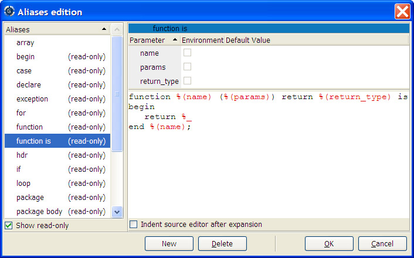
The alias editor is divided into three main parts: on the left side, the list of currently defined aliases is shown. Clicking on any of them will display the replacement text for this alias. If you click again the selected alias, GPS displays a text entry which you can use to rename an existing alias. Alias names must start with a letter. A check button at the bottom selects whether the read-only aliases (i.e. system-wide aliases) should be displayed.
The second part is the expansion text for the alias, at the bottom right corner. This replacement text can used multiple lines, and contain some special text that act as a special replacement. These special texts are highlighted in a different color. You can insert these special entities either by typing them, or by right-clicking in the editor, and select the entity in the contextual menu.
The following special entities are currently defined:
%_This is the position where the cursor should be put once the replacement text has been inserted in the editor.
%(name)This is the name of a parameter. name can be any string you want, excluding closing parenthesis. See below for more information on parameters.
%DThis is the current date, in ISO format. The year is displayed first, then the month and the day
%HThis is the current time (hour, minutes and seconds)
%lIf the expansion of the alias is done in a source editor, this is the line on which the cursor is when pressing control-o.
%cThis is similar to %l, except it returns the current column.
%fIf the expansion is done in a source editor, this is the name of the current file (its base name only, this doesn't include the directory)
%dIf the expansion is done in a source editor, this is the directory in which the current file is
%pIf the expansion is done in a source editor, this is the base name of the project file to which the file belongs.
%PIf the expansion is done in a source editor, this is the full path name to the project file (directory and base name).
%OUsed for recursive aliases expansion. This special character will expand the text seen before it in the current alias, after replacement of the parameters and possibly other recursive expansions. This is similar to pressing control-o (or any key you have defined for alias expansion) in the expanded form of the alias.
%%Inserts a percent sign as part of the expanded text
You cannot expand an alias recursively when already expanding that alias. For instance, if the alias expansion for procedure contains procedure%O, the inner procedure will not be expanded.
The indentation as set in the expansion of the alias is preserved when
the alias is expanded. All the lines will be indented the same amount
to the right as the alias name. You can override this default behavior
by selecting the check button Indent source editor after expansion.
In this case, GPS will replace the name of the alias by its expansion,
and then automatically recompute the position of each line with its
internal indentation engine, as if the text had been inserted manually.
The third part of the aliases editor, at the top right corner, lists the parameters for the currently selected alias. Any time you insert a %(name) string in the expansion text, GPS automatically detects there is a new parameter reference (or an old reference has changed name or was removed); the list of parameters is automatically updated to show the current list.
Each parameters has three attributes:
This is the name you use in the expansion text of the alias in the %(name) special entity.
This specifies whether the default value of the parameter comes from the list of environment variables set before GPS was started.
Instead of getting the default value from the environment variable, you can also specify a fixed text. Clicking on the initial value of the currently selected variable opens a text entry which you can use to edit this default value.
When an alias that contains parameters is expanded, GPS will first display a dialog to ask for the value of the parameters. You can interactively enter this value, which replaces all the %(name) entities in the expansion text.
| [ < ] | [ > ] | [ << ] | [ Up ] | [ >> ] | [Top] | [Contents] | [Index] | [ ? ] |
The customization files described earlier can also contain aliases definition. This can be used for instance to create project or system wide aliases. All the customization files will be parsed to look for aliases definition.
All these customization files are considered as read-only by GPS, and therefore cannot be edited through the graphical interface. It is possible to override some of the aliases in your own custom files.
There is one specific files, which must contain only aliases definition. This is the file `$HOME/.gps/aliases'. Whenever you edit aliases graphically, or create new ones, they are stored in this file, which is the only one that GPS will ever modify automatically.
The system files are loaded first, and aliases defined there can be overridden by the user-defined file.
These files are standard XML customization files. The specific XML tag to use is <alias>, one per new alias. The following example contains a standalone customization file, but you might wish to merge the <alias> tag in any other customization file.
The following tags are available:
aliasThis indicates the start of a new alias. It has one mandatory
attribute, name, which the text to type in the source editor
before pressing control-o.
It has one optional attribute, indent, which, if set to true,
indicate that GPS should recompute the indentation of the newly inserted
paragraph after the expansion.
paramThese are children of the alias node. There is one per
parameter of the alias. They have one mandatory attribute,
name, which is the name to type between %(name) in the
alias expansion text.
They have one optional attribute, environment, which indicates
the default value must be read from the environment variables if it is
set to true.
These tags contain text, which is the default value for the parameter.
textThis is a child of the alias node, whose value is the
replacement text for the alias.
Here is an example of an alias file:
<?xml version="1.0"?>
<Aliases>
<alias name="proc" >
<param name="p" >Proc1</param>
<param environment="true" name="env" />
<text>procedure %(p) is
%(env)%_
end %(p);</text>
</alias>
</Aliases>
|
| [ < ] | [ > ] | [ << ] | [ Up ] | [ >> ] | [Top] | [Contents] | [Index] | [ ? ] |
The project files are required by GPS, and are used to store various pieces of information related to the current set of source files. This includes how to find the source files, how the files should be compiled, or manipulated through various tools,….
However, the default set of attributes that are usable in a project file is limited to the attributes needed by the tool packaged with GPS or GNAT.
If you are delivering your own tools, you might want to store similar information in the project files themselves, since these are a very convenient place to associate some specific settings with a given set of source files.
GPS lets manipulate the contents of projects through XML customization files and script commands. You can therefore add you own typed attributes into the projects, so that they are saved automatically when the user saves the project, and reloaded automatically the next time GPS is started.
| [ < ] | [ > ] | [ << ] | [ Up ] | [ >> ] | [Top] | [Contents] | [Index] | [ ? ] |
New project attributes can be declared in two ways: either using the advanced
XML tags below, or using the <tool> tag (see section Defining tool switches).
The customization files support the <project_attribute> tag,
which is used to declare all the new attributes that GPS should expect
in a project. Attributes that have not been declared explictly will
not be accessible through the GPS scripting languagues, and will
generate warnings in the Messages window.
Project attributes are typed: they can either have a single value, or have a set of such values (a list). The values can in turn be a free-form string, a file name, a directory name, or a value extracted from a list of preset values.
Attributes that have been declared in these customization files will also be graphically editable through the project properties dialog, or the project wizard. Therefore, you should specify when an attribute is defined how it should be presented to the GPS user.
The <project_attribute> tag accepts the following attributes:
package (a string, default value: "")
This is the package in the project file in which the attribute is stored. Common practice suggests that one such package should be used for each tool. These packages provide namespaces, so that attributes with the same name, but for different tools, do not conflict with each other.
name (a string, mandatory)
This is the name of the attribute. This should be a string with no space, and that represents a valid Ada identifier (typically, it should start with a letter and be followed by a set of letters, digits or underscore characters). This is an internal name that is used when saving the attribute in a project file.
editor_page (a string, default value: "General")
This is the name of the page in the Project Properties editor dialog in which the attribute is presented. If no such page already exists, a new one will be created as needed. If the page already exists, the attribute will be appended at its bottom.
editor_section (a string, default value: "")
This is the name of the section, inside editor page, in which the
attribute is displayed. These sections are surrounded by frames, the
title of which is given by the editor_section attribute.
If this attribute is not specified, the attribute is put in an
untitled section.
label (a string, default value: the name of the attribute)
If this attribute is set to a value other than the empty string
"", a textual label is displayed to the left of the attribute
in the graphical editor. This should be used to identify the
attribute. However, it can be left to the empty string if the
attribute is in a named section of its own, since the title of the
section might be a good enough indication.
description (a string, default value: "")
This is the help message that describes the role of the attribute. It is displayed in a tooltip if the user leaves the mouse on top of the attribute for a while.
list (a boolean, default value: "false")
If this is set to "true", the project attribute will in fact
contains a list of values, as opposed to a single value. This is used
for instance for the list of source directories in standard projects.
ordered (a boolean, default value: "false")
This is only relevant if the project attribute contains a list of values. This indicates whether the order of the values is relevant. In most cases, it will not matter. However, for instance, the order of source directories matters, since this also indicates where the source files will be searched, stopping at the first match.
omit_if_default (a boolean, default value: "true")
This indicates whether the project attribute should be set explicitly
in the project if the user has left it to its default value. This can
be used to keep the project files a simple as possible, if all the
tools that will use this project attribute know about the default
value. If this isn't the case, set omit_if_default to "false"
to force the generation of the project attribute.
base_name_only (a boolean, default value: "false")
If the attribute contains a file name or a directory name, this indicates whether the full path should be stored, or only the base name. In most cases, the full path should be used. However, since GPS automatically looks for source files in the list of directories, for instance, the list of source files should only contain base names. This also increases the portability of project files.
case_sensitive_index (a boolean, default value: "false")
This XML attribute is only relevant for project attributes that are indexed on another one (see below for more information on indexed attributes). It indicates whether two indexes that differ only by their casing should be considered the same. For instance, if the index is the name of one of the languages supported by GPS, the index is case insensitive since "Ada" is the same as "C". However, if the index is the name of a file on Windows, the index is case-insensitive.
hide_in (a string, default value: "")
This XML attribute defines the various context in which this attribute should not be editable graphically. Currently, GPS provides two such contexts ("wizard" and "properties", corresponding to the project creation wizard and the project properties editor). If any of those context is specified in hide_in, then the widget to edit this attribute will not be shown. The goal is to keep the graphical interface simple.
disable_if_not_set (a boolean, default value: "false")
If this attribute is set to "true", the editor for this attribute will be greyed out if the attribute is not explicitly set in the project. In most cases, this is not needed, since the default value of the attribute can be used to leave the editor active at all time. However, when the value of the attribute is automatically computed depending on other attributes, the default value cannot be easily specified in the XML file, and in this case it might be easier to grey out the editor. An extra check box is displayed next to the attribute so that the user can choose to activate the editor and add the attribute to the project.
disable (a space-separated list of attribute names, default: "")
This is a list of attribute whose editor should be greyed out if the current
attribute is specified. This only works if both the current attribute and the
referenced attributes have their disable_if_not_set attribute set to "true".
This can be used to have mutually exclusive attributes present in the editor
| [ < ] | [ > ] | [ << ] | [ Up ] | [ >> ] | [Top] | [Contents] | [Index] | [ ? ] |
The type of the project attribute is specified through one or several
child tags of <project_attribute>. The following tags are
recognized.
<string>
This tag indicates that the attribute is made of one (or more if it is a list) strings. This tag accepts the following XML attributes:
default (a string, default value: "")
This gives the default value to be used for the string (and therefore the project attribute), in case the user hasn't overridden it.
If the attribute's type is a file or a directory, the default value will be
normalized (ie an absolute path will be generated from it, based on the
project's location, where "." will represent the project's directory).
As a special case, if default is surrounded by parenthesis, no normalization
takes place, so that you can later on test whether the user is still using
the default value or not).
A special case if when default is set to "project source files". In this
case, this is automatically replaced by the known list of source files for the
project. This doesn't work from the project wizard, since the list of source files
hasn't been computed at that stage.
type (one of "", "file", "directory", default "")
This indicates what the string represents. In the first case, any value can be used. In the second case, it should represent a file name, although no check is done to make sure the file actually exists on the disk. But GPS will be able to do some special marshalling with the file name. The third case indicates that GPS should expect a directory.
filter (one of "none", "project", "extending_project")
This attribute is ignored for all types except "file". In this case,
it further specifies what kind of files can be used in this attribute. If
the filter is "none", then any file anywhere on the system is valid.
If the filter is "project", then only files from the selected project
can be specified. If the filter is "extended_project", then only the
files from the project extended by the current project can be specified. The
attribute will not be shown if the current project is not an extending project.
<choice>
This tag can be repeated several times. It indicates one of the valid
values for the attribute, and can be used to provide a static list of
such values. If it is combined with a <string> tag, this
indicates that the attribute can be any string, although a set of
possible values is provided to the user for ease of use.
This tag accepts one optional attribute, "default", which is a
boolean. It indicates whether this value is the default to use for the
project attribute.
If several <choice> tags are used, it is possible that several
of them are part of the default value if the project attribute is a
list, as opposed to a single value.
<shell>
This tag is a GPS scripting command to execute to get a list of valid
values for the attribute. The command should return a list. As for the
<choice> tag, the <shell> tag can be combined with a
<string> tag to indicate that the list of values returned by
the scripting command is only a set of possible values, but that the
project attribute can in fact take any value.
The <shell> tag accepts two attributes:
lang (a string, default value: "shell")
The scripting language in which the command is written. Currently, the only other possible value is "python".
default (a string, default value: "")
The default value that the project attribute takes if the user hasn't overridden it.
In some cases, the type of the project attribute, or at least its
default value, depends on what the attribute applies to. The project
file support this in the form of indexed project attribute. This is
for instance used to specify what should be the name of the executable
generated when compiling each of the main files in the project (ie the
executable name for gps.adb should be gps.exe, the one
for main.c should be myapp.exe, and so on).
Such attributes can also be declared through XML files. In such cases,
the <project_attribute> tag should have one <index>
child, and zero or more <specialized_index> children.
Each of these two tags in turn take one of the already mentioned
<string>, <choice> or <shell> tag.
The <index> tag indicates what other project attribute is used
to index the current one. In the example given above for the
executable names, the index is the attribute that contains the list of
main files for the project.
It accepts the following XML attributes:
attribute (a string, mandatory)
The name of the other attribute. This other attribute must be declared elsewhere in the customization files, and must be a list of values, not a single value.
package (a string, default value: "")
The package in which the index project attribute is defined. This is used to uniquely identify homonym attributes.
The <specialized_index> is used to override the default type of
the attribute for specific values of the index. For instance, the
project files contains an attribute that specify what the name of the
compiler is for each language. It is indexed on the project attribute
that list the languages used for the source files of the project. Its
default value depends on the language ("gnatmake" for Ada, "gcc" for
C, and so on). This attribute accepts requires one XML attribute:
value (a string, mandatory)
This is the value of the attribute for which the type is overriden.
Note that almost all the standard project attributes are defined through an XML file, `projects.xml', which is part of the GPS installation. Check this file to get advanced examples on how to declare project attributes.
| [ < ] | [ > ] | [ << ] | [ Up ] | [ >> ] | [Top] | [Contents] | [Index] | [ ? ] |
The following example declares three attributes, with a single string as their value. This string represents a file or a directory in the last two cases. You can simply copy this into a `.xml' file in your `$HOME/.gps/plug-ins' directory, as usual.
<?xml version="1.0"?>
<custom>
<project_attribute
name="Single1"
package="Test"
editor_page="Tests single"
editor_section="Single"
description="Any string">
<string default="Default value" />
</project_attribute>
<project_attribute
name="File1"
package="Test"
editor_page="Tests single"
editor_section="Single"
description="Any file" >
<string type="file" default="/my/file" />
</project_attribute>
<project_attribute
name="Directory1"
package="Test"
editor_page="Tests single"
editor_section="Single"
description="Any directory" >
<string type="directory" default="/my/directory/" />
</project_attribute>
</custom>
|
The following example declares an attribute whose value is a
string. However, a list of predefined possible values is also
provided, as an help for interactive edition for the user. If the
<string> tag wasn't given, the attribute's value would have two
be one of the three possible choices.
<?xml version="1.0" ?>
<custom>
<project_attribute
name="Static2"
package="Test"
editor_page="Tests single"
editor_section="Single"
description="Choice from static list (or any string)" >
<choice>Choice1</choice>
<choice default="true" >Choice2</choice>
<choice>Choice3</choice>
<string />
</project_attribute>
</custom>
|
The following example declares an attribute whose value is one of the languages currently supported by GPS. Since this list of languages is only know when GPS is executed, a script command is used to query this list.
<?xml version="1.0" ?>
<custom>
<project_attribute
name="Dynamic1"
package="Test"
editor_page="Tests single"
editor_section="Single"
description="Choice from dynamic list" >
<shell default="C" >supported_languages</shell>
</project_attribute>
</custom>
|
The following example declares an attribute whose value is a set of file names. The order of files in this list matters to the tools that are using this project attribute.
<?xml version="1.0" ?>
<custom>
<project_attribute
name="File_List1"
package="Test"
editor_page="Tests list"
editor_section="Lists"
list="true"
ordered="true"
description="List of any file" >
<string type="file" default="Default file" />
</project_attribute>
</custom>
|
The following example declares an attribute whose value is a set of predefined possible values. By default, two such values are selected, unless the user overrides this default setting.
<?xml version="1.0" ?>
<custom>
<project_attribute
name="Static_List1"
package="Test"
editor_page="Tests list"
editor_section="Lists"
list="true"
description="Any set of values from a static list" >
<choice>Choice1</choice>
<choice default="true">Choice2</choice>
<choice default="true">Choice3</choice>
</project_attribute>
</custom>
|
The following example declares an attribute whose value is a string. However, the value is specific to each language (this could for instance be used for the name of the compiler to use for a given language). This is an indexed project attribute. It has two default values, one for Ada, one for C. All other languages have no default value.
<?xml version="1.0" ?>
<custom>
<project_attribute
name="Compiler_Name"
package="Test"
editor_page="Tests indexed"
editor_section="Single"
<index attribute="languages" package="">
<string default="" />
</index>
<specialized_index value="Ada" >
<string default="gnatmake" />
</specialized_index>
<specialized_index value="C" >
<string default="gcc" />
</specialized_index>
</project_attribute>
</custom>
|
| [ < ] | [ > ] | [ << ] | [ Up ] | [ >> ] | [Top] | [Contents] | [Index] | [ ? ] |
The new attributes that were defined are accessible from the GPS scripting languages, like all the standard attributes, see section Querying project switches.
You can for instance access the Compiler_Name attribute we created above with a python command similar to:
GPS.Project.root().get_attribute_as_string ("Compiler_Name", "Test", "Ada")
|
You can also access the list of main files for the project, for instance, by calling
GPS.Project.root().get_attribute_as_list ("main")
|
| [ < ] | [ > ] | [ << ] | [ Up ] | [ >> ] | [Top] | [Contents] | [Index] | [ ? ] |
A set of case exceptions can be declared in this file. Each case
exception is put inside the tag <word> or <substring>. These
exceptions are used by GPS to set identifiers or keywords case when
editing case insensitive languages (except if corresponding case is
set to Unchanged). see section The Preferences Dialog.
<?xml version="1.0" ?>
<exceptions>
<case_exceptions>
<word>GNAT</word>
<word>OS_Lib</word>
<substring>IO</substring>
</case_exceptions>
</exceptions>
|
| [ < ] | [ > ] | [ << ] | [ Up ] | [ >> ] | [Top] | [Contents] | [Index] | [ ? ] |
New documentation can be added in GPS in various ways. This is useful if you want to point to your own project documentation for instance.
The first possibility is to create a new menu, through a <menu> tag
in an XML file, associated with an action that either spawn an external
web browser or calls the internal GPS.Help.browse() shell command.
However, this will not show the documentation in the Help->Contents
menu, which you also might want to do.
To have both results, you should use the <documentation_file> tag
in an XML file. These tags are generally found in the `gps_index.xml'
files, as documented in see section Adding New Help Files, but you can in fact
add them in any of your customization files.
The documentation files you display can contain the usual type of html links. In addition, GPS will treat specially links starting with '%', and consider them as script commands to execute instead of file to display. The following example show how to insert a link that will in effect open a file in GPS when clicked by the user
<a href="%shell:Editor.editor g-os_lib.ads">Open runtime file</a> |
The first word after '%' is the name of the language, and the command to execute is found after the ':' character.
The <documentation_file> accepts a number of child nodes:
This is the name of the file. It can be either an absolute file name,
or a file name relative to one of the directories in GPS_DOC_PATH.
If this child is omitted, you must specify a <shell> child.
This name can contain a reference to a specific anchor in the html file, using the standard HTML syntax.
<name>file#anchor</name> |
This child specifies the name of a shell command to execute to get the
name of the HTML file. This command can for instance create the HTML file
dynamically, or download it locally using some special mechanism.
This child accepts one attribute, "lang", which is the name of the
language in which the command is written
This is the description for this help file. It appears in a tool tip for the menu item.
This is used in the Help->Contents menu to organize all the
documentation files.
This is the full path to the menu. It behaves like a UNIX path, except
it reference the various menus, starting from the menu bar itself. The
first character of this path must be "/". The last part of the
path is the name of the new menu item. If not set, no menu is
displayed for this file, although it will still appear in the
Help->Contents menu
The <menu> child tag accepts two attributes.
The name of the menu before which the new entry should be inserted. If the
new menu is inserted in some submenus, this tag controls the deeper nesting.
Parent menus are created as needed, but if you wish to control their specific
order, you should create them first with a <menu> tag.
The name of the menu after which the new entry should be inserted.
The following example shows how to create a new entry "item" in the Help
menu, that will display `file.html'. The latter is searched in the
GPS_DOC_PATH list of directories.
<?xml version="1.0"?>
<index>
<documentation_file>
<name>file.html</name>
<descr>Tooltip text</descr>
<category>name</category>
<menu>/Help/item</menu>
</documentation_file>
</index>
|
As mentioned above, HTML files are looked for through the GPS_DOC_PATH
environment variable. However, you can also use the <doc_path> XML
node to defined additional directories to be searched.
Such a directory is relative to the installation directory of GPS.
<?xml version="1.0"?> <GPS> <doc_path>doc/application/</doc_path> </GPS> |
will add the directory `<prefix>/doc/application' to the search path for the documentation.
Such a directory can also be added through Python, as in:
GPS.HTML.add_doc_directory ('doc/application')
|
| [ < ] | [ > ] | [ << ] | [ Up ] | [ >> ] | [Top] | [Contents] | [Index] | [ ? ] |
XML files can be used to define "stock icons". Stock icons are pictures that are identified by their label, and which are used through GPS in various places, such as buttons, menus, toolbars, and so on.
The stock icons must be declared using the tag <icon>, within the global
tag <stock>. The attribute id indicates the label used to identify
the stock icon, and the attribute file points to the file which contains
the actual picture, either in absolute format, or relative to the directory
which contains the XML file.
If the stock icon is to be used in a toolbar, use the attribute label to
specify the text to display in the toolbar, under the button, when the toolbar
is configured to show text.
For icons that are intended to be displayed at multiple sizes, you can specify
multiple files corresponding to these multiple sizes. This is done by adding
children to the main icon node, with the tag alternate, containing
a file attribute and a size attribute which correspond to the
size for which this alternate source should be used.
Possible sizes are:
1Menu item (ideal size: 16x16 pixels)
2Button in a small toolbar (ideal size: 18x18 pixels)
3Button in a large toolbar (ideal size: 24x24 pixels)
4Image for a standard button (ideal size: 20x20 pixels)
5Image used during drag-and-drop operation (ideal size: 32x32 pixels)
6Main image in a dialog (ideal size: 48x48 pixels)
Here is an example:
<?xml version="1.0"?>
<my_visual_preferences>
<stock>
<icon id="myproject-my-picture" file="icons/my-picture.png" />
<icon id="myproject-multipurpose-image"
label="do something"
file="icons/icon_default.png">
<alternate file"icons/icon_16.png" size="menu" />
<alternate file"icons/icon_24.png" size="large_toolbar" />
<alternate file"icons/icon_20.png" size="button" />
</icon>
</stock>
</my_visual_preferences>
|
Note: as shown in the example above, it is a good practice to prefix the label
by a unique name (e.g. myproject-), in order to make sure that
predefined stock icons will not get overridden by your icons.
| [ < ] | [ > ] | [ << ] | [ Up ] | [ >> ] | [Top] | [Contents] | [Index] | [ ? ] |
GPS has support for textual (as opposed to binary format like PDF) documentation format. A textual documentation format can be described using external template files. This way, it is possible to add support for new textual documentation format by providing a set of templates files.
The node name to define a new documentation format is docgen_backend.
The attributes for this node are:
name (string)The name of the documentation format (for example HTML).
format (string)The format is either text or binary. Only text is supported at the moment.
There are two categories of children. One is to describe the format
itself, the other is to specify the set of template to use. In the
latter case the children's name are ending with _template:
extensionThe extension to use for the generated files. This name is also used as part of the directory name under which the documentation is generated.
descriptionA description about the documentation format. GPS uses this description in the documentation selection dialog.
file_header_templatePoint to a template file used as header for each generated files.
file_footer_templatePoint to a template file used as footer for each generated files.
comment_templatePoint to a template file used to output comment strings.
keyword_templatePoint to a template file used to output keywords.
string_templatePoint to a template file used to output strings.
char_templatePoint to a template file used to output characters.
subtitle_templatePoint to a template file used to output a subtitle give its name, size and indentation level.
package_desc_templatePoint to a template file used to output package's description.
package_templatePoint to a template file used to output the package declaration or ending.
with_templatePoint to a template file used to output with clauses.
variable_templatePoint to a template file used to output variables declarations.
exception_templatePoint to a template file used to output exception declaration.
type_templatePoint to a template file used to output type declarations.
tagged_type_templatePoint to a template file used to output tagged types.
calls_references_templatePoint to a template file used to output subprograms calls.
caller_references_templatePoint to a template file used to output caller references.
entity_templatePoint to a template file used to output entity.
subprogram_templatePoint to a template file used to output subprograms.
header_templatePoint to a template file used to output the start a package description.
footer_templatePoint to a template file used to output the end of a package description.
private_header_templatePoint to a template file used to output the start of package's private section.
main_frame_templatePoint to a template file used to output the main file (the file `index.html' in the HTML backend for example).
unit_index_header_templatePoint to a template file used to output the units index header.
subprogram_index_header_templatePoint to a template file used to output the subprograms index header.
type_index_header_templatePoint to a template file used to output the types index header.
tagged_type_index_header_templatePoint to a template file used to output the tagged types index header.
item_index_templatePoint to a template file used to output an item index.
tagged_type_index_templatePoint to a template file used to output the tagged types index.
private_index_header_templatePoint to a template file used to output the private types index header.
public_index_header_templatePoint to a template file used to output the public types index header.
index_footer_templatePoint to a template file used to output the end of indexes.
block_templatePoint to a template file used to output block of text with a reference.
link_templatePoint to a template file used to output all cross references.
description_templatePoint to a template file used to output subprograms description based on comments found just below its spec.
All template files are given as relative path. GPS will first look for the
template file under share/gps/docgen and if not found it looks
under $HOME/.gps/docgen.
A template file is a file that contains tags and commands. Those files
are parsed by the Templates Parser module as found in
AWS. We give hereafter a short description of this format, for
a complete description see the Templates Parser User's Guide.
simple tagA simple tag is surrounded by @_ and _@ like in
@_NAME_@. The templates engine will replace @_NAME_@
with the value associated with the tag named NAME.
vector tagA vector tag contains a set of values. Each value will be used in
sequence if the tag appears inside a TABLE command tag.
For example, if the vector tag COLOR contains the three values Red, Green and Blue then:
@@TABLE@@ > @_COLOR_@ @@END_TABLE@@ |
Will be expanded as:
> Red > Green > Blue |
filterFilters can be added to any tag. For example it is possible to output
all values in upper case by applying the UPPER filter in the previous
example.
@@TABLE@@ > @_UPPER:COLOR_@ @@END_TABLE@@ |
Will be expanded as:
> RED > GREEN > BLUE |
It exists many filters, see the Template Parser User's Guide for a complete description.
Note that each HTML template files, provided with GPS, contains a complete description of the usage of each tag in the header comments.
| [ < ] | [ > ] | [ << ] | [ Up ] | [ >> ] | [Top] | [Contents] | [Index] | [ ? ] |
| 16.4.19.1 Defining a remote connection tool | ||
| 16.4.19.2 Defining a shell | ||
| 16.4.19.3 Configuring rsync usage | ||
| 16.4.19.4 Defining a remote server | ||
| 16.4.19.5 Defining a remote path translation |
The configuration of the remote programming functionality has two separate parts: the tools configuration (remote connection tools, shells, and rsync parameters) and the servers configuration.
The first part (see Defining a remote connection tool, Defining a shell and Configuring rsync usage) is handled by a pre-installed file in the plug-ins directory called `protocols.xml'.
The second part (see Defining a remote server and Defining a remote path translation), when configured via the user interface (see Setup the remote servers), will create a remote.xml file in the user's gps directory. System-wide servers can be also installed.
| [ < ] | [ > ] | [ << ] | [ Up ] | [ >> ] | [Top] | [Contents] | [Index] | [ ? ] |
Several remote access tools are already defined in GPS: ssh, rsh,
telnet and plink. It is possible to add other tools, using the node
remote_connection_config.
The attributes for this node are:
name (string) (mandatory)The name of the tool. This name does not necessarilly correspond to the command used to launch the tool.
The following children are defined:
start_command (mandatory)The command used to launch the tool.
This tag supports the use_pipes attribute. This attribute selects on
Windows the way GPS will launch the remote tools, and can take the following
values:
trueuse pipes to launch the tool.
false (default)use a tty emulation, which is a bit slower but allow password prompts retrieval with some tools.
Note that this argument has effects only on Windows platforms.
start_command_common_args (optional)The common arguments that are provided to the tool.
start_command_user_args (optional)The arguments used to define a specific user during connection.
user_prompt_ptrn (optional)A regular expression, used to catch user name prompts from the connection tool. If undefined, a default regular expression is used.
password_prompt_ptrn (optional)A regular expression, used to catch password prompts from the connection tool. If undefined, a default regular expression is used.
passphrase_prompt_ptrn (optional)A regular expression, used to catch passphrase prompts from the connection tool. If undefined, a default regular expression is used.
use_cr_lf (optional)Boolean value, used to tell GPS if the connection tool requires CR+LF characters to determine an end of line, or if LF is sufficient. Set to false by default.
extra_ptrn (optional)Complex child. Used to catch extra prompts from the connection tool,
other than password, passphrase or usename prompts. This tag has an
attribute auto_answer telling if GPS automatically answers to
this prompt, or ask the user. If auto_answer is true, then this
tag needs an answer child, whose value is used for the answer. If
auto_answer is false, then this tag needs a question child,
whose value is used as question to the end user.
| [ < ] | [ > ] | [ << ] | [ Up ] | [ >> ] | [Top] | [Contents] | [Index] | [ ? ] |
Several shells are already defined in GPS: sh, bash, csh, tcsh and
cmd.exe (Windows). It is possible to add other shells, using the node
remote_shell_config.
The attributes for this node are:
name (string) (mandatory)The name of the shell. This name does not necessarilly correspond to the command used to launch the shell.
The following children are defined:
start_command (mandatory)The command used to launch the shell. If arguments are required, they should be put here, separated with spaces.
generic_prompt (optional)The regular expression used to identify a prompt after the initial connection. If not set, a default value is used.
gps_prompt (mandatory)The regular expression used to identify a prompt after the initial setup is performed. If not set, a default value is used.
filesystem (mandatory)Takes the following values: unix or windows. This is the
filesystem used by the shell.
init_commands (optional)Complex child. Each cmd child contains a command used to
initialise a new session.
exit_commands (optional)Complex child. Each cmd child contains a command used to
exit a session.
cd_command (mandatory)Command used to go to a directory. %d is replaced by the
directory's full name.
get_status_command (mandatory)Command used to retrieve the status of the last command launched.
get_status_ptrn (mandatory)Regular expression used to retrieve the status returned by
get_status_command. A pair of parenthesis is required, and
identifies the status.
| [ < ] | [ > ] | [ << ] | [ Up ] | [ >> ] | [Top] | [Contents] | [Index] | [ ? ] |
GPS has native support for the rsync tool, for paths synchronization during remote programming operations.
By default, GPS will use -rsh=ssh option if ssh is the main connection tool for the concerned server. It will also define the -L switch when transfering files to a Windows local host.
It is possible to define additional arguments to rsync using the
rsync_configuration tag.
This tag accepts the child tagged arguments, and containing
additional arguments to pass to rsync.
| [ < ] | [ > ] | [ << ] | [ Up ] | [ >> ] | [Top] | [Contents] | [Index] | [ ? ] |
Remote servers can be defined via the user interface, as described in
Setup the remote servers. This user interface will create a
remote.xml file in the user's gps directory, which in turn can be
installed in any plug-ins directory to set the values
system-wide. This file will define for each server the node
remote_machine_descriptor.
The attributes for this node are:
nickname (mandatory)Identifies uniquely the server in GPS.
network_name (mandatory)The server's network name or IP address.
remote_access (mandatory)The tool's name used to access the server. Shall point to one of the tools defined in Defining a remote connection tool.
remote_shell (mandatory)The shell's name used to access the server. Shall point to one of the shells defined in Defining a shell.
remote_sync (mandatory)The remote file synchronisation tool used to synchronize files between
the local host and the server. Only rsync is recognized currently.
debug_console (optional)Can take the value True or False. Tells if a debug console
should be displayed during connection with a remote host. False by default.
The children for this node are:
extra_init_commands (optional)Complex child. Can contain cmd children whose values are used
to set server specific initialization commands.
max_nb_connections (optional)Positive number representing the maximum number of simultaneous connections GPS can launch.
timeout (optional)Positive number representing a timeout value (in ms) used for every action performed on the remote host.
| [ < ] | [ > ] | [ << ] | [ Up ] | [ >> ] | [Top] | [Contents] | [Index] | [ ? ] |
Remote path translation can also be defined via the user interface, as
described in Setup the remote servers. The remote paths
translation are defined with the node remote_path_config.
The attributes for this node are:
server_name (mandatory)The server name concerned by the paths translation.
The remote_path_config node contains mirror_path
children.
The attributes for the node mirror_path are:
local_path (mandatory)The absolute local path, expressed using the local filesystem standards.
remote_path (mandatory)The absolute remote path, expressed using the remote filesystem standards.
sync (mandatory)Specify the synchronization mechanism used for the paths
(see Paths settings). Possible values are
NEVER, ONCE_TO_LOCAL, ONCE_TO_REMOTE and ALWAYS.
| [ < ] | [ > ] | [ << ] | [ Up ] | [ >> ] | [Top] | [Contents] | [Index] | [ ? ] |
| 16.5.1 Defining supported languages | ||
| 16.5.2 Defining default command line | ||
| 16.5.3 Defining tool switches | ||
| 16.5.4 Executing external tools |
GPS has built-in support for external tools. This feature can be used to support a wide variety of tools (in particular, to specify different compilers). Regular enhancements are done in this area, so if you are planning to use the external tool support in GPS, check for the latest GPS version available.
Typically, the following things need to be achieved to successfully use a tool:
Each of these points is discussed in further sections. In all these cases, most
of the work can be done statically through XML customization files.
These files have the same format as other XML customization files
(see section Customizing through XML files), and the tool descriptions are found in
<tool> tags.
This tag accepts the following attributes:
name (mandatory)This is the name of the tool. This is purely descriptive, and will appear throughout the GPS interface whenever this tool is referenced. This includes for instances the tabs of the switches editor.
package (Default value is ide)This optional attribute specifies which package should be used in the project to store information about this tool, in particular its switches. Most of the time the default value should be used, unless you are working with one of the predefined packages.
See also See section Defining project attributes, for more information on defining your own project attributes. Using the "package", "attribute" or "index" XML attributes of <tool> will implicitly create new project attributes as needed.
If this attribute is set to "ide", then the switches cannot be set for a specific file, only at the project level. Support for file-specific switches currently requires modification of the GPS sources themselves.
attribute (Default value is default_switches)This optional attribute specifies the name of the attribute in the project which is used to store the switches for that tool.
index (Default value is the tool name)This optional attribute specifies what index is used in the project. This is mostly for internal use by GPS, and describes what index of the project attribute is used to store the switches for that tool.
This tag accepts the following children, described in separate sections:
<switches>(see section Defining tool switches)
<language>(see section Defining supported languages)
<initial-cmd-line>(see section Defining default command line)
| [ < ] | [ > ] | [ << ] | [ Up ] | [ >> ] | [Top] | [Contents] | [Index] | [ ? ] |
This is the language to which the tool applies. There can be from no to any
number of such nodes for one <tool> tag.
If no language is specified, the tool applies to all languages. In particular, the switches editor page will be displayed for all languages, no matter what languages they support.
If at least one language is specified, the switches editor page will only be displayed if that language is supported by the project.
<?xml version="1.0" ?>
<my_tool>
<tool name="My Tool" >
<language>Ada</language>
<language>C</language>
</tool>
</my_tool>
|
| [ < ] | [ > ] | [ << ] | [ Up ] | [ >> ] | [Top] | [Contents] | [Index] | [ ? ] |
It is possible to define the command line that should be used for a tool when the user is using the default project, or hasn't overridden this command line in the project.
This is done through the <initial-cmd-line> tag, as a child of the
<tool> tag. Its value is the command line that would be passed to the
tool. This command line is parsed as usual, e.g. quotes are taken into account
to avoid splitting switches each time a space is encountered.
<?xml version="1.0" ?>
<my_tool>
<tool name="My tool" >
<initial-cmd-line>-a -b -c</initial-cmd-line>
</tool>
</my_tool>
|
| [ < ] | [ > ] | [ << ] | [ Up ] | [ >> ] | [Top] | [Contents] | [Index] | [ ? ] |
The user has to be able to specify which switches to use with the tool. If the tool is simply called through custom menus, you might want to hard code some or all of the switches. However, in the general case it is better to use the project properties editor, so that project-specific switches can be specified.
This is what GPS does by default for Ada, C and C++. You can find in the GPS installation directory how the switches for these languages are defined in an XML file. These provide extended examples of the use of customization files.
The switches editor in the project properties editor provides a powerful interface to the command line, where the user can edit the command line both as text and through GUI widgets.
The switches are declared through the <switches> tag in the
customization file, which must be a child of a <tool> tag as described
above.
This <switches> tag accepts the following attributes:
lines (default value is 1)The switches in the project properties editor are organized into boxes, each surrounded by a frame, optionally with a title. This attribute specifies the number of rows of such frames.
columns (default value is 1)This attribute specifies the number of columns of frames in the project properties page.
separator (default value is "")This attribute specifies the default character that should go between a switch
and its value, to distinguishes cases like "-a 1", "-a1" and "-a=1". This can
be overridden separately for each switch. Note that if you want the separator
to be a space, you must use the value " " rather than " ",
since XML parser must normalize the latter to the empty string when reading
the XML file.
This <switches> tag can have any number of child tag, among the
following. They can be repeated multiple times if you need several check boxes.
For consistency, most of these child tags accept attributes among the
following:
line (default value is 1)This indicates the row of the frame that should contain the switch. See the
description of lines above.
column (default value is 1)This indicates the column of the frame that should contain the switch. See the
description of columns above.
label (mandatory)This is the label which is displayed in the graphical interface
switch (mandatory)This is the text that should be put on the command line if that switch is
selected. Depending on its type, a variant of the text might be put instead,
see the description of combo and spin below.
This switch shouldn't contain any space.
tip (default value is empty)This is the tooltip which describes that switch more extensively. It is displayed in a small popup window if the user leaves the mouse on top of the widget.
min (default value is 1)This attribute is used for <spin> tags, and indicates the minimum
value authorized for that switch.
max (default value is 1)This attribute is used for <spin> tags, and indicates the maximum
value authorized for that switch.
default (default value is 1)This attribute is used for <spin> tags. See the description below.
noswitch (default is empty)This attribute is only valid for <combo> tags, and described below.
nodigit (default is empty)This attribute is only valid for <combo> tags, and described below.
value (mandatory)This attribute is only valid for <combo-entry> tags.
separator (default is the value given to <switches>This attribute specifies the separator to use between the switch and its value.
See the description of this attribute for <switches>.
Here are the valid children for <switches>:
<title>This tag, which accepts the line and column attributes, is used
to give a name to a specific frame.
The value of the tag is the title itself. You do not have to specify
a name, and this can be left to an empty value.
Extra attributes for <title> are:
line-span (default value is 1)This indicates how many rows the frame should span. If this is set to 0, then the frame is hidden from the user. See for instance the Ada or C switches editor.
column-span (default value is 1)This indicates how many columns the frame should span. If this is set to 0, then the frame is hidden from the user. See for instance the Ada or C switches editor.
<check>This tag accepts the line, column, label, switch
and tip attributes. It creates a toggle button. When the latter is
active, the text defined in the switch attribute is added as is
to the command line. This tag doesn't have any value or child tags.
<spin>This tag accepts the line, column, label, switch,
tip, min, max, separator and default
attributes.
This switch will add the contents of the switch attribute followed by
the current numeric value of the widget to the command line. This is typically
used to indicate indentation length for instance.
If the current value of the widget is equal to the default attribute,
then nothing is added to the command line.
<radio>This tag accepts the line and column attributes. It groups any
number of children, each of which is associated with its own switch. However,
only one of the children can be selected at any given time.
The children must have the tag radio-entry. This tag accepts the
attributes label, switch and tip. As a special case,
the switch attribute can have an empty value ("") to indicate this is the
default switch to use in this group of radio buttons.
<field>This tag accepts the line, column, label, switch,
separator and tip attributes. This tag describes a text edition
field, which can
contain any text the user types. This text will be prefixed by the value of
the switch attribute, and the separator (by default nothing). If no text
is entered in the field
by the user, nothing is put on the command line.
This tag accepts two extra attributes:
as-directory (optional)If this attribute is specified and set to "true", then an extra "Browse" button is displayed, so that the user can easily select a directory.
as-file (optional) This attribute is similar to as-directory, but opens a dialog to
select a file instead of a directory. If both attributes are set to "true",
the user will select a file.
<combo>This tags accepts the line, column, label, switch,
tip, noswitch, separator and nodigit attributes.
The text inserted in the command line is the text from the switch
attribute, concatenated with the text of the value attribute for the
currently selected entry. If the value of the current entry is the same
as that of the nodigit attribute, then only the text of the
switch attribute is put on the command line. This is in fact necessary
to interpret the gcc switch "-O" as "-O1".
If the value of the current entry is that of the noswitch attribute,
then nothing is put in the command line.
The tag <combo> accepts any number of combo-entry children tags,
each of which accepts the label and value attribute.
<popup>This tag accepts the line, column, label, lines
and columns attributes. This displays a simply button that, when
clicked, displays a dialog with some extra switches. This dialog, just as the
switches editor itself, is organizes into lines and columns of frames, the
number of which is provided by the lines and columns attributes.
This tag accepts any number of children, which are the same as the
<switches> attribute itself.
<dependency>This tag is used to describe a relationship between two switches. It is used for instance when the "Debug Information" switch is selected for "Make", which forces it for the Ada compiler as well.
It has its own set of attributes:
master-page master-switch These two attributes define the switch that possibly forces a specific
setting on the slave switch. In our example, they would have the values
"Make" and "-g".
The switch referenced by these attributes must be of type <check>
or <field>. If the check button is selected, it forces the
selection of the slave check button. Likewise, if the field is set to
any value, it forces the selection of the slave.
slave-page slave-switch These two attributes define the switch which is acted upon by the master
switch. In our example, they would have the values "Ada" and "-g".
The switch referenced by these attributes must be of type <check>.
master-status slave-statusThese two switches indicate which state of the master switch forces which state of the slave-status. In our example, they would have the values "on" and "on", so that when the make debug information is activated, the compiler debug information is also activated. However, if the make debug information is not activated, no specific setup is forced for the compiler debug information. if master-status is "off" and the master switch is a field, then the status of the slave will be changed when no value is set in the field.
<expansion>This tag is used to describe how switches can be grouped together on the command line to keep it shorter. It is also used to define aliases between switches.
It is easier to explain it through an example. Specifying the GNAT switch "-gnaty" is equivalent to specifying "-gnatyabcefhiklmnprst". This is in fact a style check switch, with a number of default values. But it is also equivalent to decomposing it into several switches, as in "-gnatya", "-gnatyb",… With this information, GPS will try to keep the command line length as short as possible, to keep it readable.
Both these aspects are defined in a unique <expansion> tag, which
accepts two attributes: switch is mandatory, and alias is
optional. Alias contains the text "-gnatyabcefhiklmnprst" in our example.
It also accepts any number of <entry> children, each has a mandatory
switch access. The set of all these children define the expanded
equivalent of the switch. In our example, we need one <entry> child
for "-gnatya", one for "-gnatyb",….
The exact algorithm used by GPS is the following:
switch attribute that matches exactly, then it is replaced
by all the switches given in the <entry> children).
If we have
<expansion switch="-gnatwa">
<entry switch="-gnatwc" />
<entry switch="-gnatwd" />
</expansion>
then any occurrence of "-gnatwa" on the command line is expanded to
"-gnatwc -gnatwd"
|
switch attribute of an <expansion> node,
then it is grouped with all other similar switches.
if the XML file contains <expansion switch="-gnatw" /> then the command line "-gnatwc -gnatt -gnatwd" is transformed into "-gnatwcd -gnatt", grouping the switches that start with "-gnatw". |
alias attributes of the <expansion> nodes, and
replaced appropriately.
if the XML file contains <expansion switch="-gnatwa" alias="-gnatwcd" /> then the command line generated at the second step is further transformed into "-gnatwa -gnatt". |
This rather complex mechanism allows one to either use the various buttons and GUI widgets to edit the switches, or to manually edit the command line.
| [ < ] | [ > ] | [ << ] | [ Up ] | [ >> ] | [Top] | [Contents] | [Index] | [ ? ] |
The user has now specified the default switches he wants to use for the external tool. Spawning the external tool can be done either from a menu item, or as a result of a key press.
Both cases are described in an XML customization file, as described previously,
and both are setup to execute what GPS calls an action, i.e. a set of commands
defined by the <action> tag.
| [ < ] | [ > ] | [ << ] | [ Up ] | [ >> ] | [Top] | [Contents] | [Index] | [ ? ] |
This action tag, as described previously, executes one or more commands, which can either be internal GPS commands (written in any of the scripting language supported by GPS), or external commands provided by executables found on the PATH.
The command line for each of these commands can either be hard-coded in the
customization file, or be the result of previous commands executed as part of
the same action. As GPS executes each command from the action in turn, it
saves its output on a stack as needed. If a command line contains a special
construct %1, %2… then these constructs will be replaced
by the result of respectively the last command executed, the previous from last
command, and so on. They are replaced by the returned value of the command, not
by any output it might have done to some of the consoles in GPS.
Every time you execute a new command, it pushes the previous %1, %2… parameters one step further on the stack, so that they become respectively %2, %3… and the output of that command becomes %1.
The result value of the previous commands is substituted exactly as is. However, if the output is surrounded by quotes, they are ignored when a substitution takes place, so you need to put them back if they are needed. The reason for this behavior is so that for scripting languages that systematically protect their output with quotes (simple or double), these quotes are sometimes in the way when calling external commands.
<?xml version="1.0" ?>
<quotes>
<action name="test quotes">
<shell lang="python">'-a -b -c'</shell>
<external> echo with quotes: "%1"</external>
<external> echo without quotes: %2</external/>
</action>
</quotes>
|
If one of the commands in the action raises an error, the execution of the action is stopped immediately, and no further command is performed.
| [ < ] | [ > ] | [ << ] | [ Up ] | [ >> ] | [Top] | [Contents] | [Index] | [ ? ] |
Before launching the external tool, you might want to force GPS to save all
open files, the project…. This is done using the same command GPS itself
uses before starting a compilation. This command is called MDI.save_all,
and takes one optional boolean argument which specifies whether an interactive
dialog should be displayed for the user.
Since this command aborts when the user presses cancel, you can
simply put it in its own <shell> command, as in:
<?xml version="1.0" ?>
<save_children>
<action name="test save children">
<shell>MDI.save_all 0</shell>
<external>echo Run unless Cancel was pressed</external>
</action>
</save_children>
|
| [ < ] | [ > ] | [ << ] | [ Up ] | [ >> ] | [Top] | [Contents] | [Index] | [ ? ] |
Some GPS shell commands can be used to query the default switches set by the
user in the project file. These are get_tool_switches_as_string,
get_tool_switches_as_list, or, more generally,
get_attribute_as_string and get_attribute_as_list. The first
two require a unique parameter which is the name of the tool as specified in
the <tool> tag. This name is case-sensitive. The last two commands are
more general and can be used to query the status of any attribute from the
project. See their description by typing the following in the GPS shell
console window:
help Project.get_attribute_as_string help Project.get_attribute_as_list |
The following is a short example on how to query the switches for the tool
"Find" from the project, See section Tool example. It first creates an object
representing the current project, then passes this object as the first
argument of the get_tool_switches_as_string command. The last external
command is a simple output of these switches
<?xml version="1.0" ?>
<find_switches>
<action name="Get switches for Find">
<shell>Project %p</shell>
<shell>Project.get_tool_switches_as_string %1 Find </shell>
<external>echo %1</external>
</action>
</find_switches>
|
The following example shows how something similar can be done from Python, in a simpler manner. For a change, this function queries the Ada compiler switches for the current project, and prints them out in the messages window. The
<?xml version="1.0" ?>
<query_switches>
<action name="Query compiler switches">
<shell lang="python">GPS.Project("%p").get_attribute_as_list
(package="compiler",
attribute="default_switches",
index="ada")</shell>
<external>echo compiler switches= %1</external>
</action>
</query_switches>
|
| [ < ] | [ > ] | [ << ] | [ Up ] | [ >> ] | [Top] | [Contents] | [Index] | [ ? ] |
Another solution to query the arguments for the tool is to ask the user interactively. The scripting languages provides a number of solutions for these.
They generally have their own native way to read input, possibly by creating a dialog.
In addition, the simplest solution is to use the predefined GPS commands for this. These are the two functions:
yes_no_dialogThis function takes a single argument, which is a question to display. Two buttons are then available to the user, "Yes" and "No". The result of this function is the button the user has selected, as a boolean value.
input_dialogThis function is more general. It takes a minimum of two arguments, with no upper limit. The first argument is a message describing what input is expected from the user. The second, third and following arguments each correspond to an entry line in the dialog, to query one specific value (as a string). The result of this function is a list of strings, each corresponding to these arguments.
From the GPS shell, it is only convenient to query one value at a time, since it doesn't have support for lists, and would return a concatenation of the values. However, this function is especially useful with other scripting languages.
The following is a short example that queries the name of a directory and a file name, and displays each in the Messages window.
<?xml version="1.0" ?>
<query_file>
<action name="query file and dir">
<shell lang="python">list=GPS.MDI.input_dialog \
("Please enter directory and file name", "Directory", "File")</shell>
<shell lang="python">print ("Dir=" + list[0], "File=" + list[1])</shell>
</shell>
</action>
</query_file>
|
| [ < ] | [ > ] | [ << ] | [ Up ] | [ >> ] | [Top] | [Contents] | [Index] | [ ? ] |
The output of external commands is send by default to the GPS console window.
In addition, finer control can be exercised using the output attribute
of the <external> and <shell> tags.
This attribute is a string that may take any value. Two values have specific meanings:
"none"The output of the command, as well as the text of the command itself, will not be shown to the user at all.
""The output of the command is sent to the GPS console window, entitled "Messages".
other valuesA new window is created, with the title given by the attribute. If such a window already exists, it is cleared up before any of the command in the chain is executed. The output of the command, as well as the text of the command itself, are sent to this new window.
This attribute can also be specified at the <action> tag level, in which
case it defines the default value for all <shell> and <external>
tags underneath. If it isn't specified for the action itself, its default value
will always be the empty string, i.e. output is sent to the GPS console.
<?xml version="1.0" ?>
<ls>
<action name="ls current directory" output="default output" >
<shell output="Current directory" >pwd</shell>
<external output="Current directory contents" >/bin/ls</external>
</action>
</ls>
|
| [ < ] | [ > ] | [ << ] | [ Up ] | [ >> ] | [Top] | [Contents] | [Index] | [ ? ] |
The output of the tool has now either been hidden or made visible to the user in one or more windows.
There are several additional things that can be done with this output, for further integration of the tool in GPS.
External tools can usually display error messages for the user that
are associated with specific files and locations in these files. This is for
instance the way the GPS builder itself analyzes the output of make.
This can be done for your own tools using the shell command
Locations.parse. This command takes several arguments, so that you
can specify your own regular expression to find the file name, line number and
so on in the error message. By default, it is configured to work
seamlessly with error message of the forms:
file:line: message file:line:column: message |
Please refer to the online help for this command to get more information
(by e.g. typing help Locations.parse in the GPS Shell).
Here is a small example on how to run a make command and send the errors to the location window afterward.
For languages that support it, it is also recommended that you quote the argument with triple quotes, so that any special character (newlines, quotes, …) in the output of the tool are not specially interpreted by GPS. Note also that you should leave a space at the end, in case the output itself ends with a quote.
<?xml version="1.0" ?>
<make>
<action name="make example" >
<external>make</external>
<on-failure>
<shell>Locations.parse """%1 """ make_example</shell>
</on-failure>
</action>
</make>
|
GPS has support for automatically correcting errors for some of the languages.
You can get access to this auto-fixing feature through the Codefix.parse
shell command, which takes the same arguments as for Locations.parse.
This will automatically add pixmaps to the relevant entries in the location
window, and therefore Locations.parse should be called first prior to
calling this command.
Errors can also be fixed automatically by calling the methods of the
Codefix class. Several codefix sessions can be active at the same time,
each of which is associated with a specific category. The list of currently
active sessions can be retrieved through the Codefix.sessions() command.
If support for python is enabled, you can also manipulate the fixable errors
for a given session.
To do so, you must first get a handle on that section, as shown in the example
below. You can then get the list of fixable errors through the errors
command.
Each error is of the class CodefixError, which has one important
method fix which allows you to perform an automatic fixing for that
error. The list of possible fixes is retrieved through possible_fixes.
print GPS.Codefix.sessions ()
session = GPS.Codefix ("category")
errors = session.errors ()
print errors [0].possible_fixes ()
errors [0].fix ()
|
| [ < ] | [ > ] | [ << ] | [ Up ] | [ >> ] | [Top] | [Contents] | [Index] | [ ? ] |
| 16.6.1 Menu example | ||
| 16.6.2 Tool example |
| [ < ] | [ > ] | [ << ] | [ Up ] | [ >> ] | [Top] | [Contents] | [Index] | [ ? ] |
This section provides a full example of a customization file.
It creates a top-level menu named custom menu.
This menu contains a menu item named item 1, which is associated to the
external command external-command 1, a sub menu named other menu,
etc…
<?xml version="1.0"?>
<menu-example>
<action name="action1">
<external>external-command 1</external>
</action>
<action name="action2">
<shell>edit %f</shell>
</action>
<submenu>
<title>custom menu</title>
<menu action="action1">
<title>item 1</title>
</menu>
<submenu>
<title>other menu</title>
<menu action="action2">
<title>item 2</title>
</menu>
</submenu>
</submenu>
</menu-example>
|
| [ < ] | [ > ] | [ << ] | [ Up ] | [ >> ] | [Top] | [Contents] | [Index] | [ ? ] |
This section provides an example that defines a new tool. This is only a short example, since Ada, C and C++ support themselves are provided through such a file, available in the GPS installation.
This example adds support for the "find" Unix utility, with a few switches. All these switches are editable through the project properties editor.
It also adds a new action and menu. The action associated with this menu gets the default switches from the currently selected project, and then ask the user interactively for the name of the file to search.
<?xml version="1.0" ?>
<toolexample>
<tool name="Find" >
<switches columns="2" >
<title column="1" >Filters</title>
<title column="2" >Actions</title>
<spin label="Modified less than n days ago" switch="-mtime-"
min="0" max="365" default="0" />
<check label="Follow symbolic links" switch="-follow" />
<check label="Print matching files" switch="-print" column="2" />
</switches>
</tool>
<action name="action find">
<shell>Project %p</shell>
<shell>Project.get_tool_switches_as_string %1 Find </shell>
<shell>MDI.input_dialog "Name of file to search" Filename</shell>
<external>find . -name %1 %2</external>
</action>
<Submenu>
<Title>External</Title>
<menu action="action find">
<Title>Launch find</Title>
</menu>
</Submenu>
</toolexample>
|
| [ < ] | [ > ] | [ << ] | [ Up ] | [ >> ] | [Top] | [Contents] | [Index] | [ ? ] |
| 16.7.1 Scripts | ||
| 16.7.2 Scripts and GPS actions | ||
| 16.7.3 The GPS Shell | ||
| 16.7.4 The Python Interpreter | ||
| 16.7.6 Subprogram parameters | ||
| 16.7.7 Python FAQ | ||
| 16.7.8 Hooks |
| [ < ] | [ > ] | [ << ] | [ Up ] | [ >> ] | [Top] | [Contents] | [Index] | [ ? ] |
Scripts are small programs that interact with GPS and allow you to perform complex tasks repetitively and easily. GPS includes support for two scripting languages currently, although additional languages might be added in the future. These two languages are described in the following section.
Support for scripting is currently work in progress in GPS. As a result, not many commands are currently exported by GPS, although their number is increasing daily. These commands are similar to what is available to people who extend GPS directly in Ada, but with a strong advantage: they do not require any recompilation of the GPS core, and can be tested and executed interactively.
The goal of such scripts is to be able to help automate processes such as builds, automatic generation of graphs,…
These languages all have a separate console associated with them,
which you can open from the Tools menu. In each of these
console, GPS will display a prompt, at which you can type interactive
commands. These console provide completion of the command names
through the tab key.
For instance, in the GPS shell console you can start typing
GPS> File |
then press the tab key, which will list all the functions whose name starts with "File".
A similar feature is available in the python console, which also provides completion for all the standard python commands and modules.
All the scripting languages share the same set of commands exported by GPS, thanks to a abstract interface defined in the GPS core. As a result, GPS modules do not have to be modified when new scripting languages are added.
Scripts can be executed immediately upon startup of GPS by using the
command line switch --load. Specifying the following command
line:
gps --load=shell:mytest.gps |
will force the gps script `mytest.gps' to be executed immediately, before GPS starts reacting to user's requests. This is useful if you want to do some special initializations of the environment. It can also be used as a command line interface to GPS, if you script's last command is to exit GPS.
In-line commands can also be given directly on the command line through
--eval command line switch.
For instance, if you want to analyze an entity in the entity browser from the command line, you would pass the following command switches:
gps --eval=shell:'Entity entity_name file_name; Entity.show %1' |
See the section Customizing through XML files on how to bind key shortcuts to shell commands.
| [ < ] | [ > ] | [ << ] | [ Up ] | [ >> ] | [Top] | [Contents] | [Index] | [ ? ] |
There is a strong relationship between GPS actions, as defined in the customization files (see section Defining Actions), and scripting languages
Actions can be bound to menus and keys through the customization files or
the Edit->Key shortcuts dialog.
These actions can execute any script command, See section Defining Actions. This is
done through the <shell> XML tag.
But the opposite is also true. From a script, you can execute any action registered in GPS. This can for instance be used to split windows, highlight lines in the editor,… when no equivalent shell function exists. This can also be used to execute external commands, if the scripting language doesn't support this in an easy manner.
Such calls are made through a call to execute_action, as in the
following example:
execute_action "Split horizontally" |
GPS.execute_action (action="Split horizontally") |
The list of actions known to GPS can be found through the
Edit->Key shortcuts dialog. Action names are case sensitive.
Some of the shell commands take subprograms as parameters. If you are using the GPS shell, this means you have to pass the name of a GPS action. If you are using Python, this means that you pass a subprogram, See section Subprogram parameters.
| [ < ] | [ > ] | [ << ] | [ Up ] | [ >> ] | [Top] | [Contents] | [Index] | [ ? ] |
The GPS shell is a very simple-minded, line-oriented language. It is
accessible through the Shell window at the bottom of the GPS
window. It is similar to a Unix shell, or a command window on Windows
systems.
Type help at the prompt to get the list of available commands,
or help followed by the name of a command to get more
information on that specific command.
The following example shows how to get some information on a source entity, and find all references to this entity in the application. It searches for the entity "entity_name", which has at least one reference anywhere in the file "file_name.adb". After the first command, GPS returns an identifier for this entity, which can be used for all commands that need an entity as a parameter, as is the case for the second command. When run, the second command will automatically display all matching references in the location window.
GPS> Entity my_entity file_name.adb <Entity_0x09055790> GPS> Entity.find_all_refs <Entity_0x09055790> |
Since the GPS shell is very simple, it doesn't provide any reference
counting for the result types. As a result, all the values returned by
a command, such as <Entity_0x09055790> in the example above,
are kept in memory.
The GPS shell provides the command clear_cache which removes
all such values from the memory. After this command is run, you can no
longer use references obtained from previous commands, although of
course you can run these commands again to get a new reference.
The return value of the 9 previous commands can easily be recalled by
passing %1, %2,… on the command line. For instance,
the previous example could be rewritten as
GPS> Entity my_entity file_name.adb <Entity_0x09055790> GPS> Entity.find_all_refs %1 |
These return values will be modified also for internal commands sent
by GPS, so you should really only use this when you emit multiple
commands at the same time, and don't do any other action in GPS. This
is mostly useful when used for command-line scripts (see --eval
and --load), or for custom files, See section Customizing through XML files.
Arguments to commands can, but need not, be quoted. If they don't contain any space, double-quote ('"') or newline characters, you do not need to quote them. Otherwise, you should surround them with double-quotes, and protect any double-quote part of the argument by preceding it with a backslash.
There is another way to quote a command: use three double-quotes characters in a row. Any character loses its special meaning until the next three double-quotes characters set. This is useful if you do not know in advance the contents of the string you are quoting.
Locations.parse """%1 """ category_name |
| [ < ] | [ > ] | [ << ] | [ Up ] | [ >> ] | [Top] | [Contents] | [Index] | [ ? ] |
Python is an interpreted object-oriented language, created by Guido Van Rossum. It is similar in its capabilities to languages such as Perl, Tcl or Lisp. This section is not a tutorial on python programming. See http://www.python.org/doc/current/ to access the documentation for the current version of python.
If python support has been enabled, the python shell is accessible through the
Python window at the bottom of the GPS window. You can also
display it by using the menu `Tools->Consoles->Python'.
You can type help(GPS) in the python console to see the list of
functions exported by GPS to python. If you want to save the output of
this (or any) command to a file, you can do:
>>> e=file("/tmp/gps-help.txt", "w")
>>> sys.stdout=e
>>> help(GPS)
>>> e.flush()
>>> sys.stdout=sys.__stdout__
|
The same example that was used to show the GPS shell follows, now using python. As you can notice, the name of the commands is similar, although they are not run exactly in the same way. Specifically, GPS benefits from the object-oriented aspects of python to create classes and instances of these classes.
In the first line, a new instance of the class Entity is created
through the create_entity function. Various methods can then be
applied to that instance, including find_all_refs, which lists
all references to that entity in the location window:
>>> e=GPS.Entity ("entity_name", "file_name.adb")
>>> e.find_all_refs()
|
The screen representation of the classes exported by GPS to python has been modified, so that most GPS functions will return an instance of a class, but still display their output in a user-readable manner.
Python has extensive introspection capabilities. Continuing the
previous example, you can find what class e is an instance of
with the following command:
>>> help(e) Help on instance of Entity: <GPS.Entity instance> |
It is also possible to find all attributes and methods that can be
applied to e, as in the following example:
>>> dir (e) ['__doc__', '__gps_data__', '__module__', 'called_by', 'calls', 'find_all_refs'] |
Note that the list of methods may vary depending on what modules were loaded in GPS, since each module can add its own methods to any class.
In addition, the list of all existing modules and objects currently known in the interpreter can be found with the following command:
>>> dir () ['GPS', 'GPSStdout', '__builtins__', '__doc__', '__name__', 'e', 'sys'] |
You can also load and execute python scripts with the execfile command,
as in the following example:
>>> execfile ("test.py")
|
Python supports named parameters. Most functions exported by GPS define names for their parameters, so that you can use this Python feature, and make your scripts more readable. A notable exception to this rule are the functions that take a variable number of parameters. Using named parameters allows you to specify the parameters in any order you wish, e.g:
>>> e=GPS.Entity (name="foo", file="file.adb") |
| [ < ] | [ > ] | [ << ] | [ Up ] | [ >> ] | [Top] | [Contents] | [Index] | [ ? ] |
On startup, GPS will automatically import (with python's import
command) all the files with the extension `.py' found in the directory
`$HOME/.gps/plug-ins', the directory `$prefix/share/gps/plug-ins'
or in the directories pointed to by
`GPS_CUSTOM_PATH'. These files are loaded only after all standard
GPS modules have been loaded, as well as the custom files, and before
the script file or batch commands specified on the command lines with
the --eval or --load switches.
As a result, one can use the usual GPS functions exported to python in these startup scripts. Likewise, the script run from the command line can use functions defined in the startup files.
Since the import command is used, the functions defined in this
modules will only be accessible by prefixing their name by the name of the
file in which they are defined. For instance if a file `mystartup.py'
is copied to the startup directory, and defines the function func,
then the latter will be accessible in GPS through mystartup.func.
Python's own mechanism for loading files at startup (the environment
variable PYTHONSTARTUP) is not suitable for use within the context
of GPS. When python is loaded by GPS, the GPS module itself is not yet
available, and thus any script that depends on that module will fail to
load correctly. Instead, copy your script to one of the plug-ins directories,
as documented above.
If you are writing a set of python scripts that other people will use, you need to provide several things:
<action> tag, exported to the user. This allows him
to either create menus to execute these commands or to bind them to special
key shortcuts
Alternatively, your python script can call the command GPS.parse_xml
to specify some inline XML tags to interpret. These tags can directly create
the new menus or key bindings associated with your command.
The following example defines a python command that inserts a line full of dashes ('-') at the current cursor location. This command is associated with the key binding control-c n, and can be distributed as a single XML file.
# This code can be stored in a file test.py in $HOME/.gps/plug-ins
from GPS import *
def add_dashes_line():
Editor.replace_text (current_context().file().name(),
current_context().location().line(),
current_context().location().column(),
"--------------------------------", 0, 0)
GPS.parse_xml ("""
<action name="dashes line">
<shell lang="python">test.add_dashes_line()</shell>
<context>Source editor</context>
</action>
<key action="dashes line">control-c n</key>
""")
|
Several complex examples are provided in the GPS distribution, in the directory `examples/python'. These are modules that you might want to use for your own GPS, but more important that will show how GPS can be extended from Python.
If your script doesn't do what you expect it to do, there are several ways to debug it, among which the easiest is probably to add some "print" statements. Since some output of the scripts is sometimes hidden by GPS (for instance for interactive commands), you might not see this output.
In this case, you can reuse the tracing facility embedded in GPS itself. Modify the file `$HOME/.gps/traces.cfg', and add the following line:
PYTHON.OUT=yes |
This will include the python traces as part of the general traces available in the file `$HOME/.gps/log'. Note that it may slow down GPS if there is a lot of output to process.
| [ < ] | [ > ] | [ << ] | [ Up ] | [ >> ] | [Top] | [Contents] | [Index] | [ ? ] |
A few of the functions exported by GPS in the GPS shell or in python expect a subprogram as a parameter.
This is handled in different ways depending on what language your are using:
It isn't possible to define new functions in the GPS shell. However, this concept is similar to the GPS actions (see section Defining Actions), which allow you to execute a set of commands and launch external processes.
Therefore, a subprogram parameter in the GPS shell is a string, which is the name of the action to execute.
For instance, the following code defines the action "on_edition", which is called every time a new file is edited. The action is defined in the shell itself, although this could be more conveniently done in a separate customization file.
parse_xml """<action name="on_edition">
<shell>echo "File edited"</shell></action>"""
Hook "file_edited"
Hook.add %1 "on_edition"
|
Python of course has its own notion of subprogram, and GPS is fully compatible with it. As a result, the syntax is much more natural than in the GPS shell. The following example has the same result as above:
import GPS
def on_edition(self, *arg):
print "File edited"
GPS.Hook ("file_edited").add (on_edition)
|
Things are in fact slightly more complex if you want to pass methods are arguments. Python has basically three notions of callable subprograms, detailed below. The following examples all create a combo box in the toolbar, which calls a subprogram whenever its value is changed. The documentation for the combo box indicates that the callback in this case takes two parameters:
The first parameter is the instance of the combo box associated with the toolbar widget, and, as always in python, you can store your own data in the instance, as shown in the examples below.
Here is the description of the various subprograms:
These are standard subprograms, found outside class definitions. There is no implicit parameter in this case. However, if you need to pass data to such a subprogram, you need to use global variables
import GPS
my_var = "global data"
def on_changed (combo, choice):
global my_var
print "on_changed called: " + \
my_var + " " + combo.data + " " + choice
combo = GPS.Combo \
("name", label="name", on_changed=on_changed)
GPS.Toolbar().append (combo)
combo.data = "My own data"
|
These are methods of a class. You do not specify, when you pass the method in parameter to the combo box, what instance should be passed as its first parameter. Therefore, there is no extra parameter either.
Note however than whatever class the method is defined in, the first parameter is always an instance of the class documented in the GPS documentation (in this case a GPS.Combo instance), not an instance of the current class.
In this first example, since we do not have access to the instance of MyClass, we also need to store the global data as a class component. This is a problem if multiple instances of the class can be created.
import GPS
class MyClass:
my_var = "global data"
def __init__ (self):
self.combo = GPS.Combo \
("name", label="name", on_changed=MyClass.on_changed)
GPS.Toolbar().append (self.combo)
self.combo.data = "My own data"
def on_changed (combo, choice):
## No direct access to the instance of MyClass.
print "on_changed called: " + \
MyClass.my_var + " " + combo.data + " " + choice
MyClass()
|
As the example above explains, there is no direct access to MyClass when executing on_changed. An easy workaround is the following, in which the global data can be stored in the instance of MyClass, and thus be different for each instance of MyClass.
import GPS
class MyClass:
def __init__ (self):
self.combo = GPS.Combo \
("name", label="name", on_changed=MyClass.on_changed)
GPS.Toolbar().append (self.combo)
self.combo.data = "My own data"
self.combo.myclass = self ## Save the instance
self.my_var = "global data"
def on_changed (combo, choice):
print "on_changed called: " + \
combo.myclass.my_var + " " + combo.data + " " + choice
MyClass()
|
The last example works as expected, but is not convenient to use. The solution here is to use a bound method, which is a method for a specific instance of a class. Such a method always has an extra first parameter, set implicitly by Python or GPS, which is the instance of the class the method is defined in.
Notice the way we pass the method in parameter to append(), and the extra third argument to on_changed in the example below.
import GPS
class MyClass:
def __init__ (self):
self.combo = GPS.Combo \
("name", label="name", on_changed=self.on_changed)
GPS.Toolbar().append (self.combo)
self.combo.data = "My own data"
self.my_var = "global data"
def on_changed (self, combo, choice):
# self is the instance of MyClass specified in call to append()
print "on_changed called: " + \
self.my_var + " " + combo.data + " " + choice
MyClass()
|
| [ < ] | [ > ] | [ << ] | [ Up ] | [ >> ] | [Top] | [Contents] | [Index] | [ ? ] |
This section lists some of the problems that have been encountered while using Python inside GPS. This is not a general Python discussion.
| [ < ] | [ > ] | [ << ] | [ Up ] | [ >> ] | [Top] | [Contents] | [Index] | [ ? ] |
There exist various solutions to spawn external processes from a script:
GPS.Process class
GPS.execute_action.
This action should have an <external> XML node indicating how to
launch the process
os.popen() calls
This solution doesn't provide a full interaction with the process, though.
The use of an expect library may be a good solution. There are various python expect libraries that already exist.
These libraries generally try to copy the parameters of the standard file
class. They may fail doing so, as GPS's consoles do not fully emulate all
the primitive functions of that class (there is no file descriptor for
instance).
When possible, it is recommended to use one of the methods above instead.
| [ < ] | [ > ] | [ << ] | [ Up ] | [ >> ] | [Top] | [Contents] | [Index] | [ ? ] |
In general, it is possible to redirect the output of any Python script to
any GPS window (either an already existing one, or creating one automatically),
through the "output" attribute of XML configuration files.
However, there is a limitation in python that the output of processes spawned through os.exec() or os.spawn() is redirected to the standard output, and not to the usual python output that GPS has overriden.
There are two solutions for this:
The output of the pipe is then redirected to Python's output, as in:
import os, sys
def my_external():
f = os.popen ('ls')
console = GPS.Console ("ls")
for l in f.readlines():
console.write (' ' + l)
|
This solution allows you, at the same time, to modify the output, for instance to indent it as in the example above.
You can go through the process of defining an XML customization string for GPS, and execute your process this way, as in:
GPS.parse_xml ("""
<action name="ls">
<external output="output of ls">ls</external>
</action>""")
def my_external():
GPS.execute_action ("ls")
|
This solution also allows you to send the output to a different window than the rest of your script. But you cannot filter or modify the output as in the first solution.
| [ < ] | [ > ] | [ << ] | [ Up ] | [ >> ] | [Top] | [Contents] | [Index] | [ ? ] |
The following filter can be used for actions that can only execute in the Project View, and only when the user clicks on an object directory. The contextual menu entry will not be visible in other contexts
<?xml version="1.0" ?>
<root>
<filter name="object directory"
shell_cmd="import os.path; os.path.samefile (GPS.current_context().project().object_dirs()[0],GPS.current_context().directory())"
shell_lang="python"
module="Explorer" />
<action name="Test on object directory">
<filter id="object directory" />
<shell>echo "Success"</shell>
</action>
<contextual action="Test on object directory" >
<Title>Test on object directory</Title>
</contextual>
</root>
|
Another example would be to have a filter so that the contextual menu only
appears when on a project node in the Project View. Using %P in your
command is not enough, since the current context when you click on a file
or directory also contain information about the project this file or directory
belongs to. Thus this implicit filter will not be enough to hide your
contextual menu.
As a result, you need to do a slightly more complex test, where you check that
the current context doesn't contains information on directories (which will
disable the contextual menu for directories, files and entities). Since the
command uses %P, GPS garantees that a project is available.
We'll implement this contextual menu in a Python file, called `filters.py'.
import GPS
def on_project():
try:
GPS.current_context().directory()
return False
except:
return True
GPS.parse_xml ("""
<action name="test_filter">
<filter module="Explorer"
shell_lang="python"
shell_cmd="filters.on_project()" />
<shell>echo current project is %P</shell>
</action>
<contextual action="test_filter">
<title>Print current project</title>
</contextual>""")
|
The example above shows the flexibility of filters, since you can pretty much do anything you wish through the shell commands. However, it is complex to write for such a simple filter. Luckily, GPS provides a predefined filter just for that purpose, so that you can write instead, in an XML file:
<action name="test_filter" > <filter id="Explorer_Project_Node" /> <shell>echo current project is %P</shell> </action> |
| [ < ] | [ > ] | [ << ] | [ Up ] | [ >> ] | [Top] | [Contents] | [Index] | [ ? ] |
By default, the output of all python commands is displayed in the Python console. However, you might want in some cases to create other windows in GPS for this output. This can be done in one of two ways:
If the whole output of your script should be redirected to the same window, or if the script will only be used interactively through a menu or a key binding, the easiest way is to create a new XML action, and redirect the output, as in
<?xml version="1.0" ?>
<root>
<action name="redirect output" output="New Window">
<shell lang="python">print "a"</shell>
</action>
</root>
|
All the various shell commands in your action can be output in a different window, and this also applies for the output of external commands.
If, however, you want to control in your script where the output should be sent, for instance if you can't know that statically when you write your commands, you can use the following code:
sys.stdin = sys.stdout = GPS.Console ("New window")
print "foo"
print (sys.stdin.read ())
sys.stdin = sys.stdout = GPS.Console ("Python")
|
The first line redirect all input and output to a new window, which is
created if it doesn't exist yet. Note however that the output of stderr
is not redirected, and you need to explicitely do it for sys.stderr.
The last line restore the default Python console. You must do this at the end of your script, or all scripts will continue to use the new consoles.
You can alternatively create separate objects for the output, and use them in turn:
my_out = GPS.Console ("New Window")
my_out2 = GPS.Console ("New Window2")
sys.stdout=my_out
print "a"
sys.stdout=my_out2
print "b"
sys.stdout=GPS.Console ("Python")
|
The parameter to the constructor GPS.Console indicates whether any
output sent to that console should be saved by GPS, and reused for the
%1, %2,... parameters if the command is executed in a
GPS action. That should generally be 1, except for stderr where it should
be 0.
| [ < ] | [ > ] | [ << ] | [ Up ] | [ >> ] | [Top] | [Contents] | [Index] | [ ? ] |
After you have made modification to a python file, you might want to reload it in GPS. This requires careful use of python commands.
Here is an example. Lets assume you have a python file (`"mymod.py"') which contains the following:
GPS.parse_xml ("""
<action name="my_action">
<shell lang="python">mymod.myfunc()</shell>
</action>""")
def myfunc():
print "In myfunc\n"
|
As you can guess from this file, it defines an action "my_action", that you can for instance associate with a keybinding through the Edit->Key shortcuts menu.
If this file has been copied in one of the `plug-ins' directories, it will be automatically loaded at startup.
Notice that the function myfunc is thus found in a separate namespace,
with the name mymod, same as the file.
If you decide, during your GPS session, to edit this file and have the function print "In myfunc2" instead, you then have to reload the file by typing the following command in the Python console:
> execfile ("HOME/.gps/plug-ins/mymod.py", mymod.__dict__)
|
The first parameter is the full path to the file that you want to reload.
The second argument is less obvious, but indicates that the file should be
reloaded in the namespace mymod.
If you omit the optional second parameter, Python will load the file, but
the function myfunc will be defined in the global namespace, and thus
the new definition is accessible through
> myfunc() |
Thus, the key shortcut you had set, which still executes mymod.myfunc()
will keep executing the old definition.
By default, GPS provides a contextual menu when you are editing a Python file. This contextual menu (Python->Reload module) will take care of all the above details.
| [ < ] | [ > ] | [ << ] | [ Up ] | [ >> ] | [Top] | [Contents] | [Index] | [ ? ] |
The python extension provided by GPS is fully documentation in this manual and a separate manual accessible through the Help menu in GPS.
However, this documentation is provided in HTML, and might not be the best suitable for printing, if you wish to do so.
The following paragraph explains how you can generate your own documentation for any python module, including GPS, and print the result.
import pydoc pydoc.writedoc (GPS) |
In the last comamnd, GPS is the name of the module that you want
to print the documentation for.
These commands generate a `.html' file in the current directory.
Alternatively, you can generate a simple text file with
e=file("./python_doc", "w")
e.write (pydoc.text.document (GPS))
e.flush()
|
This text file includes bold characters by default. Such bold characters are correctly interpreted by tools such as `a2ps' which can be used to convert the text file into a postscript document.
| [ < ] | [ > ] | [ << ] | [ Up ] | [ >> ] | [Top] | [Contents] | [Index] | [ ? ] |
At startup, GPS will automatically load all python files found in the directories `share/gps/plug-ins' and `$HOME/.gps/plug-ins'.
In addition, python files located under
`<prefix>/share/gps/python' can be imported (using the import
command) by any python script.
You can also set the PYTHONPATH environment variable to add other
directories to the python search path.
| [ < ] | [ > ] | [ << ] | [ Up ] | [ >> ] | [Top] | [Contents] | [Index] | [ ? ] |
GPS provides most of its tools through contextual menus, accessed by right clicking in various parts of GPS. Due to the number of tools provided by GPS, these contextual menus tend to be big, and you might want to control what should be displayed in them. There are several ways to control this:
If you are creating your own contextual menus through customization files and
XML, these menus are associated with actions (<action>) that you have
created yourself most of the time. In this case, you need to define filters
appropriately, through the <filter> tag, to decide when the action
is relevant, and therefore when the contextual menu should be displayed.
If you want to control the visibility of predefined contextual menus, or
for menus where you cannot easily modify the associated filter, you can
use shell and python commands to hide the menu entry. For this, you will
need to find out the name of the menu, which can be done by checking the
list returned by GPS.Contextual.list() and using the most likely
entry. This name is also the value of the <title> tag for contextual
menus that you have created yourself. Using this name, you can then disable
the contextual menu by executing:
GPS.Contextual ("name").hide()
|
in the python console
| [ < ] | [ > ] | [ << ] | [ Up ] | [ >> ] | [Top] | [Contents] | [Index] | [ ? ] |
GPS is based on the Gtk+ graphical toolkit, which is available under many platforms and for many programming languages.
You can install an third party package, downloadable from http://www.pygtk.org, which is a python binding to Gtk+. Using pygtk, you will be able to create your own dialogs and graphical windows using the python capabilities provided by GPS.
See the menu Help->Python Extensions, in particular the GPS.MDI
documentation, for a sample of code on how to create your own graphical
interfaces and integrate them in GPS.
| [ < ] | [ > ] | [ << ] | [ Up ] | [ >> ] | [Top] | [Contents] | [Index] | [ ? ] |
A hook is a named set of commands to be executed on particular occasions as a result of user actions in GPS.
GPS and its various modules define a number of standard hooks, which are called for instance when a new project is loaded, when a file is edited, and so on. You can define your own commands to be executed in such cases.
You can find out the list of hooks that GPS currently knows about by calling
the Hook.list function, which takes no argument, and returns a list of
hook names that you can use. More advanced description for each hook is
available through the Help->Python Extensions.
GPS> Hook.list project_changed open_file_action_hook preferences_changed [...] Python> GPS.Hook.list() |
The description of each hooks includes a pointer to the type of the hook, that is what parameters the subprograms in this hook will receive. For instance:
The list of all known hook types can be found through the Hook.list_types command. This takes no argument and returns a list of all known types of hooks. As before, you can more information for each of these type through a call to Hook.describe_type.
| [ < ] | [ > ] | [ << ] | [ Up ] | [ >> ] | [Top] | [Contents] | [Index] | [ ? ] |
You can add your own command to existing hooks through a call to the Hook.add command. Whenever the hook is executed by GPS or another script, your command will also be executed, and will be given the parameters that were specified when the hook is run. The first parameter is always the name of the hook being executed.
This Hook.add applies to an instance of the hook class, and takes one parameter, the command to be executed. This is a subprogram parameter (see section Subprogram parameters).
The command can be any GPS action (see section Defining Actions). The arguments for the hook will be passed to the action, and are available as $1, $2,…. In the following example, the message "Just executed the hook: project_changed" will be printed in the Shell console. Note that we are defining the action to be executed inline, but this could in fact be defined in a separate XML customization file for convenience.
GPS> parse_xml """<action name="my_action"><shell>echo "Just executed the hook"</shell></action_name>""" GPS> Hook project_changed GPS> Hook.add %1 "my_action" |
The command must be a subprogram to execute. The arguments for the hook will be passed to this subprogram. In the following example, the message "The hook project_changed was executed by GPS" will be displayed in the Python console whenever the project changes.
def my_callback (name):
print "The hook " + name + " was executed by GPS"
GPS.Hook ("project_changed").add (my_callback)
|
The example above shows the simplest type of hook, which doesn't take any argument. However, most hooks receive several parameters. For instance, the hook "file_edited" receives the file name as a parameter.
The following code will print the name of the hook ("file_edited") and the name of the file in the shell console every time a file is open by GPS.
GPS> parse_xml """<action name="my_action"><shell>echo name=$1 file=$2</shell></action>""" GPS> Hook "file_edited" GPS> Hook.add %1 "my_action" |
The following code prints the name of the file being edited by GPS in the python console whenever a new editor is opened. The second argument is of type GPS.File.
def my_file_callback (name, file):
print "Editing " + file.name()
GPS.Hook ("file_edited").add (my_file_callback)
|
| [ < ] | [ > ] | [ << ] | [ Up ] | [ >> ] | [Top] | [Contents] | [Index] | [ ? ] |
Some hooks have a special use in GPS. Their name always ends with "_action_hook".
As opposed to the standard hooks described in the previous section, the execution of the action hooks stops as soon as one of the subprograms returns a True value ("1" or "true"). The subprograms associated with that hook are executed one after the other. If any such subprogram knows how to act for that hook, it should do the appropriate action and return "1".
Other action hooks expect a string as a return value instead of a boolean. The execution will stop when a subprogram returns a non-empty string.
This mechanism is used extensively by GPS internally. For instance, whenever a file needs to be opened in an editor, GPS executes the "open_file_action_hook" hook to request its editing. Several modules are connected to that hook.
One of the first modules to be executed is the external editor module. If the user has chosen to use an external editor, this module will simply spawn Emacs or the external editor that the user has selected, and return 1. This immediately stops the execution of the "open_file_action_hook".
However, if the user doesn't want to use external editors, this module will return 0. This will keep executing the hook, and in particular will execute the source editor module, which will always act and open an editor internally in GPS.
This is a very flexible mechanism. In your own script, you could choose to have some special handling for files with a ".foo" extension for instance. If the user wants to open such a file, you would spawn for instance an external command (say "my_editor") on this file, instead of opening it in GPS.
This is done with a code similar to the following
from os.path import *
import os
def my_foo_handler (name, file, line, column, \
column_end, enable_nav, new_file, reload):
if splitext (file.name())[1] == ".foo":
os.spawnv \
(os.P_NOWAIT, "/usr/bin/emacs", ("emacs", file.name()))
return 1 ## Prevent further execution of the hook
return 0 ## Let other subprograms in the hook do their job
GPS.Hook ("open_file_action_hook").add (my_foo_handler)
|
| [ < ] | [ > ] | [ << ] | [ Up ] | [ >> ] | [Top] | [Contents] | [Index] | [ ? ] |
Any module in GPS is responsible for running the hooks when appropriate. Most of the time, the subprograms exported by GPS to the scripting languages will properly run the hook. But you might also need to run them in your own scripts.
As usual, this will result in the execution of all the functions bound to that hook, whether they are defined in Ada or in any of the scripting languages.
This is done through the Hook.run command. This applies to an instance of the Hook class, and a variable number of arguments These must be in the right order and of the right type for that specific type of hook.
If you are running an action hook, the execution will stop as usual as soon as one of the subprograms return a True value.
The following example shows how to run a simple hook with no parameter, and a more complex hook with several parameters. The latter will in fact request the opening of an editor for the file in GPS, and thus has an immediately visible effect on the interface. The file is opened at line 100. See the description of the hook for more information on the other parameters.
GPS.Hook ("project_changed").run()
GPS.Hook ("open_file_action_hook").run \
(GPS.File ("test.adb"), 100, 1, 0, 1, 1, 1)
|
| [ < ] | [ > ] | [ << ] | [ Up ] | [ >> ] | [Top] | [Contents] | [Index] | [ ? ] |
The list of hooks known to GPS is fully dynamic. GPS itself declares a number of hooks, mostly for its internal use although of course you can also connect to them.
But you can also create your own hooks to report events happening in your own modules and programs. This way, any other script or GPS module can react to these events.
Such hooks can either be of a type exported by GPS, which constraints the list of parameters for the callbacks, but make such hooks more portable and secure; or they can be of a general type, which allows basically any kind of parameters. In the latter case, checks are done at runtime to ensure that the subprogram that is called as a result of running the hook has the right number of parameters. If this isn't the case, GPS will complain and display error messages. Such general hooks will also not pass their parameters to other scripting languages.
Creating new hooks is done through a call to Hook.register. This function takes two arguments: the name of the hook you are creating, and the type of the hook.
The name of the hook is left to you. Any character is allowed in that name, although using only alphanumerical characters is recommended.
The type of the hook must be one of the following:
This indicates that the hook doesn't take any argument. None should be given to Hook.run, and none should be expected by the various commands connected to that hook, apart from the hook name itself.
This indicates that the hook is of one of the types exported by GPS itself. The advantage of using such explicit types as opposed to "general" is that GPS is able to make more tests for the validity of the parameters. Such hooks can also be connected to from other scripting languages.
This indicates that the hook is of the general type that allows any number of parameter, of any type. Other scripts will be able to connect to it, but will not be executed when the hook is run if they do not expect the same number of parameters that was given to Hook.run. Other scripts in other language will only receive the hook name in parameter, not the full list of parameters.
A small trick worth noting: if the command bound to a hook doesn't have the right number of parameters that this hook provide, the command will not be executed and GPS will report an error. You can make sure that your command will always be executed by either giving default values for its parameter, or by using python's syntax to indicate a variable number of arguments.
This is especially useful if you are connecting to a "general" hook, since you do not really know in advance how many parameters the call of Hook.run will provide.
## This callback can be connected to any type of hook
def trace (name, *args):
print "hook=" + name
## This callback can be connected to hooks with one or two parameters
def trace2 (name, arg1, arg2=100):
print "hook=" + str (arg1) + str (arg2)
Hook.register ("my_custom_hook", "general")
Hook ("my_custom_hook").add (trace2)
Hook ("my_custom_hook").run (1, 2) ## Prints 1 2
Hook ("my_custom_hook").run (1) ## Prints 1 100
|
| [ < ] | [ > ] | [ << ] | [ Up ] | [ >> ] | [Top] | [Contents] | [Index] | [ ? ] |
| 16.8.1 Custom VCS interfaces | ||
| 16.8.2 Describing a VCS | ||
| 16.8.3 Implementing VCS actions |
| [ < ] | [ > ] | [ << ] | [ Up ] | [ >> ] | [Top] | [Contents] | [Index] | [ ? ] |
The Version Control interface in GPS can be customized, either to refine the behavior of the existing system and adapt it to specific needs, or to add support for other Version Control systems.
Custom VCS interfaces are defined entirely through XML files. Those files are read in the same location as all the other XML customizations that GPS offers. See Customizing through XML files for a complete description.
There are two steps to follow when creating a custom VCS interface. The first step is to describe the VCS itself, and the second step is to implement actions corresponding to all the operations that this VCS can perform. The following two sections (Describing a VCS and Implementing VCS actions) describe those steps.
GPS is distributed with XML files describing the interfaces to
ClearCase, CVS and Subversion. These XML files are located in the directory
share/gps/plug-ins in the GPS installation, and can be used as a
reference for implementing new custom VCS interfaces.
| [ < ] | [ > ] | [ << ] | [ Up ] | [ >> ] | [Top] | [Contents] | [Index] | [ ? ] |
| 16.8.2.1 The VCS node | ||
| 16.8.2.2 Associating actions to operations | ||
| 16.8.2.3 Defining revision information | ||
| 16.8.2.4 Defining status | ||
| 16.8.2.5 Output parsers |
| [ < ] | [ > ] | [ << ] | [ Up ] | [ >> ] | [Top] | [Contents] | [Index] | [ ? ] |
The vcs node is the toplevel node which contains the
description of the general behavior expected from the VCS. It has the
following attributes:
nameThe attribute name indicates the identifier of the VCS. The
casing of this name is important, and the same casing must be used in
the project files.
absolute_namesThe attribute absolute_names indicates the behavior of the
VCS relative to file names, and can take the values TRUE or
FALSE. If it is set to TRUE, it means that all
commands in the VCS will work on absolute file names. If it set to
FALSE, it means that all actions work on base file names, and
that GPS will move to the appropriate directory before executing an
action.
ignore_fileThe attribute ignore_file specifies the name of the file used
by the VCS Explorer to get the list of files to ignore. By default for
the CVS mode this is set to `.cvsignore'.
atomic_commandsThe attribute atomic_commands specifies if the VCS supports
atomicity and can take the values TRUE or FALSE. If it
is set to TRUE it means that the VCS supports atomic
commands. It is FALSE by default. This attribute is important
to trigger the activities group commit feature. See See section The VCS Activities.
path_styleThe attribute path_style specifies which kind of directory separator
is supported by the VCS and can take the values UNIX,
DOS, Cygwin or System_Default. The later value is
the default value. With this attribute it is possible to control the
directory separator to use when specifying files to the VCS. For the
Cygwin case the drive is specified as /cygdrive/<drive>.
dir_sepAlias for path_style, obsolescent.
commit_directoryThe attribute commit_directory specifies if the VCS supports
commit on directories and can take the values TRUE or FALSE.
If it is set to TRUE it means that the VCS supports commit on
directories this is the case for Subversion for example.
Note that to support group commit with shared log on GPS both
absolute_name and atomic_commands must be true. This is
the case for the Subversion VCS for example.
Here is an example, adapted to the use of CVS:
<vcs name="Custom CVS" absolute_names="FALSE">
(... description of action associations ...)
(... description of supported status ...)
(... description of output parsers ...)
</vcs>
|
| [ < ] | [ > ] | [ << ] | [ Up ] | [ >> ] | [Top] | [Contents] | [Index] | [ ? ] |
GPS knows about a certain set of predefined "operations" that a VCS can perform. The user can decide to implement some of them - not necessarily all of them - in this section.
The following node is used to associate a predefined operation to an action:
<OPERATION action="ACTION_LABEL" label="NAME OF OPERATION" /> |
Where:
is the name of the predefined action. The list of predefined actions is described in Implementing VCS actions,
is the name of the corresponding gps Action that will be launched when GPS wants to ask the VCS to perform OPERATION,
is the name that will appear in the GPS menus when working on a file under the control of the defined VCS.
| [ < ] | [ > ] | [ << ] | [ Up ] | [ >> ] | [Top] | [Contents] | [Index] | [ ? ] |
Some VCS reports revisions number from which it is possible to deduce the related branches. This is the case in CVS for example where a revision number for a branch uses as prefix the branch point revision number. For such VCS it is possible to specify two regular expressions:
parent_revisionParse the revision number and report as first match the parent revision.
<parent_revision regexp="..." /> |
For CVS on 1.2.4.5 it must match 1.2.
branch_root_revisionParse the revision number and report as first match the branch root revision.
<branch_root_revision regexp="..." /> |
For CVS on 1.2.4.5 it must match 1.2.4.
| [ < ] | [ > ] | [ << ] | [ Up ] | [ >> ] | [Top] | [Contents] | [Index] | [ ? ] |
All VCS have the notion of "status" or "state" to describe the
relationship between the local file and the repository. The XML node
status is used to describe the status that are known to a
custom VCS, and the icons associated to it:
<status label="STATUS_LABEL" stock="STOCK_LABEL" /> |
Where:
is the name of the status, for example "Up to date" or "Needs update" in the context of CVS.
is the stock identifier of the icon associated to this status, that will be used, for example, in the VCS Explorer. See section Adding stock icons for more details on how to define stock icons.
Note that the order in which status are defined in the XML file is important: the first status to be displayed must correspond to the status "Up-to-date" or equivalent.
| [ < ] | [ > ] | [ << ] | [ Up ] | [ >> ] | [Top] | [Contents] | [Index] | [ ? ] |
There are cases in which GPS needs to parse the output of the VCS commands: when querying the status, or when "annotating" a file.
The following parsers can be implemented in the vcs node.
status_parser and local_status_parserThese parsers are used by the command VCS.status_parse, to parse a string for the status of files controlled by a VCS.
They accept the following child nodes:
<regexp> (mandatory)Indicates the regular expression to match.
<file_index>An index of a parenthesized expression in regexp that contains the name
of a file.
<status_index>An index of a parenthesized expression in regexp that contains the file
status. This status is passed through the regular expressions defined in the
status_matcher nodes, see below.
<local_revision_index>An index of a parenthesized expression in regexp that contains the name
of the local revision (the version of the file that was checked out).
<repository_revision_index>An index of a parenthesized expression in regexp that contains the name
of the repository revision (the latest version of the file in the VCS).
<status_matcher>A regular expression which, when matching an expressions, identifies the status
passed in the node attribute label.
<annotations_parser>This parser is used by the command VCS.annotations_parse, to parse a string for annotations in a file controlled by a VCS.
It accepts the following child nodes:
<regexp> (mandatory)Indicates the regular expression to match.
<repository_revision_index> (mandatory)An index of a parenthesized expression in regexp that contains the
repository revision of the line.
<author_index>An index of a parenthesized expression in regexp that contains the
author of the line.
<date_index>An index of a parenthesized expression in regexp that contains the
date of the line.
<file_index>An index of a parenthesized expression in regexp that indicates the
part of the line that belongs to the file.
<tooltip_pattern>A template pattern that will be used to format the tooltip information.
It can contain text and reference parenthesized expressions in
regexp using \n (where n represents the nth
expression in regexp).
<log_parser>This parser is used by the command VCS.log_parse, to parse a string for revision histories in a file controlled by a VCS.
It accepts the following child nodes:
<regexp> (mandatory)Indicates the regular expression to match.
<repository_revision_index> (mandatory)An index of a parenthesized expression in regexp that contains the
repository revision of the log.
<author_index>An index of a parenthesized expression in regexp that contains the
author of the log.
<date_index>An index of a parenthesized expression in regexp that contains the
date of the log.
<log_index>An index of a parenthesized expression in regexp that contains the
actual text of the log.
<revision_parser>This parser is used by the command VCS.revision_parse, to parse a string for revision tags and branches in a file controlled by a VCS.
It accepts the following child nodes:
<regexp> (mandatory)Indicates the regular expression to match.
<sym_index> (mandatory)An index of a parenthesized expression in regexp that contains the
tags or branches symbolic name of the revision.
<repository_revision_index> (mandatory)An index of a parenthesized expression in regexp that contains the
repository revision number of the revision.
| [ < ] | [ > ] | [ << ] | [ Up ] | [ >> ] | [Top] | [Contents] | [Index] | [ ? ] |
A number of "standard" VCS operations are known to GPS. Each of these operations can be implemented, using Actions. See Defining Actions) for a complete description of how to implement actions.
Here is a list of all the defined VCS operations, and their parameters:
status_files$1 = whether the log files should be cleared when obtaining up-to-date status$2- = the list of files to query status for.Query the status for a list of files. This should perform a complete VCS query and return results as complete as possible.
status_dir$1 = the directory.Same as above, but works on all the files in one directory.
local_status_files$* = list of filesQuery the local status for specified files. This query should be as fast as possible, not connecting to any remote VCS. The results need not be complete, but it is not useful to implement this command if the output does not contain at least the working revision.
open$* = list of filesOpen files or directories for editing. This command should be implemented on any VCS that require an explicit check-out/open/edit action before being able to edit a file.
update$* = list of filesBring the specified files in sync with the latest repository revision.
resolved$* = list of filesMark files' merge conflics as resolved. Some version control systems (like Subversion) will block any commit until this action is called.
commit$1 = log file$2- = list of filesCommit/submit/check-in files or directories with provided log. The log is passed in a file.
commit_dir$1 = log$2 = directoryCommit/submit one directory with provided log. The log is passed in a file.
history_text$1 = fileQuery the entire changelog history for the specified file. The result is expected to be placed into an editor as plain text.
history$1 = fileQuery the entire changelog history for the specified file. The result is expected to be placed into a Revision View.
history_revision$1 = revision$2 = fileQuery the history for corresponding revision of the specified file.
annotate$1 = fileQuery the annotations for a file.
add$1 = log$2- = list of files or dirsAdd files/dirs to the repository, with the provided revision log. The added files/dirs are commited.
add_no_commit$1 = log$2- = list of files or dirsAdd files/dirs to the repository, with the provided revision log. The added files/dirs are not commited.
remove$1 = log$2 = file or dirRemove file/dir from the repository, with the provided revision log.
remove_no_commit$1 = log$2 = file or dirRemove file/dir from the repository, with the provided revision log. The removed files/dirs are not commited.
revert$* = filesRevert the local file to repository revision, cancelling all local changes, and close the file for editing if it was open.
diff_patch$1 = fileCreate a textual diff for the given file. This command is used to build the activity patch file.
diff_head$1 = fileDisplay a visual comparison between the local file and the latest repository revision. The diff command must report a normal diff as opposed to context or unified ones.
diff_base_head$1 = fileDisplay a visual comparison between the revision from which the file has been checked-out and the latest revision. The diff command must report a normal diff as opposed to context or unified ones.
diff_working$1 = fileDisplay a visual comparison between the local file and the revision from which it was obtained. The diff command must report a normal diff as opposed to context or unified ones.
diff$1 = rev$2 = fileDisplay a visual comparison between the local file and the specified revision. The diff command must report a normal diff as opposed to context or unified ones.
diff2$1 = revision 1$2 = revision 2$3 = fileDisplay a visual comparison between the two specified revisions of the file. The diff command must report a normal diff as opposed to context or unified ones.
| [ < ] | [ > ] | [ << ] | [ Up ] | [ >> ] | [Top] | [Contents] | [Index] | [ ? ] |
In order to give access to the GPS capabilities from external processes
(e.g. Emacs), GPS can be launched in server mode.
The two relevant command line switches are --server and
--hide.
--server will open a socket on the given port, allowing multiple
clients to connect to a running GPS, and sending GPS shell or python
commands.
--hide tells GPS not to display its main window when starting.
note that under unix systems, you still need to have access to the current
screen (as determined by the DISPLAY environment variable) in this
mode.
Using the two switches together provides a way to launch GPS as a background process with no initial user interface.
Clients connecting through a standard socket have access to a simple
shell using GPS>> as the separating prompt between each command. This
is needed in order to determine when the output (result) of a command
is terminated.
All the GPS shell commands (as defined in The GPS Shell) are
available from this shell. In addition, the python interpreter, if
enabled, is also available through the use of the python prefix
before a python command.
For example, sending pwd through the socket will send the pwd
command through the GPS shell and display the result on the socket;
similarly, sending python GPS.pwd() will send the GPS.help()
command through the python interpreter (see The Python Interpreter for
more details).
The socket shell provides also additional commands:
For example, let suppose that we start gps with the --server=1234
command: this will bring up GPS as usual.
Now, on a separate terminal, create a simple client by typing the following:
telnet localhost 1234 Trying 127.0.0.1... Connected to localhost. Escape character is '^]'. GPS>> id test-1 id set to 'test-1' GPS>> pwd c:\working-dir\ GPS>> |
Then in the GPS Python Console:
>>> GPS.Socket ("test-1").send ("hello, it's time to logout\n");
|
At this point, the following is received on the client (telnet) side:
GPS>> hello, it's time to logout |
We can then close the client:
logout Connection closed by foreign host. |
| [ < ] | [ > ] | [ << ] | [ Up ] | [ >> ] | [Top] | [Contents] | [Index] | [ ? ] |
| 17.1 Command Line Options | ||
| 17.2 Environment Variables | ||
| 17.3 Running GPS on Mac OS X | ||
| 17.4 Files | ||
| 17.5 Reporting Suggestions and Bugs | ||
| 17.6 Solving Problems |
| [ < ] | [ > ] | [ << ] | [ Up ] | [ >> ] | [Top] | [Contents] | [Index] | [ ? ] |
Usage:
gps [options] [-P project-file] [source1] [source2] ...
Options:
--help Show this help message and exit
--version Show the GPS version and exit
--debug[=program] Start a debug session and optionally load the
program with the given arguments
--debugger debugger Specify the debugger's command line
--hide Hide GPS main window
--host=tools_host Use tools_host to launch tools (e.g. gdb)
--target=TARG:PRO Load program on machine TARG using protocol PRO
--load=lang:file Execute an external file written in the
language lang
--eval=lang:file Execute an in-line script written in the
language lang
--readonly Open all files in read-only mode
--server=port Start GPS in server mode, opening a socket on the
given port
--tracelist Output the current configuration for logs
--traceon=name Activate the logs for a given module
--traceoff=name Deactivate the logs for a given module
--tracefile=file Parse an alternate configuration file for the logs
Source files can be absolute or relative pathnames.
If you prepend a file name with '=', this file will be
searched anywhere on the project's source path
|
| [ < ] | [ > ] | [ << ] | [ Up ] | [ >> ] | [Top] | [Contents] | [Index] | [ ? ] |
The following environment variables can be set to override some default settings in GPS:
Override the default root directory specified when GPS
is built (during the configure process, see the file INSTALL in
the GPS sources for more details) to access information such as the location
of the translation files.
Override the variable HOME if present. All the configuration files and directories used by GPS are either relative to $HOME/.gps (%HOME%\.gps under Windows) if GPS_HOME is not set, or to $GPS_HOME/.gps (respectively %GPS_HOME%\.gps) if set.
Set the search path for the documentation. See section Adding New Help Files.
Contains a list of directories to search for custom files. See Customizing through XML files for more details.
Contains the user and e-mail to use in the global ChangeLog files. Note that the common usage is to have two spaces between the name and the e-mail. Ex: "John Does <john.doe@home.com>"
Only relevant to Linux and Solaris (8 and above) systems. If this variable is set to 1, then the fonts used in most parts of gps will be anti-aliased fonts.
This option is enabled by default when running GPS locally (DISPLAY set
to ":0.0") and disabled otherwise. Setting this variable explicitely
overrides the default behavior.
Contains the value of the PATH environment variable just before GPS
was started. This is used by GPS to restore the proper environment before
spawning applications, no matter what particular directories it needed to
set for its own purpose.
Same as GPS_STARTUP_LD_LIBRARY_PATH but for the LD_LIBRARY_PATH
variable.
| [ < ] | [ > ] | [ << ] | [ Up ] | [ >> ] | [Top] | [Contents] | [Index] | [ ? ] |
The current version of GPS on Mac OS X requires an X11 server. Such a server is distributed with Mac OS X Panther and Mac OS X Tiger.
Additionally, if you are launching GPS from a standard Terminal, you need to specify the display on which to launch GPS, by typing:
export DISPLAY=:0
before launching GPS.
Note: GPS does not support files with line endings in CR.
| [ < ] | [ > ] | [ << ] | [ Up ] | [ >> ] | [Top] | [Contents] | [Index] | [ ? ] |
GPS state directory. Defaults to C:\.gps under Windows systems if HOME or USERPROFILE environment variables are not defined.
Log file created automatically by GPS. When GPS is running, it will create a file named `log.<pid>', where `<pid>' is the GPS process id, so that multiple GPS sessions do not clobber each other's log. In case of a successful session, this file is renamed `log' when exiting; in case of an unexpected exit (a bug box will be displayed), the log file is kept under its original name.
Note that the name of the log file is configured by the `traces.cfg' file.
File containing the user-defined aliases (see section Defining text aliases).
Directory containing files with user-defined plug-ins. All xml and python files found under this directory are loaded by GPS during start up. You can create/edit these files to add your own menu/tool-bar entries in GPS, or define support for new languages. see section Customizing through XML files and see section Adding support for new languages.
Contains all the key bindings for the actions defined in GPS or in the custom files. This only contains the key bindings overridden through the key shortcuts editor (see The Key Manager Dialog).
Contains the definition of all the actions that were defined through the graphical interface. This is loaded last, and overrides all actions defined elsewhere.
Desktop file in XML format (using the menu File->Save More->Desktop),
loaded automatically if found.
This file contains the list of locations that GPS has previously edited. It
corresponds to the history navigation (Navigate->Back and
Navigate->Forward)
This file is used to store file-specific properties across GPS sessions. In particular, it contains the encoding to use for various files when the default encoding isn't appropriate.
Contains the state and history of combo boxes (e.g. the
Run->Custom... dialog).
Contains all the preferences in XML format, as specified in the preferences menu.
Default configuration for the system traces. These traces are used to analyze problems with GPS. By default, they are sent to the file `$HOME/.gps/log.<pid>'.
This file is created automatically when the `$HOME/.gps/' directory is created. If you remove it manually, it won't be recreated the next time you start GPS.
The prefix directory where GPS is installed, e.g `/opt/gps'.
The directory containing the GPS executables.
The directory containing global configuration files for GPS.
This directory contains the shared libraries used by GPS.
GPS will look for all the documentation files under this directory.
This directory contains source code examples.
This directory contains sources showing how to provide a shared library to dynamically define a new language. See Adding support for new languages.
This directory contains the sources used by the GPS tutorial. See gps-tutorial.html.
Directory containing files with system-wide plug-ins (xml and python files) loaded at start-up.
Directory containing python files that are not loaded automatically.
Default image displayed in the top right corner of GPS when GPS is idle.
Animated image displayed in the top right corner of GPS to indicate that actions (e.g compilation) are on going. If you remove this file, the idle image (`gps-animation.png') will always be displayed.
Splash screen displayed by default when GPS is started.
This is the description of the default desktop that GPS uses when the user hasn't defined his own default desktop and no project specific desktop exists. You can modify this file if you want, knowing that this will impact all users of GPS sharing this installation. The format of this file is the same as $HOME/.gps/desktop.xml, which can be copied from your own directory if you wish.
Default project used by GPS. Can be modified after installation time to provide useful default for a given system or project.
Project used by GPS as the default project when working in a read-only directory.
Directory used to retrieve the translation files, when relevant.
| [ < ] | [ > ] | [ << ] | [ Up ] | [ >> ] | [Top] | [Contents] | [Index] | [ ? ] |
If you would like to make suggestions about GPS, or if you encountered a bug, please report it to mailto:report@gnat.com if you are a supported user, and to mailto:gps-devel@lists.act-europe.fr otherwise.
Please try to include a detailed description of the problem, including sources to reproduce it if possible/needed, and/or a scenario describing the actions performed to reproduce the problem, as well as the tools (e.g debugger, compiler, call graph) involved.
The files `$HOME/.gps/log' may also bring some useful information when reporting a bug.
In case GPS generates a bug box, the log file will be kept under a separate name (`$HOME/.gps/log.<pid>' so that it does not get erased by further sessions. Be sure to include the right log file when reporting a bug box.
| [ < ] | [ > ] | [ << ] | [ Up ] | [ >> ] | [Top] | [Contents] | [Index] | [ ? ] |
This section addresses some common problems that may arise when using or installing GPS.
Q: I have installed GPS originally as super user, and ran GPS successfully, but normal users can't.
A: You should check the permissions of the directory $HOME/.gps and its subdirectories, they should be owned by the user.
This is usually due to font problems. Editing the file `$HOME/.gps/preferences' and changing the name of the fonts, e.g changing Courier by Courier Medium, and Helvetica by Sans should solve the problem.
If GPS cannot properly initialize the debugger (using the menu
Debug->Initialize), it is usually because the underlying debugger
(gdb) cannot be launched properly. To verify this, try to launch the
'gdb' command from a shell (i.e outside GPS). If gdb cannot be launched from
a shell, it usually means that you are using a wrong version of gdb
(e.g a version of gdb built for Solaris 8, but run on Solaris 2.6).
If GPS is no longer responding while debugging an application you should
first wait a little bit, since some communications between GPS and gdb
can take a long time to finish. If GPS is still not responding after a
few minutes, you can usually get the control back in GPS by either typing
Ctrl-C in the shell where you've started GPS: this should unblock it;
if it does not work, you can kill the gdb process launched by GPS using the
ps and kill, or the top command under Unix,
and the Task Manager under Windows: this will terminate your debugging
session, and will unblock GPS.
If your program was compiled with GNAT, the main program is
generated by the binder. This program is an ordinary Ada (or C if the
`-C' switch was used) program, compiled in the usual manner,
and fully debuggable provided that the `-g' switch is used on
the gnatlink command (or `-g' is used in the
gnatmake command itself).
The name of this package containing the main program is `b~xxx.ads/adb' where xxx is the name of the Ada main unit given in the gnatbind command, and you can edit and debug this file in the normal manner. You will see a series of calls to the elaboration routines of the packages, and you can debug these in the usual manner, just as if you were debugging code in your application.
The run time distributed in binary versions of GNAT hasn't been compiled with debug information. Thus, it needs to be recompiled before you can actually debug it.
The simplest is to recompile your application by adding the switches
`-a' and `-f' to the gnatmake command
line. This extra step is then no longer required, assuming that you
keep the generated object and ali files corresponding to the GNAT run time
available.
Another possibility on Unix systems is to use the file `Makefile.adalib' that can be found in the adalib directory of your GNAT installation and specify e.g `-g -O2' for the `CFLAGS' switches.
If when launching GPS, nothing happens, you can try to rename the `.gps' directory (see Files) to start from a fresh set up.
GPS's projects do not allow implicit overriding of sources file, i.e. you cannot have multiple times the same file name in the project hierarchy. The reason is that GPS needs to know exactly where the file is, and cannot reliably guess which occurrence to use.
There are several solutions to handle this issue:
There is one specific case where a project is allowed to have duplicate source files: if the list of source directories is specified explicitly. All duplicate files must be in the same project. With these conditions, there is no ambiguity for GPS and the GNAT tools which file to use, and the first file found on the source path is the one hiding all the others. GPS only shows the first file.
You can then have a scenario variable that changes the order of source directories to give visibility on one of the other duplicate files.
The idea is that you define various scenarios in your project (For instance compiling in "debug" mode or "production" mode), and change the source directories depending on this setup. Such projects can be edited directly from GPS (in the project properties editor, this is the right part of the window, as described in this documentation). On top of the project explorer (left part of the GPS main window), you have a combo box displayed for each of the variable, allowing a simple switch between scenarios depending on what you want to build.
These projects cannot currently be created through GPS, so you will need to edit them by hand. See the GNAT user's guide for more information on extending projects.
The idea behind this approach is that you can have a local overriding of some source files from the common build/source setup (if you are working on a small part of the whole system, you may not want to have a complete copy of the code on your local machine).
GPS requires at least 65535 colors to run properly, so you need to configure your X server to allow 65K colors or more.
| [ < ] | [ > ] | [ << ] | [ Up ] | [ >> ] | [Top] | [Contents] | [Index] | [ ? ] |
| Jump to: | #
-
<
A B C D E F G H I J K L M N O P Q R S T U V W X Y Z |
|---|
| Jump to: | #
-
<
A B C D E F G H I J K L M N O P Q R S T U V W X Y Z |
|---|
| [Top] | [Contents] | [Index] | [ ? ] |
This document was generated by U-MARSEILLE\ochem on July, 31 2006 using texi2html 1.76.
The buttons in the navigation panels have the following meaning:
| Button | Name | Go to | From 1.2.3 go to |
|---|---|---|---|
| [ < ] | Back | previous section in reading order | 1.2.2 |
| [ > ] | Forward | next section in reading order | 1.2.4 |
| [ << ] | FastBack | beginning of this chapter or previous chapter | 1 |
| [ Up ] | Up | up section | 1.2 |
| [ >> ] | FastForward | next chapter | 2 |
| [Top] | Top | cover (top) of document | |
| [Contents] | Contents | table of contents | |
| [Index] | Index | index | |
| [ ? ] | About | about (help) |
where the Example assumes that the current position is at Subsubsection One-Two-Three of a document of the following structure:
This document was generated by U-MARSEILLE\ochem on July, 31 2006 using texi2html 1.76.